B1 · Fable 5.2 · attempt tQnifYk
Batch fb1 · job fb1_B_base_conditioned_media_claude-fable-5-2 · trial B_base_conditioned_media__tQnifYk. Long tool outputs are cut at 6,000 characters.
0.40
59.6
$18.18
743
133
cd /task; cat inputs/plan.md; echo ----; cat inputs/plate_layout.csv; echo; ls inputs/raw | head -100; ls -la outputs; cat /root/.claude/projects/-task/memory/MEMORY.md 2>/dev/null
Exit code 1 # Plan: Caspase activity assay development with progranulin conditioned media (H4 cells) Source: lab notebook entry (target PGRN; assay development; cell-based; flow; cell type H4). This plan covers the plate acquired on 16-Dec-2022. People's names, and all text written after acquisition, have been removed. ## Purpose To determine if progranulin conditioned media can restore wild-type levels of caspase activity in H4 GRN KO cells. ## Rationale Previous literature evidence suggests that applying exogenous progranulin to cells can restore molecular phenotypes in progranulin deficient lines. Our previous experiment with caspase activity on H4 GRN WT and KO cells showed that GRN KO lines had increased caspase activity. This difference was enhanced after campothesin challenge in both GRN WT and KO cells. In this experiment, we will determine if applying conditioned media from WT cell lines onto KO lines can reduce caspase activity closer to WT levels. ## Materials - H4 WT cells - H4 PGRN KO E1 - H4 PGRN KO E3 - H4 media (DMEM + 10% FBS) - CellEvent Caspase-3/7 Green Flow Cytometry Assay Kit - SYTOX AAdvanced Dead Cell Stain - Camptothecin ## Protocol ### 2022-12-12: conditioned-media donor plate - Passage WT H4 cells into 96 well plate (10K/well). This plate is the one the media is collected from. Donor plate map, as written (12 columns per line): ``` WT WT WT WT WT WT WT WT WT WT WT WT WT WT WT WT WT WT WT WT WT WT WT WT WT WT WT WT WT WT WT WT WT WT WT WT 24hr WT WT WT WT WT WT WT WT WT WT WT WT WT WT WT WT WT WT WT WT WT WT WT WT WT WT WT WT WT WT WT WT WT WT WT WT 48hr ``` Red = 24 hr media collection; Purple = 48hr media collection. Cell colours of this map were not preserved in the export. ### 2022-12-13 2. Collect media from 24hr wells 3. Spin down at 2000xg for 10min @4C and collect into fresh plate ### 2022-12-14 4. Collect media from 48hr wells 5. Spin down at 2000xg for 10min. Collect into fresh plate - Passage all H4 lines into 96 well plate for assay (10K/well) according to the assay plate map below. ### Assay plate map The map is as written. Row letters A–H and column numbers 1–12 have been added for orientation. | | 1 | 2 | 3 | 4 | 5 | 6 | 7 | 8 | 9 | 10 | 11 | 12 | |---|---|---|---|---|---|---|---|---|---|---|---|---| | A | WT 10uM | WT 5uM | WT 2uM | WT DMSO | WT 10uM | WT 5uM | WT 2uM | WT DMSO | WT 10uM | WT 5uM | WT 2uM | WT DMSO | | B | E1 10uM | E1 5uM | E1 2uM | E1 DMSO | E1 10uM | E1 5uM | E1 2uM | E1 DMSO | E1 10uM | E1 5uM | E1 2uM | E1 DMSO | | C | E3 10uM | E3 5uM | E3 2uM | E3 DMSO | E3 10uM | E3 5uM | E3 2uM | E3 DMSO | E3 10uM | E3 5uM | E3 2uM | E3 DMSO | | D | WT 10uM | WT 5uM | WT 2uM | WT DMSO | WT 10uM | WT 5uM | WT 2uM | WT DMSO | WT 10uM | WT 5uM | WT 2uM | WT DMSO | | E | E1 10uM | E1 5uM | E1 2uM | E1 DMSO | E1 10uM | E1 5uM | E1 2uM | E1 DMSO | E1 10uM | E1 5uM | E1 2uM | E1 DMSO | | F | E3 10uM | E3 5uM | E3 2uM | E3 DMSO | E3 10uM | E3 5uM | E3 2uM | E3 DMSO | E3 10uM | E3 5uM | E3 2uM | E3 DMSO | | G | WT no treatment (no stain) | WT L/D only | WT Caspase only | E1 untreated | E3 untreated | WT untreated | | | | | | | | H | 24hr conditioned media | | | | 48hr conditoned media | | | | No condtioned media | | | | Cell colours in the notebook: - Rows A–F, columns 1–4: blue (#94B5DD). - Rows A–F, columns 5–8: green (#D5F0AD). - Rows A–F, columns 9–12: uncoloured. - Row G: uncoloured. - Row H: "24hr conditioned media" is blue; "48hr conditoned media" is green; "No condtioned media" is uncoloured. ### 2022-12-15 6. Rinse wells with DMEM and then add conditioned media ### 2022-12-16 7. Add camptothecin to wells at indicated dose. Incubate for 4.5hr 8. Run flow ### Staining and acquisition (assay protocol as written in this entry) - Aspirate media and wash with PBS - Add 150uL trypsin incubate for 5min - Add 75uL FBS and collect into 96w round bottom plate - spin down 200xg for 5min - Add 200uL of Cell Event Caspase 3/7 Detection reagent (1:1000) in flow staining buffer. Incubate for 30min at 37C - Prepare SYTOX AAdvanced Dead Cell Stain at 100uM concentration by adding 1000uL DMSO to stain. Mix well - During the final 5 minutes of 30min Caspase incubation add 2uL of the 100uM Dead Cell stain (final concentration of 1uM) - Analyze the samples without fixing. Flow cytometer settings: FSC-20; SSC-290; BL1 (caspase)-225, BL2 (AAddvanced Dead Cell Stain)-350 ## Acquisition - Instrument: Thermo Attune NxT. - Date: 16-Dec-2022. - Files: 78 FCS files, one per well (A1–F12 and G1–G6). ---- file,well,sample,cell_line,camptothecin,conditioned_media Caspase-assay-2-mlk(1)_caspase_Group_A1.fcs,A1,WT 10uM,WT,10uM,24hr conditioned media Caspase-assay-2-mlk(1)_caspase_Group_A2.fcs,A2,WT 5uM,WT,5uM,24hr conditioned media Caspase-assay-2-mlk(1)_caspase_Group_A3.fcs,A3,WT 2uM,WT,2uM,24hr conditioned media Caspase-assay-2-mlk(1)_caspase_Group_A4.fcs,A4,WT DMSO,WT,DMSO,24hr conditioned media Caspase-a ... [4831 characters truncated] ... ase-assay-2-mlk(1)_caspase_Group_F2.fcs,F2,E3 5uM,E3,5uM,24hr conditioned media Caspase-assay-2-mlk(1)_caspase_Group_F3.fcs,F3,E3 2uM,E3,2uM,24hr conditioned media Caspase-assay-2-mlk(1)_caspase_Group_F4.fcs,F4,E3 DMSO,E3,DMSO,24hr conditioned media Caspase-assay-2-mlk(1)_caspase_Group_F5.fcs,F5,E3 10uM,E3,10uM,48hr conditioned media Caspase-assay-2-mlk(1)_caspase_Group_F6.fcs,F6,E3 5uM,E3,5uM,48hr conditioned media Caspase-assay-2-mlk(1)_caspase_Group_F7.fcs,F7,E3 2uM,E3,2uM,48hr conditioned media Caspase-assay-2-mlk(1)_caspase_Group_F8.fcs,F8,E3 DMSO,E3,DMSO,48hr conditioned media Caspase-assay-2-mlk(1)_caspase_Group_F9.fcs,F9,E3 10uM,E3,10uM,No conditioned media Caspase-assay-2-mlk(1)_caspase_Group_F10.fcs,F10,E3 5uM,E3,5uM,No conditioned media Caspase-assay-2-mlk(1)_caspase_Group_F11.fcs,F11,E3 2uM,E3,2uM,No conditioned media Caspase-assay-2-mlk(1)_caspase_Group_F12.fcs,F12,E3 DMSO,E3,DMSO,No conditioned media Caspase-assay-2-mlk(1)_caspase_Gr … [4,039 more characters not shown]
cd /task; head -c 3000 inputs/start.flow; echo; wc -c inputs/start.flow; ls -la inputs/raw | head -5; du -sh inputs/raw; which cu; cu screenshot /tmp/screen.png
- !workflow-item;5
channels: []
conditions: {}
current_view: null
metadata: {}
operation: !import;4
channels_list: []
conditions:
well: category
sample: category
cell_line: category
camptothecin: category
conditioned_media: category
events: null
ignore_v_bool: false
name_metadata: null
tubes:
- !tube;1
conditions:
well: 'A1'
sample: 'WT 10uM'
cell_line: 'WT'
camptothecin: '10uM'
conditioned_media: '24hr conditioned media'
file: '/task/inputs/raw/Caspase-assay-2-mlk(1)_caspase_Group_A1.fcs'
- !tube;1
conditions:
well: 'A2'
sample: 'WT 5uM'
cell_line: 'WT'
camptothecin: '5uM'
conditioned_media: '24hr conditioned media'
file: '/task/inputs/raw/Caspase-assay-2-mlk(1)_caspase_Group_A2.fcs'
- !tube;1
conditions:
well: 'A3'
sample: 'WT 2uM'
cell_line: 'WT'
camptothecin: '2uM'
conditioned_media: '24hr conditioned media'
file: '/task/inputs/raw/Caspase-assay-2-mlk(1)_caspase_Group_A3.fcs'
- !tube;1
conditions:
well: 'A4'
sample: 'WT DMSO'
cell_line: 'WT'
camptothecin: 'DMSO'
conditioned_media: '24hr conditioned media'
file: '/task/inputs/raw/Caspase-assay-2-mlk(1)_caspase_Group_A4.fcs'
- !tube;1
conditions:
well: 'A5'
sample: 'WT 10uM'
cell_line: 'WT'
camptothecin: '10uM'
conditioned_media: '48hr conditioned media'
file: '/task/inputs/raw/Caspase-assay-2-mlk(1)_caspase_Group_A5.fcs'
- !tube;1
conditions:
well: 'A6'
sample: 'WT 5uM'
cell_line: 'WT'
camptothecin: '5uM'
conditioned_media: '48hr conditioned media'
file: '/task/inputs/raw/Caspase-assay-2-mlk(1)_caspase_Group_A6.fcs'
- !tube;1
conditions:
well: 'A7'
sample: 'WT 2uM'
cell_line: 'WT'
camptothecin: '2uM'
conditioned_media: '48hr conditioned media'
file: '/task/inputs/raw/Caspase-assay-2-mlk(1)_caspase_Group_A7.fcs'
- !tube;1
conditions:
well: 'A8'
sample: 'WT DMSO'
cell_line: 'WT'
camptothecin: 'DMSO'
conditioned_media: '48hr conditioned media'
file: '/task/inputs/raw/Caspase-assay-2-mlk(1)_caspase_Group_A8.fcs'
- !tube;1
conditions:
well: 'A9'
sample: 'WT 10uM'
cell_line: 'WT'
camptothecin: '10uM'
conditioned_media: 'No conditioned media'
file: '/task/inputs/raw/Caspase-assay-2-mlk(1)_caspase_Group_A9.fcs'
- !tube;1
conditions:
well: 'A10'
sample: 'WT 5uM'
cell_line: 'WT'
camptothecin: '5uM'
conditioned_media: 'No conditioned media'
file: '/task/inputs/raw/Caspase-assay-2-mlk(1)_caspase_Group_A10.fcs'
- !tube;1
conditions:
well: 'A11'
sample: 'WT 2uM'
20358 inputs/start.flow
total 59208
dr-xr-xr-x 2 root root 4096 Nov 5 21:58 .
dr-xr-xr-x 3 root root 4096 Nov 5 21:58 ..
-r--r--r-- 1 root root 1616032 Nov 5 21:58 Caspase-assay-2-mlk(1)_caspase_Group_A1.fcs
-r--r--r-- 1 root root 1287600 Nov 5 21:58 Caspase-assay-2-mlk(1)_caspase_Group_A10.fcs
58M inputs/raw
/usr/local/bin/cu
/tmp/screen.png{
"file_path": "/tmp/screen.png"
}
cu click 915 493; sleep 1; cu click 90 75; sleep 2; cu screenshot /tmp/screen.png
{
"file_path": "/tmp/screen.png"
}/tmp/screen.png

cu click 1038 744; cu paste "/task/inputs/start.flow"; sleep 0.5; cu key Return; sleep 3; cu screenshot /tmp/screen.png
{
"file_path": "/tmp/screen.png"
}/tmp/screen.png

cu click 747 449; cd /task; tail -30 inputs/start.flow; sleep 30; cu screenshot /tmp/screen.png
{
"file_path": "/tmp/screen.png"
} cell_line: 'WT'
camptothecin: 'not stated'
conditioned_media: 'not stated'
file: '/task/inputs/raw/Caspase-assay-2-mlk(1)_caspase_Group_G3.fcs'
- !tube;1
conditions:
well: 'G4'
sample: 'E1 untreated'
cell_line: 'E1'
camptothecin: 'untreated'
conditioned_media: 'not stated'
file: '/task/inputs/raw/Caspase-assay-2-mlk(1)_caspase_Group_G4.fcs'
- !tube;1
conditions:
well: 'G5'
sample: 'E3 untreated'
cell_line: 'E3'
camptothecin: 'untreated'
conditioned_media: 'not stated'
file: '/task/inputs/raw/Caspase-assay-2-mlk(1)_caspase_Group_G5.fcs'
- !tube;1
conditions:
well: 'G6'
sample: 'WT untreated'
cell_line: 'WT'
camptothecin: 'untreated'
conditioned_media: 'not stated'
file: '/task/inputs/raw/Caspase-assay-2-mlk(1)_caspase_Group_G6.fcs'
statistics: {}
views: []
/tmp/screen.png
cu click 240 182; sleep 2; cu screenshot /tmp/screen.png
{
"file_path": "/tmp/screen.png"
}/tmp/screen.png

cu click 21 29; sleep 1; cu screenshot /tmp/screen.png
{
"file_path": "/tmp/screen.png"
}/tmp/screen.png

cu click 66 101; sleep 2; cu screenshot /tmp/screen.png
{
"file_path": "/tmp/screen.png"
}/tmp/screen.png

cu click 1038 744; cu paste "/task/outputs/workflow.flow"; sleep 0.5; cu key Return; sleep 3; cu screenshot /tmp/screen.png; ls -la /task/outputs
{
"file_path": "/tmp/screen.png"
}/tmp/screen.png total 44 drwxrwsrwx 2 agent task 4096 Nov 10 18:48 . drwxr-xr-x 4 root root 4096 Nov 5 22:00 .. -rw-rw-r-- 1 cfapp task 34866 Nov 10 18:48 workflow.flow

cu click 652 75; sleep 2; cu screenshot /tmp/screen.png; sed -n '/statistics/,$p' /task/outputs/workflow.flow | head -50
{
"file_path": "/tmp/screen.png"
}/tmp/screen.png
statistics:
Conditions: !pandas-dataframe;1
columns: []
data: {}
index: !pandas-multiindex;2
codes:
- - 0
- 2
- 1
- 3
- 0
- 2
- 1
- 3
- 0
- 2
- 1
- 3
- 0
- 2
- 1
- 3
- 0
- 2
- 1
- 3
- 0
- 2
- 1
- 3
- 0
- 2
- 1
- 3
- 0
- 2
- 1
- 3
- 0
- 2
- 1
- 3
- 0
- 2
- 1
- 3
- 0
- 2
- 1
- 3
cu click 62 29; sleep 1; cu screenshot /tmp/screen.png; cu 2>&1 | head -30
{
"file_path": "/tmp/screen.png"
}/tmp/screen.png
# Computer-use helper: the agent's only way to act on the screen.
# cu screenshot [path] -> PNG of the screen (default /tmp/screen.png); prints path
# cu click X Y [left|right|double]
# cu move X Y | cu drag X1 Y1 X2 Y2 | cu scroll X Y up|down [N]
# cu type "text" (keystrokes) | cu paste "text" (clipboard) | cu key KEYS (e.g. ctrl+s, Return)
# cu cursor -> current mouse position
export DISPLAY=${DISPLAY:-:1}
cmd=$1; shift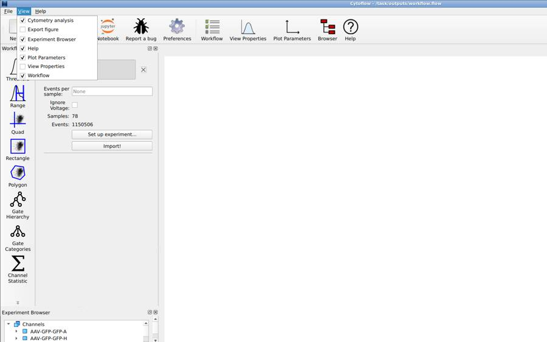
cu click 121 174; sleep 2; cu screenshot /tmp/screen.png; cat /usr/local/bin/cu | head -60
{
"file_path": "/tmp/screen.png"
}/tmp/screen.png
#!/bin/bash
# Computer-use helper: the agent's only way to act on the screen.
# cu screenshot [path] -> PNG of the screen (default /tmp/screen.png); prints path
# cu click X Y [left|right|double]
# cu move X Y | cu drag X1 Y1 X2 Y2 | cu scroll X Y up|down [N]
# cu type "text" (keystrokes) | cu paste "text" (clipboard) | cu key KEYS (e.g. ctrl+s, Return)
# cu cursor -> current mouse position
export DISPLAY=${DISPLAY:-:1}
cmd=$1; shift
case "$cmd" in
screenshot) out=${1:-/tmp/screen.png}; scrot -o "$out" && echo "$out" ;;
click) xdotool mousemove "$1" "$2"; case "${3:-left}" in
left) xdotool click 1;; right) xdotool click 3;; double) xdotool click --repeat 2 1;; esac ;;
move) xdotool mousemove "$1" "$2" ;;
drag) xdotool mousemove "$1" "$2" mousedown 1 mousemove --sync "$3" "$4" mouseup 1 ;;
scroll) xdotool mousemove "$1" "$2"; b=$([ "$3" = up ] && echo 4 || echo 5); xdotool click --repeat "${4:-3}" $b ;;
type) xdotool type --delay 50 -- "$1" ;;
# paste: put text on the clipboard (detached owner process so it survives this command) then ctrl+v
# paste: own the clipboard (no -loops: Qt asks for TARGETS first, then the text), press ctrl+v,
# give Qt a moment to fetch it, then release. Robust both locally and on Modal.
paste) printf '%s' "$1" | xclip -quiet -selection clipboard -i >/dev/null 2>&1 & cp=$!
sleep 0.3; xdotool key ctrl+v; sleep 1; kill $cp 2>/dev/null; true ;;
key) xdotool key -- "$1" ;;
cursor) xdotool getmouselocation ;;
*) sed -n '2,9p' "$0"; exit 1 ;;
esac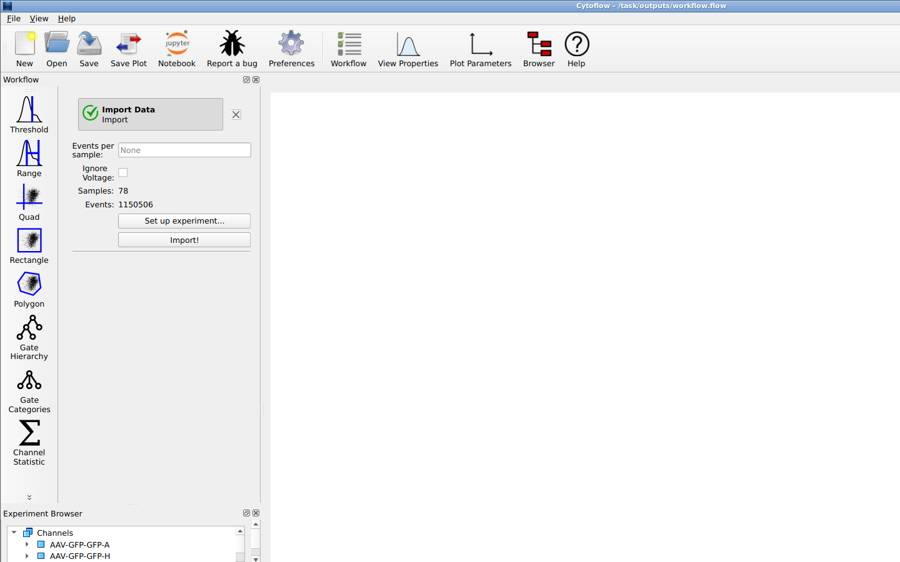
export DISPLAY=:1; xdotool search --name "Cytoflow" | while read w; do xdotool getwindowname $w; xdotool getwindowgeometry $w; done; xdpyinfo 2>/dev/null | grep dimensions
Qt Selection Owner for cytoflow Window 14680068 Position: 0,0 (screen: 0) Geometry: 3x3 cytoflow Window 14680072 Position: 0,0 (screen: 0) Geometry: 1x1 Cytoflow - /task/outputs/workflow.flow Window 14680070 Position: 2,40 (screen: 0) Geometry: 2082x1171 dimensions: 1440x900 pixels (366x229 millimeters)
cu click 700 9 double; sleep 2; cu screenshot /tmp/screen.png; DISPLAY=:1 xdotool getwindowgeometry 14680070
{
"file_path": "/tmp/screen.png"
}/tmp/screen.png Window 14680070 Position: 0,38 (screen: 0) Geometry: 1440x881
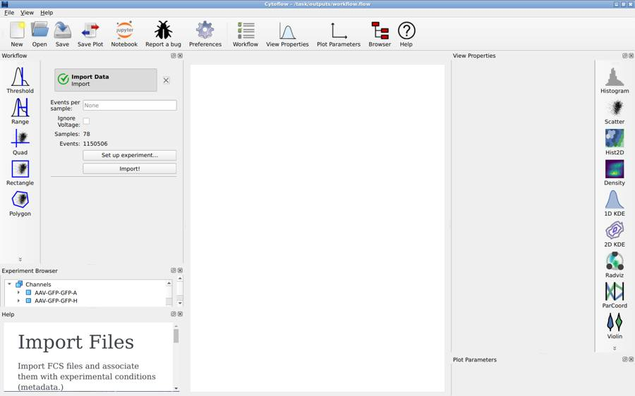
cu click 408 714; sleep 1; cu click 408 615; sleep 1; cu click 1431 817; sleep 1; cu screenshot /tmp/screen.png
{
"file_path": "/tmp/screen.png"
}/tmp/screen.png
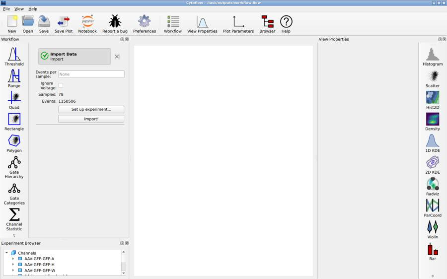
cu click 408 785; sleep 1; cu click 1393 390; sleep 3; cu screenshot /tmp/screen.png
{
"file_path": "/tmp/screen.png"
}/tmp/screen.png
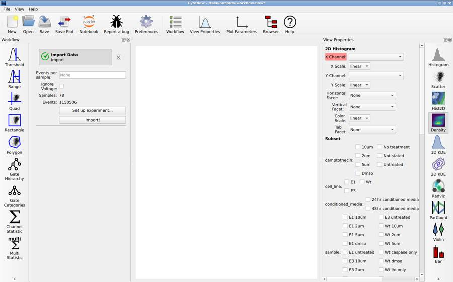
cu click 1195 181; sleep 1; cu screenshot /tmp/screen.png
{
"file_path": "/tmp/screen.png"
}/tmp/screen.png
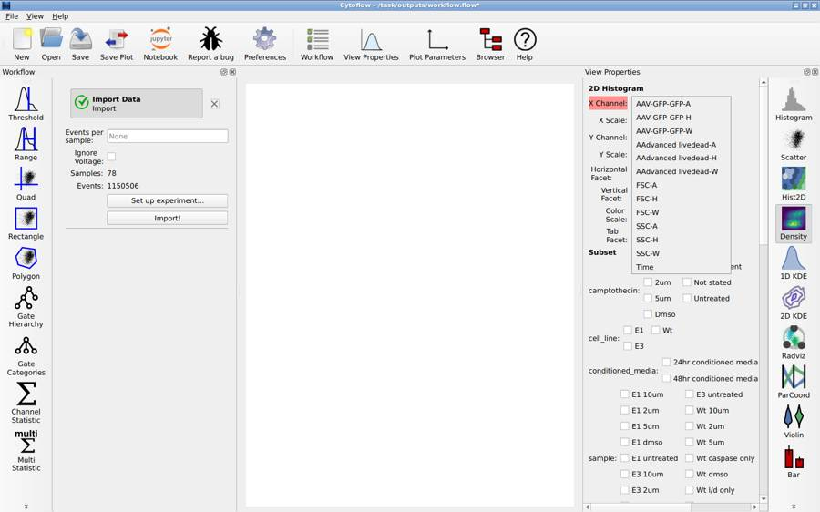
cu click 1135 325; sleep 1; cu click 1195 241; sleep 1; cu screenshot /tmp/screen.png
{
"file_path": "/tmp/screen.png"
}/tmp/screen.png
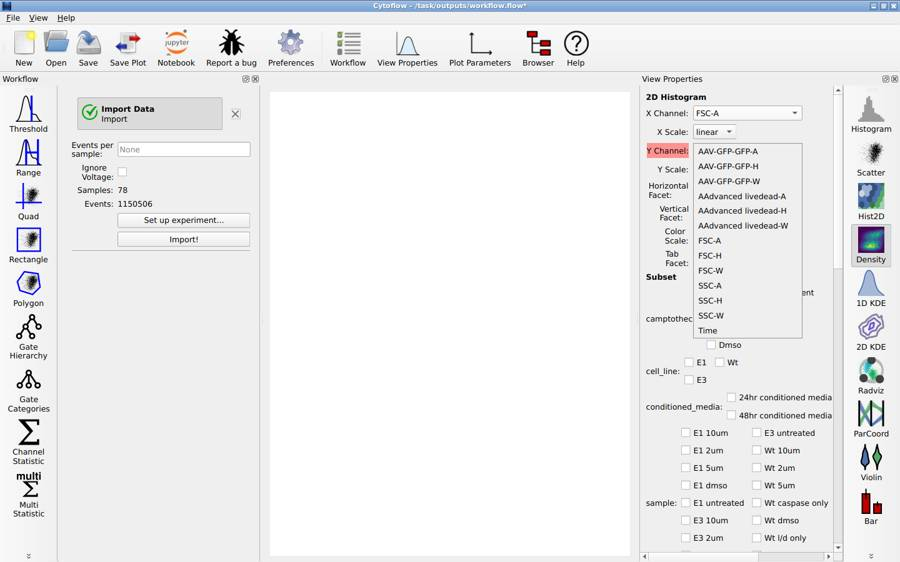
cu click 1135 457; sleep 8; cu screenshot /tmp/screen.png
{
"file_path": "/tmp/screen.png"
}/tmp/screen.png
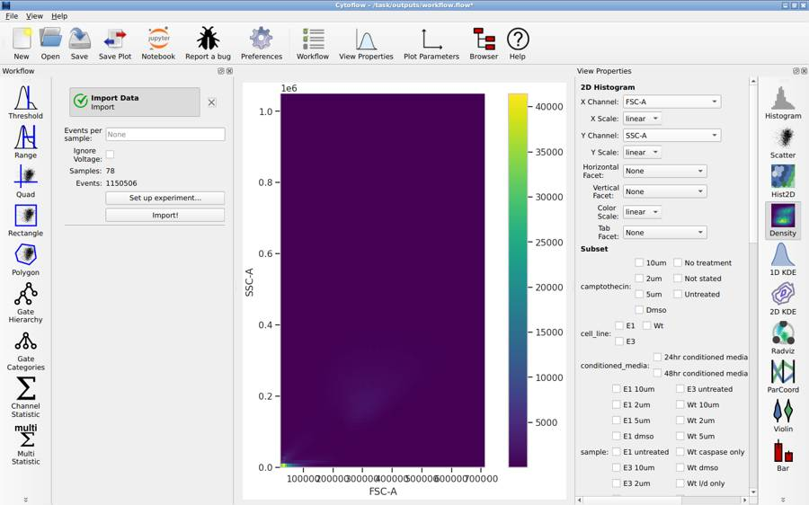
cu click 1142 378; sleep 1; cu screenshot /tmp/screen.png
{
"file_path": "/tmp/screen.png"
}/tmp/screen.png
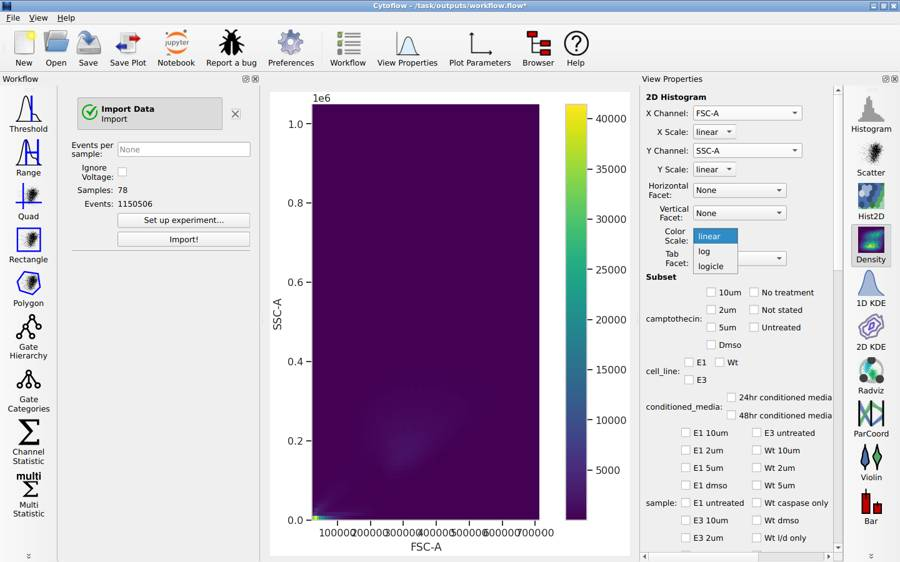
cu click 1128 402; sleep 8; cu screenshot /tmp/screen.png
{
"file_path": "/tmp/screen.png"
}/tmp/screen.png
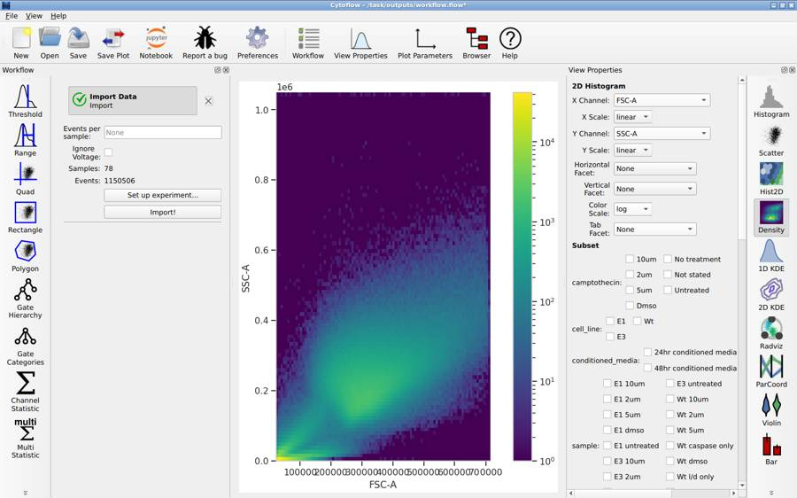
cu click 45 460; sleep 2; cu screenshot /tmp/screen.png
{
"file_path": "/tmp/screen.png"
}/tmp/screen.png
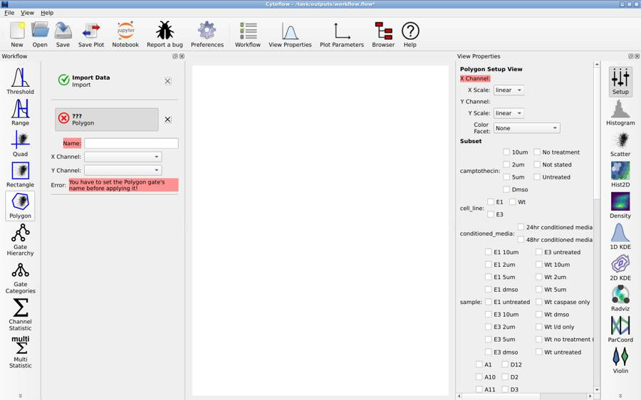
cu click 294 322; cu type "cells"; cu key Return; sleep 1; cu click 275 353; sleep 1; cu screenshot /tmp/screen.png
{
"file_path": "/tmp/screen.png"
}/tmp/screen.png
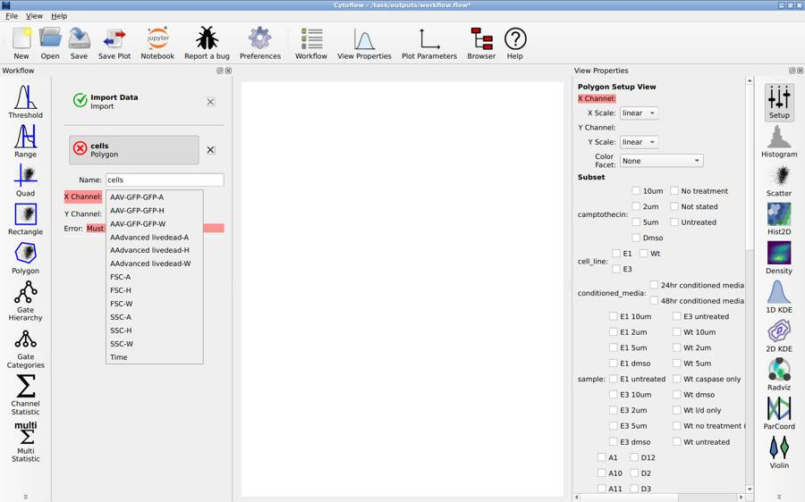
cu click 215 496; sleep 1; cu click 275 383; sleep 1; cu click 215 599; sleep 10; cu screenshot /tmp/screen.png
{
"file_path": "/tmp/screen.png"
}/tmp/screen.png
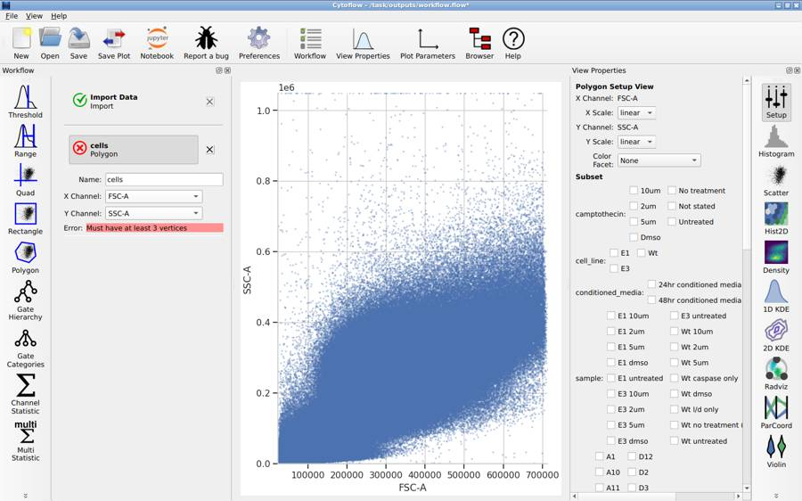
cu click 240 182; sleep 2; cu click 1393 460; sleep 3; cu screenshot /tmp/screen.png
{
"file_path": "/tmp/screen.png"
}/tmp/screen.png
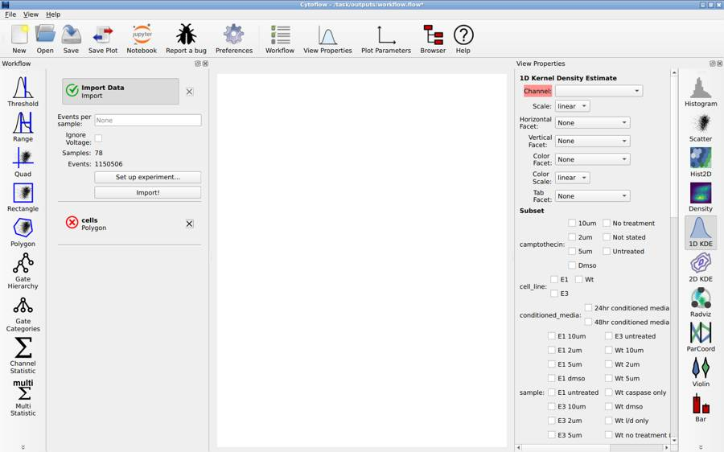
cu click 1393 390; sleep 2; cu click 1142 211; sleep 1; cu screenshot /tmp/screen.png
{
"file_path": "/tmp/screen.png"
}/tmp/screen.png
cu click 1128 236; sleep 6; cu click 1142 271; sleep 1; cu click 1128 296; sleep 8; cu screenshot /tmp/screen.png
{
"file_path": "/tmp/screen.png"
}/tmp/screen.png
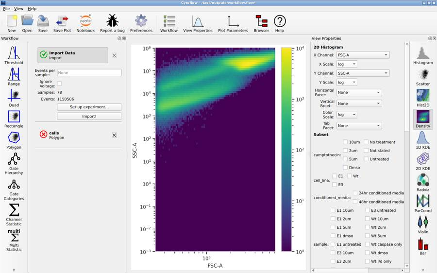
cu click 240 445; sleep 12; cu screenshot /tmp/screen.png
{
"file_path": "/tmp/screen.png"
}/tmp/screen.png

cu click 553 827; sleep 1.5; cu click 553 706; sleep 1.5; cu click 623 548; sleep 1.5; cu click 799 357; sleep 1.5; cu click 974 231; sleep 1.5; cu click 974 782; sleep 1.5; cu click 763 827 double; sleep 15; cu screenshot /tmp/screen.png
{
"file_path": "/tmp/screen.png"
}/tmp/screen.png
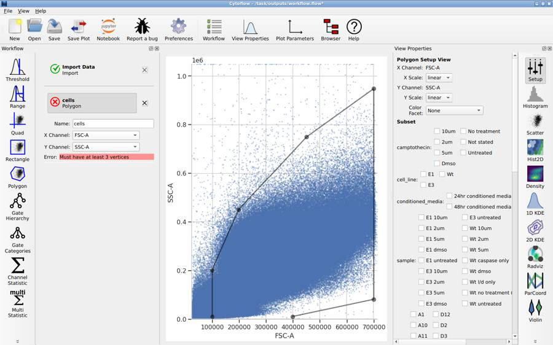
sleep 5; cu screenshot /tmp/screen.png
{
"file_path": "/tmp/screen.png"
}/tmp/screen.png

cu click 553 827; sleep 15; cu screenshot /tmp/screen.png
{
"file_path": "/tmp/screen.png"
}/tmp/screen.png
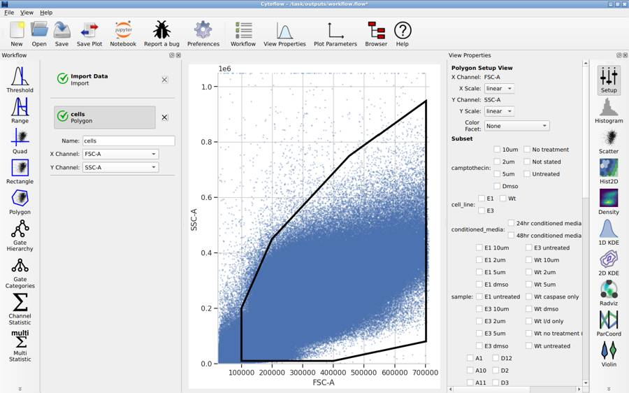
cu click 45 460; sleep 2; cu screenshot /tmp/screen.png
{
"file_path": "/tmp/screen.png"
}/tmp/screen.png
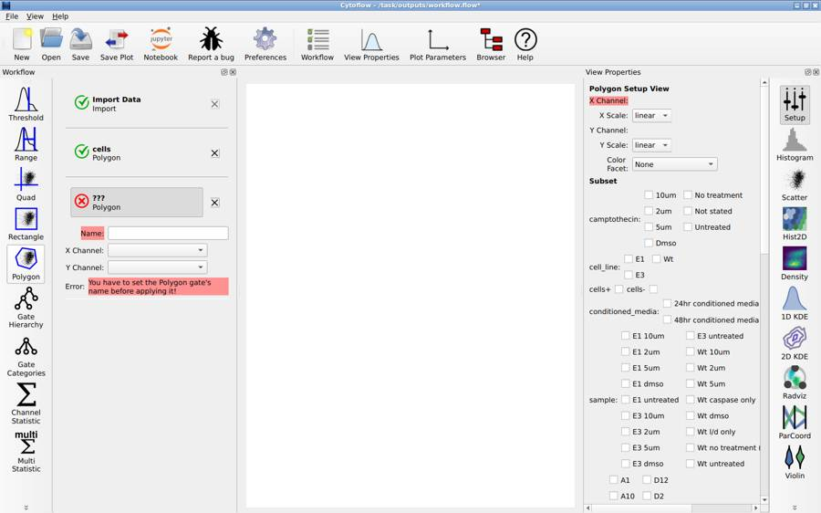
cu click 1086 507; sleep 1; cu click 294 409; cu type "singlets"; cu key Return; sleep 1; cu click 275 439; sleep 1; cu click 215 582; sleep 1; cu click 275 469; sleep 1; cu screenshot /tmp/screen.png
{
"file_path": "/tmp/screen.png"
}/tmp/screen.png
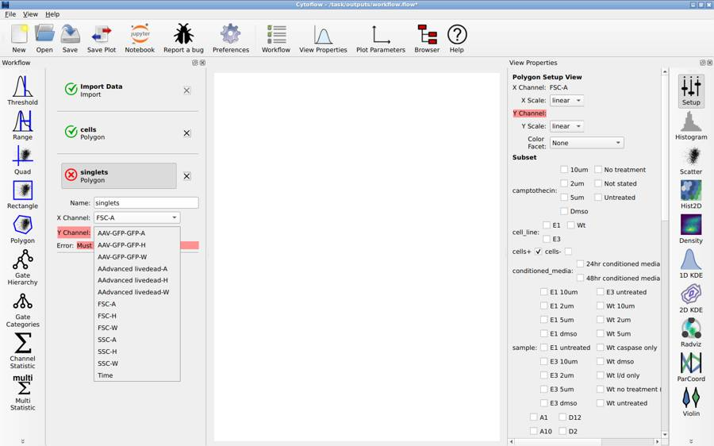
cu click 215 637; sleep 15; cu screenshot /tmp/screen.png
{
"file_path": "/tmp/screen.png"
}/tmp/screen.png
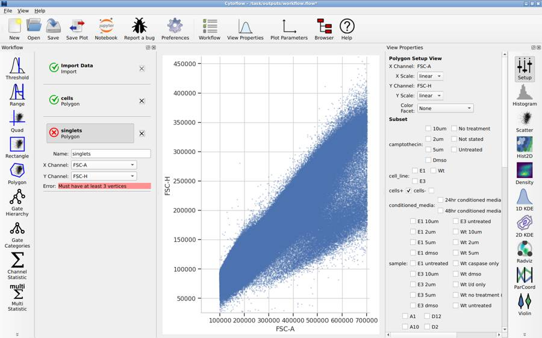
cu click 1393 460; sleep 2; cu screenshot /tmp/screen.png
{
"file_path": "/tmp/screen.png"
}/tmp/screen.png
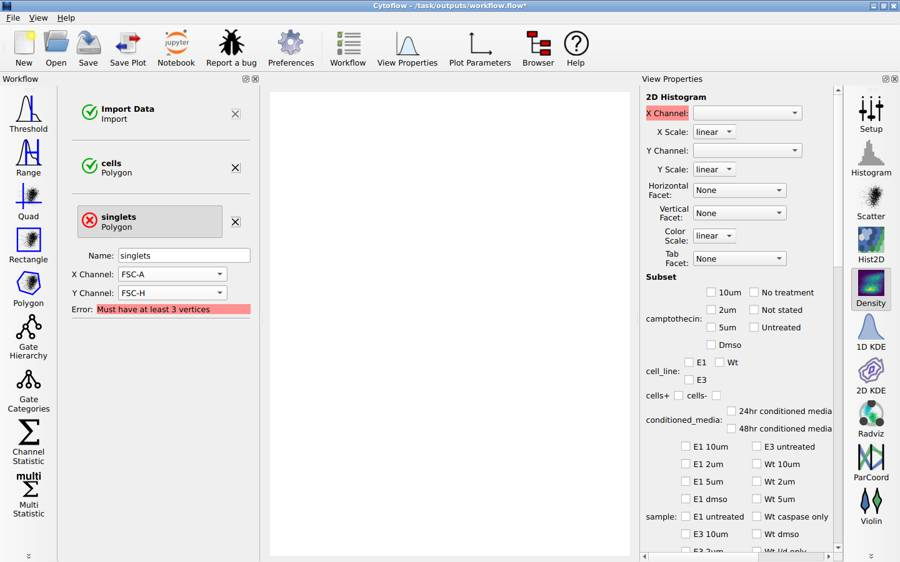
cu click 1086 633; sleep 1; cu click 1195 181; sleep 1; cu click 1135 325; sleep 1; cu click 1195 241; sleep 1; cu click 1135 409; sleep 1; cu click 1142 378; sleep 1; cu click 1128 402; sleep 10; cu screenshot /tmp/screen.png
{
"file_path": "/tmp/screen.png"
}/tmp/screen.png
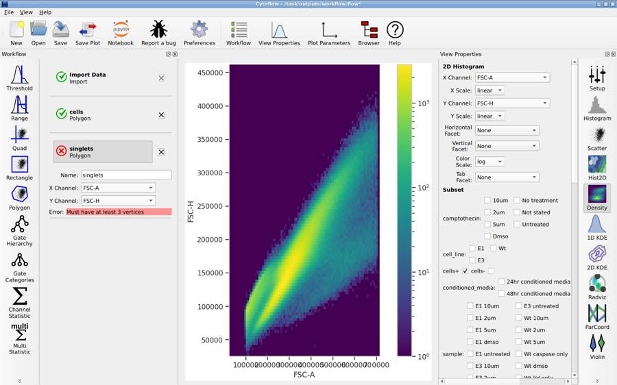
cu click 1393 180; sleep 12; cu click 582 814; sleep 1.5; cu click 582 701; sleep 1.5; cu click 977 178; sleep 1.5; cu click 977 404; sleep 1.5; cu click 582 814; sleep 15; cu screenshot /tmp/screen.png
{
"file_path": "/tmp/screen.png"
}/tmp/screen.png
cu key ctrl+s; sleep 2; cu click 45 250; sleep 2; cu click 294 495; cu type "live"; cu key Return; sleep 1; cu click 275 525; sleep 1; cu screenshot /tmp/screen.png
{
"file_path": "/tmp/screen.png"
}/tmp/screen.png
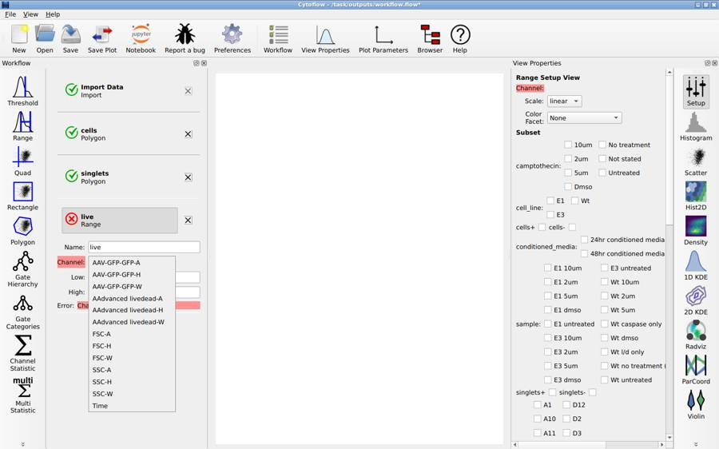
cu click 255 598; sleep 2; cu click 1393 460; sleep 2; cu screenshot /tmp/screen.png
{
"file_path": "/tmp/screen.png"
}/tmp/screen.png
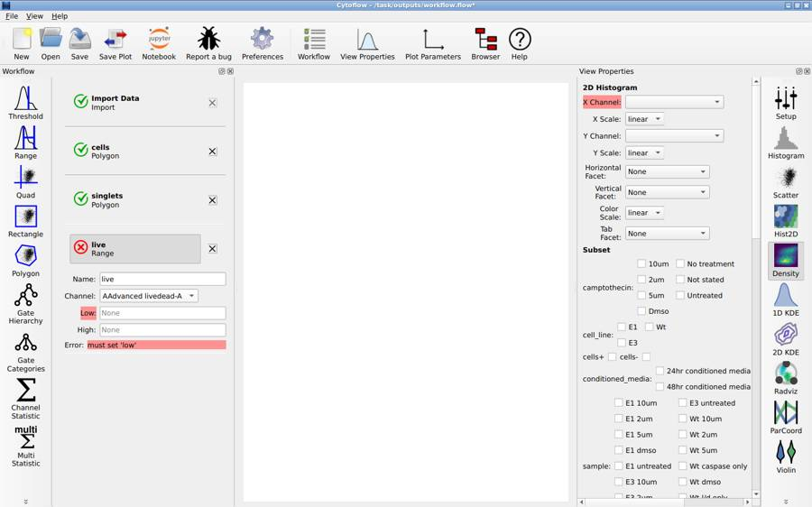
cu click 1086 633; sleep 0.5; cu click 1195 181; sleep 1; cu click 1165 182; sleep 1; cu click 1142 211; sleep 1; cu click 1137 260; sleep 1; cu click 1195 241; sleep 1; cu click 1185 314; sleep 1; cu click 1142 271; sleep 1; cu click 1137 320; sleep 1; cu click 1142 378; sleep 1; cu click 1128 402; sleep 10; cu screenshot /tmp/screen.png
{
"file_path": "/tmp/screen.png"
}/tmp/screen.png
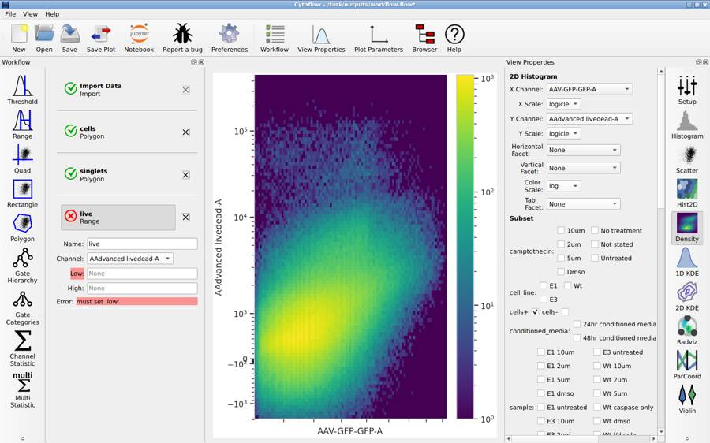
cu click 1393 250; sleep 2; cu screenshot /tmp/screen.png
{
"file_path": "/tmp/screen.png"
}/tmp/screen.png
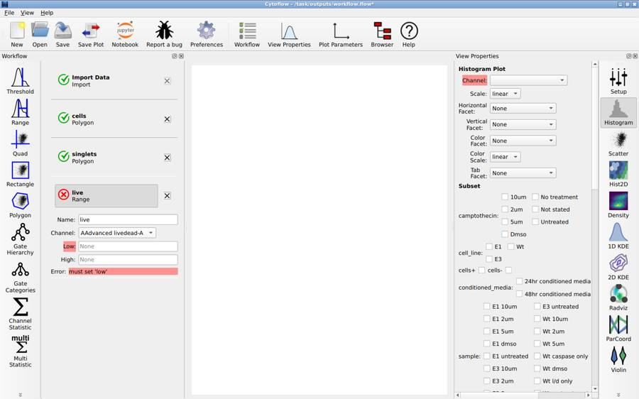
cu click 1086 609; sleep 0.5; cu click 1190 181; sleep 1; cu click 1180 254; sleep 1; cu click 1137 211; sleep 1; cu click 1132 260; sleep 1; cu click 1178 317; sleep 1; cu screenshot /tmp/screen.png
{
"file_path": "/tmp/screen.png"
}/tmp/screen.png
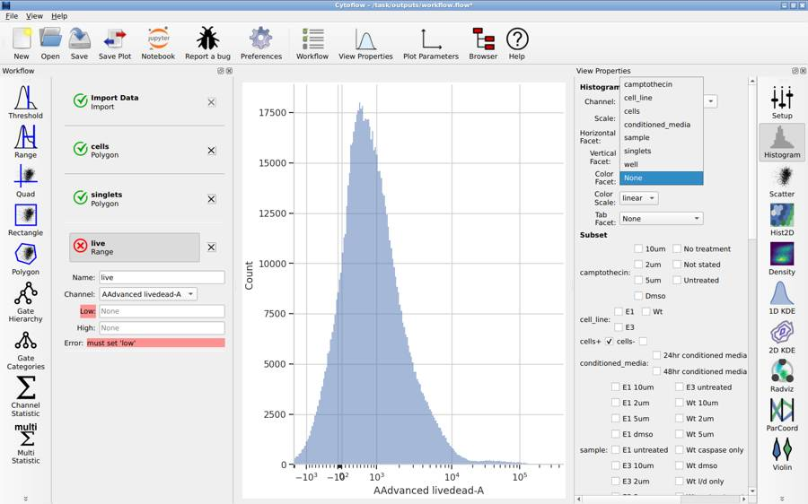
thinking
The SYTOX histogram shows a clear negative peak with a small positive tail above about 1e4. I'm overlaying the staining controls next to set the live threshold.
cu click 1135 245; sleep 3; cu scroll 1180 700 down 3; sleep 1; cu screenshot /tmp/screen.png
{
"file_path": "/tmp/screen.png"
}/tmp/screen.png
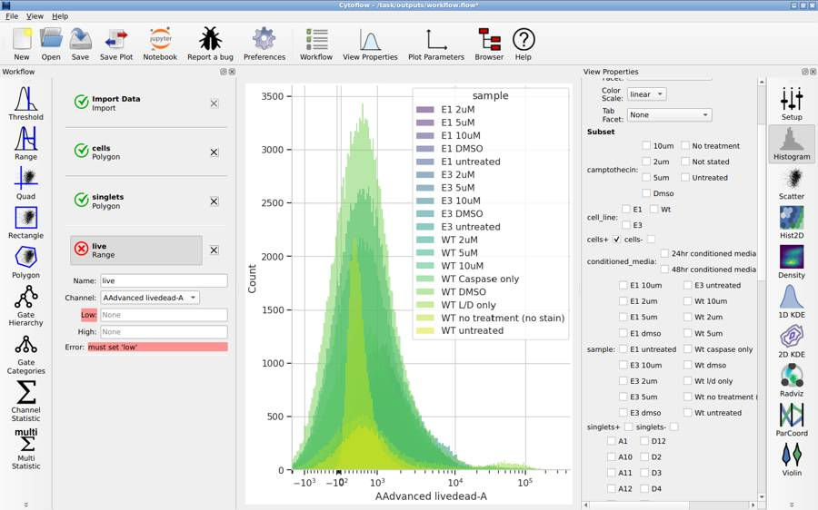
cu click 1106 753; sleep 0.5; cu click 1211 616; sleep 0.5; cu click 1211 672; sleep 0.5; cu click 1211 700; sleep 0.5; cu click 1211 728; sleep 6; cu screenshot /tmp/screen.png
{
"file_path": "/tmp/screen.png"
}/tmp/screen.png
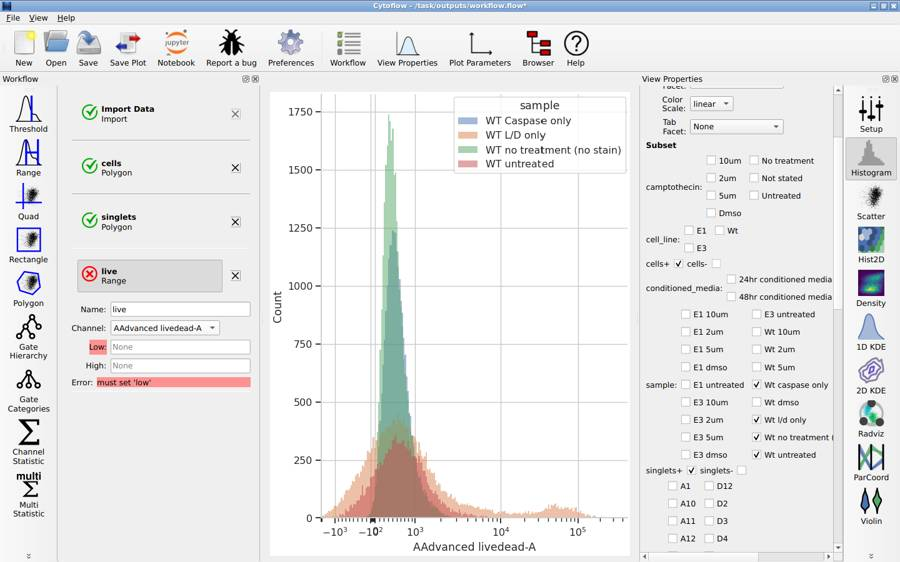
cu scroll 1180 400 up 5; sleep 1; cu click 1190 181; sleep 1; cu screenshot /tmp/screen.png
{
"file_path": "/tmp/screen.png"
}/tmp/screen.png
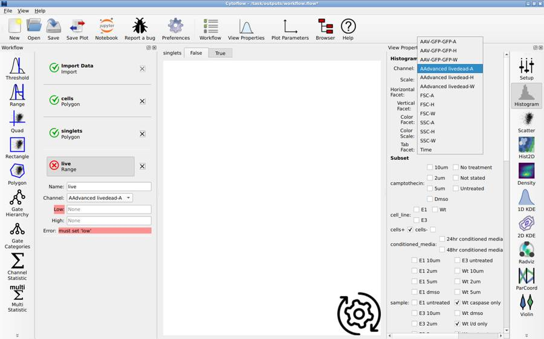
cu click 1160 110; sleep 3; cu screenshot /tmp/screen.png
{
"file_path": "/tmp/screen.png"
}/tmp/screen.png
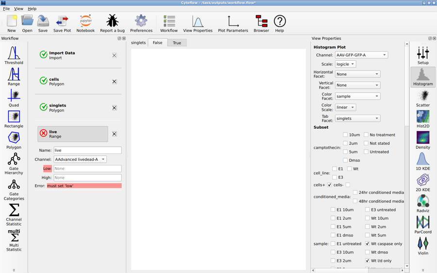
cu click 1178 390; sleep 1; cu screenshot /tmp/screen.png
{
"file_path": "/tmp/screen.png"
}/tmp/screen.png
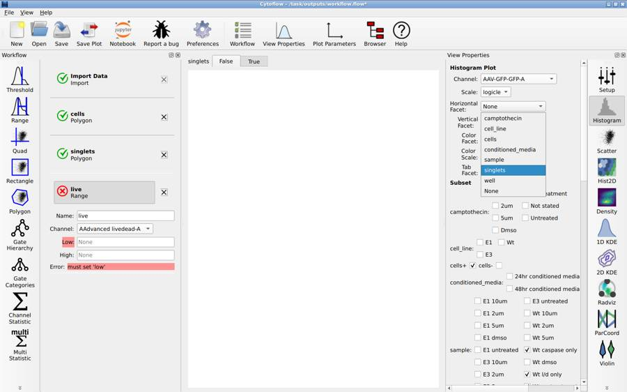
cu click 1128 438; sleep 6; cu screenshot /tmp/screen.png
{
"file_path": "/tmp/screen.png"
}/tmp/screen.png
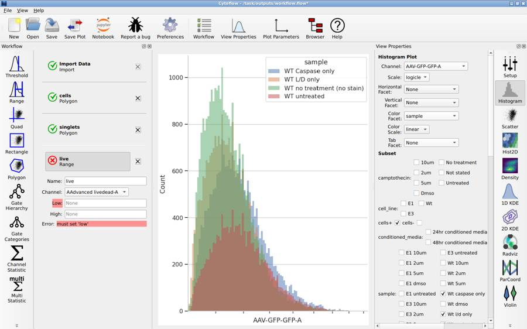
thinking
Checking the caspase (BL1) control wells now, since they overlap heavily; I'm rescaling the axis to read actual values before I pick a caspase+ threshold.
cu click 1137 211; sleep 1; cu click 1127 187; sleep 6; cu screenshot /tmp/screen.png
{
"file_path": "/tmp/screen.png"
}/tmp/screen.png
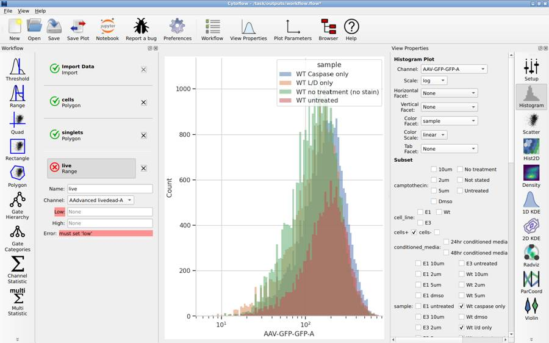
cu click 1178 317; sleep 1; cu screenshot /tmp/s1.png;
{
"file_path": "/tmp/s1.png"
}/tmp/s1.png
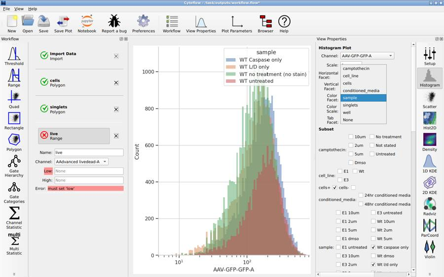
cu click 1155 222; sleep 2; cu click 1211 803; sleep 0.5; cu click 1211 859; sleep 0.5; cu scroll 1045 520 down 3; sleep 1; cu screenshot /tmp/screen.png
{
"file_path": "/tmp/screen.png"
}/tmp/screen.png
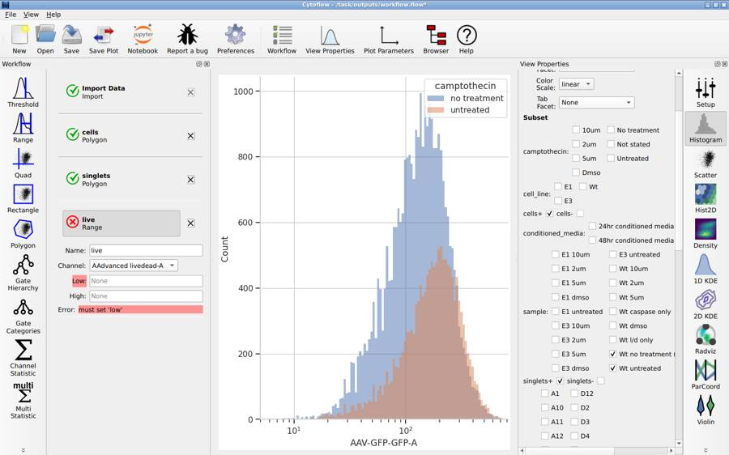
cu click 1211 700; sleep 0.5; cu click 1211 728; sleep 8; cu screenshot /tmp/screen.png
{
"file_path": "/tmp/screen.png"
}/tmp/screen.png
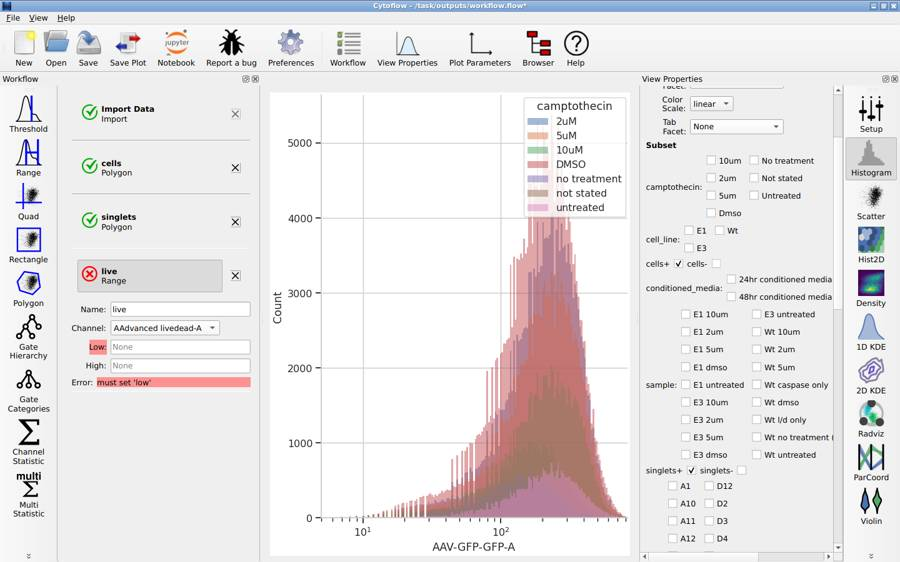
cu click 288 555 ; cu key ctrl+a; cu type "-1000000"; cu key Return; sleep 1; cu click 288 585; cu key ctrl+a; cu type "10000"; cu key Return; sleep 3; cu screenshot /tmp/screen.png
{
"file_path": "/tmp/screen.png"
}/tmp/screen.png
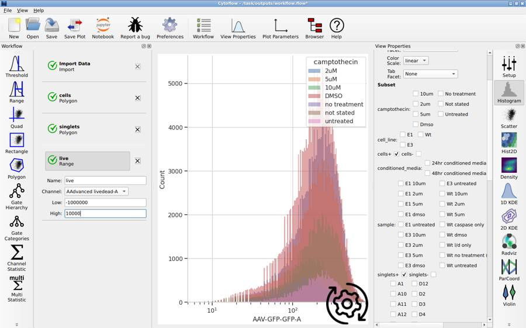
thinking
Live gate is set; next I'll add the caspase+ threshold on BL1-A, placed against the no-caspase-stain control since the signal has no clear positive peak.
cu click 45 180; sleep 2; cu screenshot /tmp/screen.png
{
"file_path": "/tmp/screen.png"
}/tmp/screen.png
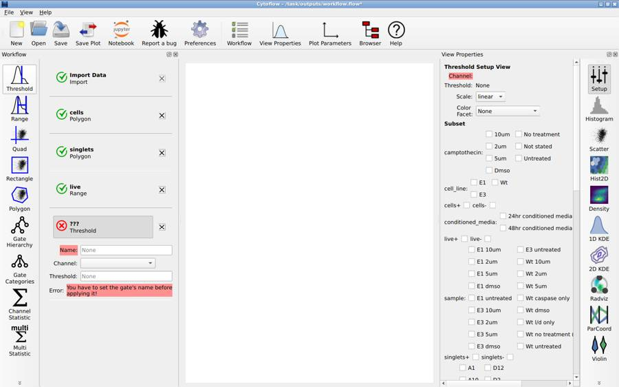
cu click 294 581; cu type "caspase_pos"; cu key Return; sleep 1; cu click 273 612; sleep 1; cu click 240 613; sleep 2; cu click 1086 477; sleep 0.5; cu click 1080 555; sleep 0.5; cu click 1106 830; sleep 0.5; cu click 1140 224; sleep 1; cu click 1130 248; sleep 1; cu click 1180 258; sleep 1; cu screenshot /tmp/screen.png
{
"file_path": "/tmp/screen.png"
}/tmp/screen.png
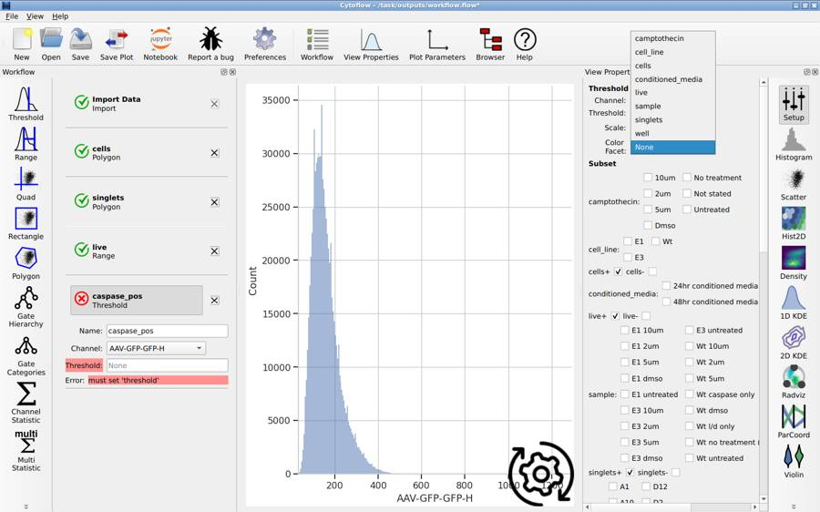
cu click 1138 186; sleep 2; cu click 273 612; sleep 1; cu screenshot /tmp/screen.png
{
"file_path": "/tmp/screen.png"
}/tmp/screen.png
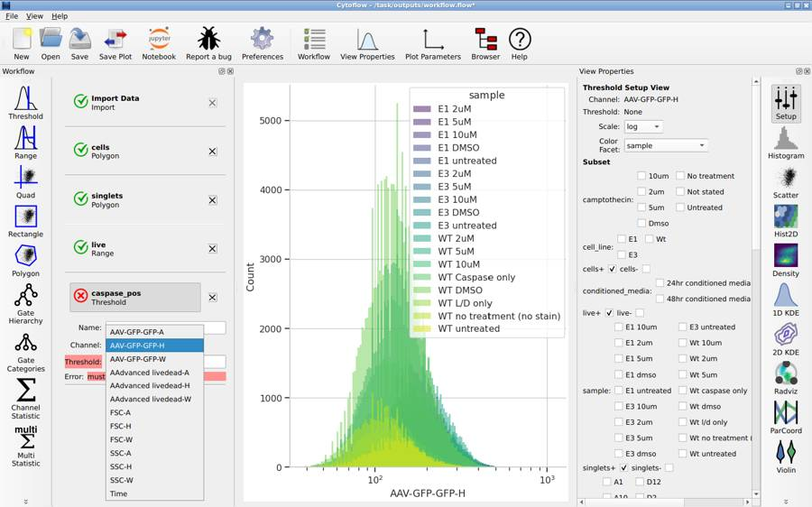
cu click 243 589; sleep 2; cu click 1211 693; sleep 0.5; cu click 1211 749; sleep 0.5; cu click 1211 777; sleep 0.5; cu click 1211 805; sleep 8; cu screenshot /tmp/screen.png
{
"file_path": "/tmp/screen.png"
}/tmp/screen.png
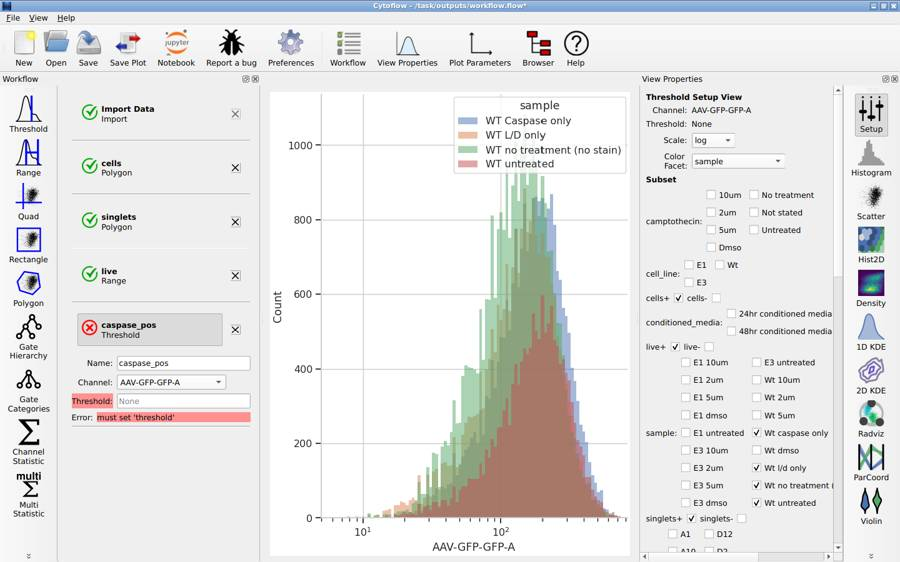
cu click 294 642; cu type "500"; cu key Return; sleep 5; cu key ctrl+s; sleep 2; cu click 45 700; sleep 2; cu screenshot /tmp/screen.png
{
"file_path": "/tmp/screen.png"
}/tmp/screen.png
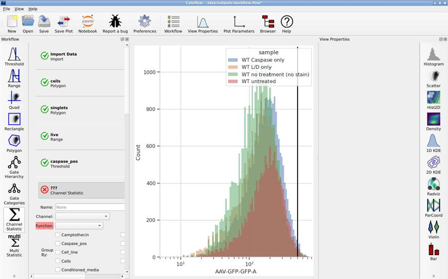
thinking
All four gates (cells, singlets, live, caspase_pos) are in place. I'm widening the workflow panel so I can reach the statistic options and add per-well event counts for each gate.
cu drag 420 510 760 510; sleep 2; cu screenshot /tmp/screen.png
{
"file_path": "/tmp/screen.png"
}/tmp/screen.png
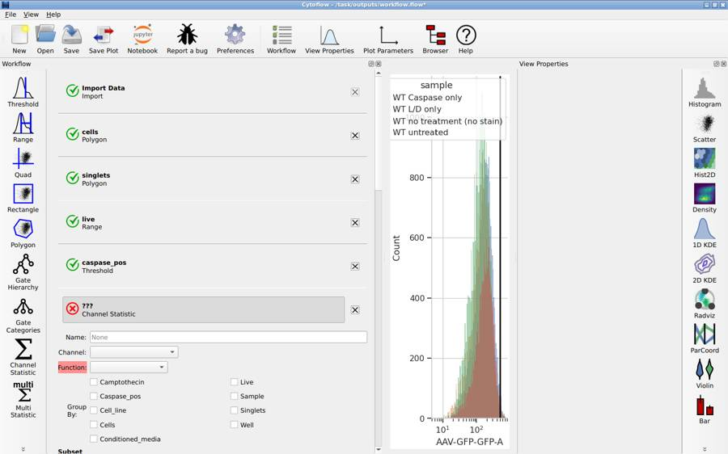
cu click 450 668; cu type "n_all"; cu key Return; sleep 1; cu click 265 698; sleep 1; cu screenshot /tmp/s1.png;
{
"file_path": "/tmp/s1.png"
}/tmp/s1.png
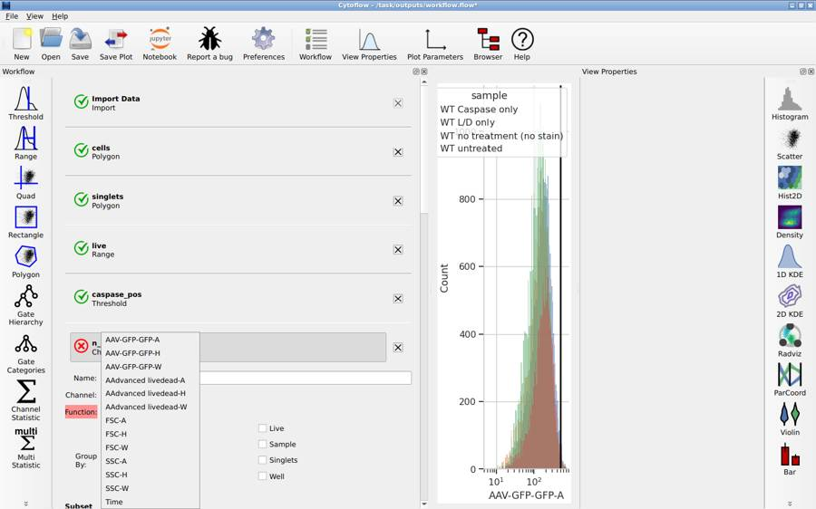
cu click 205 743; sleep 1; cu click 255 728; sleep 1; cu screenshot /tmp/s1.png;
{
"file_path": "/tmp/s1.png"
}/tmp/s1.png
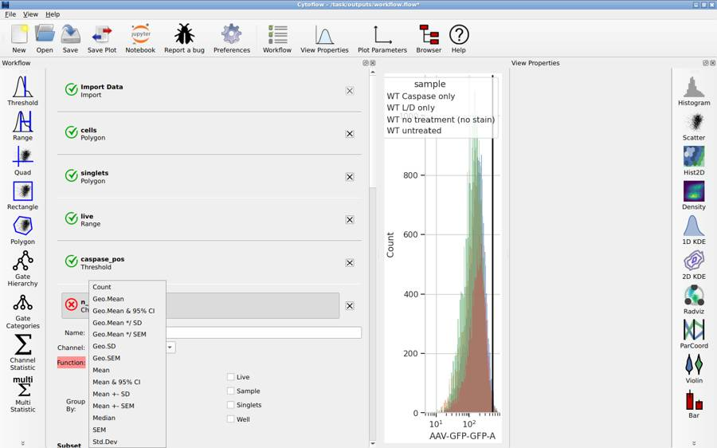
cu click 205 576; sleep 1; cu click 463 842; sleep 3; cu scroll 600 500 down 10; sleep 1; cu screenshot /tmp/s1.png;
{
"file_path": "/tmp/s1.png"
}/tmp/s1.png
cu scroll 600 500 down 40; sleep 1; cu screenshot /tmp/s1.png;
{
"file_path": "/tmp/s1.png"
}/tmp/s1.png
cu click 45 700; sleep 3; cu screenshot /tmp/s1.png;
{
"file_path": "/tmp/s1.png"
}/tmp/s1.png
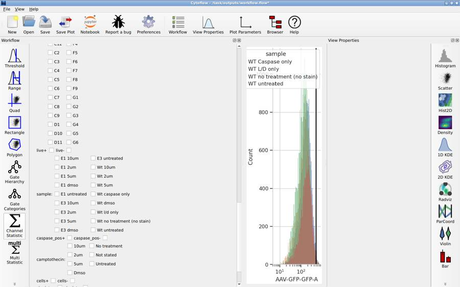
cu scroll 600 500 up 60; sleep 1; cu screenshot /tmp/s1.png;
{
"file_path": "/tmp/s1.png"
}/tmp/s1.png
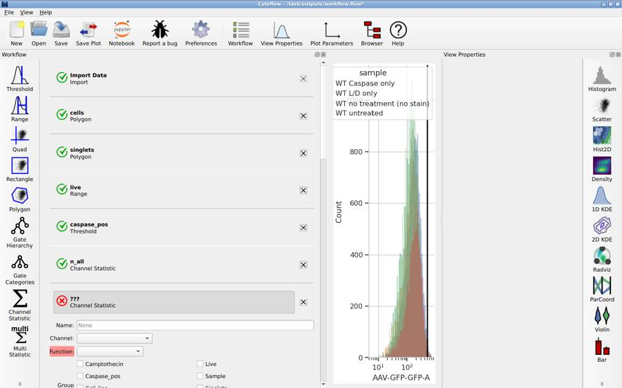
cu click 450 754; cu type "n_cells"; cu key Return; sleep 1; cu scroll 600 500 down 80; sleep 1; cu scroll 600 500 up 14; sleep 1; cu screenshot /tmp/s1.png;
{
"file_path": "/tmp/s1.png"
}/tmp/s1.png
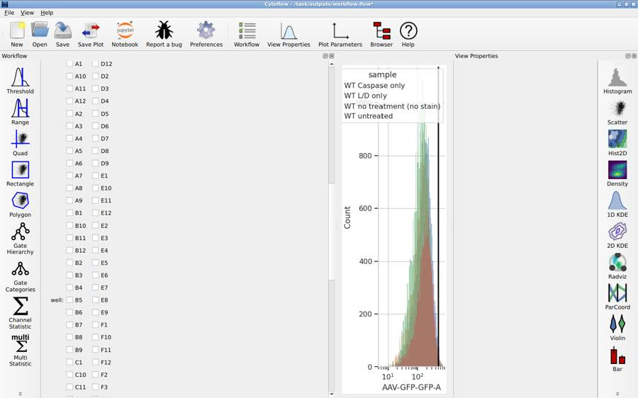
cu scroll 600 500 up 6; sleep 1; cu screenshot /tmp/s1.png;
{
"file_path": "/tmp/s1.png"
}/tmp/s1.png
cu click 265 241; sleep 1; cu click 220 385; sleep 1; cu click 255 271; sleep 1; cu screenshot /tmp/s1.png;
{
"file_path": "/tmp/s1.png"
}/tmp/s1.png
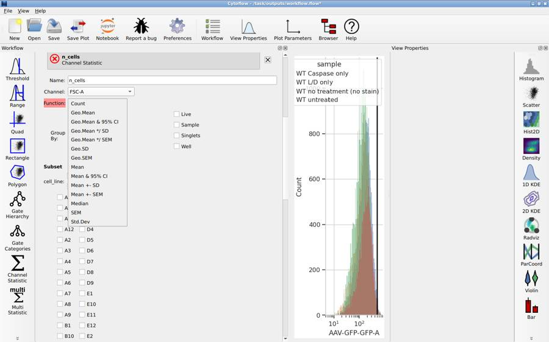
cu click 205 272; sleep 1; cu click 463 385; sleep 1; cu scroll 600 500 down 80; sleep 1; cu click 166 794; sleep 3; cu screenshot /tmp/s1.png;
{
"file_path": "/tmp/s1.png"
}/tmp/s1.png
mkdir -p /tmp/work && cat > /tmp/work/addstat.sh <<'EOF'
#!/bin/bash
# usage: addstat.sh name chan_idx func_idx [cells] [singlets] [live] [casp]
name=$1; ch=$2; fn=$3; shift 3
cu click 45 700; sleep 2.5
cu scroll 600 500 down 80; sleep 0.7
cu scroll 600 500 up 20; sleep 0.7
cu click 450 211; cu type "$name"; cu key Return; sleep 0.7
cu click 265 241; sleep 0.8; cu click 230 $((241+24*ch)); sleep 0.8
cu click 255 271; sleep 0.8; cu click 205 $((272+24*fn)); sleep 0.8
cu click 463 385; sleep 0.8
cu scroll 600 500 down 80; sleep 0.8
for s in "$@"; do
case $s in
cells) cu click 166 794;;
singlets) cu click 187 816;;
live) cu click 161 385;;
casp) cu click 217 659;;
esac
sleep 0.6
done
sleep 2
EOF
chmod +x /tmp/work/addstat.sh; /tmp/work/addstat.sh n_singlets 6 0 cells singlets; cu screenshot /tmp/s1.png{
"file_path": "/tmp/s1.png"
}/tmp/s1.png
cu scroll 600 500 up 20; sleep 1; cu screenshot /tmp/s1.png;
{
"file_path": "/tmp/s1.png"
}/tmp/s1.png
cd /tmp/work; ./addstat.sh n_live 6 0 cells singlets live; ./addstat.sh n_caspase_pos 6 0 cells singlets live casp; ./addstat.sh med_casp_live 0 11 cells singlets live; ./addstat.sh mean_casp_live 0 7 cells singlets live; ./addstat.sh time_mean 12 7; ./addstat.sh time_sd 12 13; ./addstat.sh time_median 12 11; cu scroll 600 500 up 80; sleep 1; cu screenshot /tmp/s1.png
{
"file_path": "/tmp/s1.png"
}/tmp/s1.png Shell cwd was reset to /task
cu key ctrl+s; sleep 3; cd /task/outputs; ls -la; grep -n "operation: \|^ operation\|name: \|channel: \|function\|statistic_name\|subset\|by:\|threshold\|low:\|high:\|xchannel\|ychannel" workflow.flow | grep -v "name_metadata" | head -150
total 560 drwxrwsrwx 2 agent task 4096 Nov 10 18:48 . drwxr-xr-x 4 root root 4096 Nov 5 22:00 .. -rw-rw-r-- 1 cfapp task 562780 Nov 10 19:09 workflow.flow 29: name: null 46: name: null 59: name: null 86: name: null 189: name: null 299: subset_list: 300: - !category-subset;1 301: name: camptothecin 311: - !category-subset;1 312: name: cell_line 318: - !category-subset;1 319: name: conditioned_media 326: - !category-subset;1 327: name: sample 348: - !category-subset;1 349: name: well 430: xchannel: FSC-A 433: ychannel: SSC-A 438: fcs_name: AAV-GFP-GFP-A 443: fcs_name: AAV-GFP-GFP-H 448: fcs_name: AAV-GFP-GFP-W 453: fcs_name: AAdvanced livedead-A 458: fcs_name: AAdvanced livedead-H 463: fcs_name: AAdvanced livedead-W 468: fcs_name: FSC-A 473: fcs_name: FSC-H 478: fcs_name: FSC-W 483: fcs_name: SSC-A 488: fcs_name: SSC-H 493: fcs_name: SSC-W 498: fcs_name: Time 644: operation: !import;4 1679: name: camptothecin 1690: name: cell_line 1697: name: conditioned_media 1705: name: sample 1727: name: well 1816: channel: '' 1850: subset_list: 1851: - !category-subset;1 1852: name: camptothecin 1862: - !category-subset;1 1863: name: cell_line 1869: - !category-subset;1 1870: name: conditioned_media 1877: - !category-subset;1 1878: name: sample 1899: - !category-subset;1 1900: name: well 2011: name: null 2028: name: null 2040: name: null 2052: name: null 2079: name: null 2182: name: null 2267: name: cells 2293: xchannel: FSC-A 2295: ychannel: SSC-A 2320: subset_list: 2321: - !category-subset;1 2322: name: camptothecin 2332: - !category-subset;1 2333: name: cell_line 2339: - !category-subset;1 2340: name: conditioned_media 2347: - !category-subset;1 2348: name: sample 2369: - !category-subset;1 2370: name: well 2453: fcs_name: AAV-GFP-GFP-A 2458: fcs_name: AAV-GFP-GFP-H 2463: fcs_name: AAV-GFP-GFP-W 2468: fcs_name: AAdvanced livedead-A 2473: fcs_name: AAdvanced livedead-H 2478: fcs_name: AAdvanced livedead-W 2483: fcs_name: FSC-A 2488: fcs_name: FSC-H 2493: fcs_name: FSC-W 2498: fcs_name: SSC-A 2503: fcs_name: SSC-H 2508: fcs_name: SSC-W 2513: fcs_name: Time 2666: operation: *id004 3066: name: camptothecin 3077: name: cell_line 3084: name: conditioned_media 3092: name: sample 3114: name: well 3230: name: null 3247: name: null 3259: name: null 3271: name: null 3298: name: null 3325: name: null 3412: name: null 3497: name: singlets 3511: xchannel: FSC-A 3513: ychannel: FSC-H 3538: subset_list: 3539: - !category-subset;1 3540: name: camptothecin 3550: - !category-subset;1 3551: name: cell_line 3557: - !bool-subset;1 3558: name: cells 3564: - !category-subset;1 3565: name: conditioned_media 3572: - !category-subset;1 3573: name: sample 3594: - !category-subset;1 3595: name: well 3678: fcs_name: AAV-GFP-GFP-A 3683: fcs_name: AAV-GFP-GFP-H 3688: fcs_name: AAV-GFP-GFP-W 3693: fcs_name: AAdvanced livedead-A 3698: fcs_name: AAdvanced livedead-H 3703: fcs_name: AAdvanced livedead-W 3708: fcs_name: FSC-A 3713: fcs_name: FSC-H 3718: fcs_name: FSC-W 3723: fcs_name: SSC-A 3728: fcs_name: SSC-H 3733: fcs_name: SSC-W 3738: fcs_name: Time 3898: operation: *id006 4298: name: camptothecin 4309: name: cell_line 4316: name: conditioned_media 4324: name: sample 4346: name: well 4460: subset_list: 4461: - !category-subset;1 4462: name: camptothecin 4472: - !category-subset;1 4473: name: cell_line 4479: - !bool-subset;1 4480: name: cells 4484: - !category-subset;1 4485: name: conditioned_media 4492: - !category-subset;1 4493: name: sample 4514: - !category-subset;1 4515: name: well 4596: xchannel: FSC-A 4599: ychannel: FSC-H 4630: name: null 4647: name: null 4659: name: null 4671: name: null 4682: name: null
cd /tmp/work && cat > parseflow.py <<'EOF'
import yaml, sys
class L(yaml.SafeLoader): pass
def multi(loader, suffix, node):
if isinstance(node, yaml.MappingNode):
d = loader.construct_mapping(node, deep=True); d['__tag__']=suffix; return d
if isinstance(node, yaml.SequenceNode): return loader.construct_sequence(node, deep=True)
return loader.construct_scalar(node)
L.add_multi_constructor('!', multi)
wf = yaml.load(open(sys.argv[1]), Loader=L)
for item in wf:
op = item['operation']
tag = op.get('__tag__')
d = {k:v for k,v in op.items() if k not in ('tubes','conditions','channels_list','__tag__','subset_list')}
sub = []
for s in op.get('subset_list', []) or []:
t = s.get('__tag__','')
if t.startswith('bool'):
if s.get('selected_t') or s.get('selected_f'): sub.append((s['name'], s.get('selected_t'), s.get('selected_f')))
elif t.startswith('category'):
if s.get('selected'): sub.append((s['name'], s['selected']))
else:
sub.append((s.get('name'), {k:v for k,v in s.items() if k not in('name','__tag__','values')}))
print(tag, d, 'SUBSET:', sub)
EOF
python3 parseflow.py /task/outputs/workflow.flow 2>&1 | cut -c1-600Traceback (most recent call last):
File "/tmp/work/parseflow.py", line 9, in <module>
wf = yaml.load(open(sys.argv[1]), Loader=L)
^^^^^^^^^^^^^^^^^^^^^^^^^^^^^^^^^^^^^^
File "/usr/lib/python3/dist-packages/yaml/__init__.py", line 81, in load
return loader.get_single_data()
^^^^^^^^^^^^^^^^^^^^^^^^
File "/usr/lib/python3/dist-packages/yaml/constructor.py", line 51, in get_single_data
return self.construct_document(node)
^^^^^^^^^^^^^^^^^^^^^^^^^^^^^
File "/usr/lib/python3/dist-packages/yaml/constructor.py", line 60, in construct_document
for dummy in generator:
File "/usr/lib/python3/dist-packages/yaml/constructor.py", line 408, in construct_yaml_seq
data.extend(self.construct_sequence(node))
^^^^^^^^^^^^^^^^^^^^^^^^^^^^^
File "/usr/lib/python3/dist-packages/yaml/constructor.py", line 129, in construct_sequence
return [self.construct_object(child, deep=deep)
^^^^^^^^^^^^^^^^^^^^^^^^^^^^^^^^^^^^^^^
File "/usr/lib/python3/dist-packages/yaml/constructor.py", line 102, in construct_object
data = constructor(self, tag_suffix, node)
^^^^^^^^^^^^^^^^^^^^^^^^^^^^^^^^^^^
File "/tmp/work/parseflow.py", line 5, in multi
d = loader.construct_mapping(node, deep=True); d['__tag__']=suffix; return d
^^^^^^^^^^^^^^^^^^^^^^^^^^^^^^^^^^^^^^^^^
File "/usr/lib/python3/dist-packages/yaml/constructor.py", line 218, in construct_mapping
return super().construct_mapping(node, deep=deep)
^^^^^^^^^^^^^^^^^^^^^^^^^^^^^^^^^^^^^^^^^^
File "/usr/lib/python3/dist-packages/yaml/constructor.py", line 143, in construct_mapping
value = self.construct_object(value_node, deep=deep)
^^^^^^^^^^^^^^^^^^^^^^^^^^^^^^^^^^^^^^^^^^^^
File "/usr/lib/python3/dist-packages/yaml/constructor.py", line 102, in construct_object
data = constructor(self, tag_suffix, node)
^^^^^^^^^^^^^^^^^^^^^^^^^^^^^^^^^^^
File "/tmp/work/parseflow.py", line 5, in multi
d = loader.construct_mapping(node, deep=True); d['__tag__']=suffix; return d
^^^^^^^^^^^^^^^^^^^^^^^^^^^^^^^^^^^^^^^^^
File "/usr/lib/python3/dist-packages/yaml/constructor.py", line 218, in construct_mapping
return super().construct_mapping(node, deep=deep)
^^^^^^^^^^^^^^^^^^^^^^^^^^^^^^^^^^^^^^^^^^
File "/usr/lib/python3/dist-packages/yaml/constructor.py", line 143, in construct_mapping
value = self.construct_object(value_node, deep=deep)
^^^^^^^^^^^^^^^^^^^^^^^^^^^^^^^^^^^^^^^^^^^^
File "/usr/lib/python3/dist-packages/yaml/constructor.py", line 102, in construct_object
data = constructor(self, tag_suffix, node)
^^^^^^^^^^^^^^^^^^^^^^^^^^^^^^^^^^^
File "/tmp/work/parseflow.py", line 5, in multi
d = loader.construct_mapping(node, deep=True); d['__tag__']=suffix; return d
^^^^^^^^^^^^^^^^^^^^^^^^^^^^^^^^^^^^^^^^^
File "/usr/lib/python3/dist-packages/yaml/constructor.py", line 218, in construct_mapping
return super().construct_mapping(node, deep=deep)
^^^^^^^^^^^^^^^^^^^^^^^^^^^^^^^^^^^^^^^^^^
File "/usr/lib/python3/dist-packages/yaml/constructor.py", line 143, in construct_mapping
value = self.construct_object(value_node, deep=deep)
^^^^^^^^^^^^^^^^^^^^^^^^^^^^^^^^^^^^^^^^^^^^
File "/usr/lib/python3/dist-packages/yaml/constructor.py", line 100, in construct_object
data = constructor(self, node)
^^^^^^^^^^^^^^^^^^^^^^^
File "/usr/lib/python3/dist-packages/yaml/constructor.py", line 427, in construct_undefined
raise ConstructorError(None, None,
yaml.constructor.ConstructorError: could not determine a constructor for the tag 'tag:yaml.org,2002:python/tuple'
in "/task/outputs/workflow.flow", line 291, column 13
Shell cwd was reset to /taskcd /tmp/work && sed -i "s/^L.add_multi_constructor('!', multi)/L.add_multi_constructor('!', multi)\nL.add_multi_constructor('tag:yaml.org,2002:python\/', multi)/" parseflow.py && python3 parseflow.py /task/outputs/workflow.flow 2>&1 | cut -c1-700 | tail -40import;4 {'events': None, 'ignore_v_bool': False, 'name_metadata': None} SUBSET: []
polygon;1 {'name': 'cells', 'vertices': [[99480.78455274865, 10412.280643028702], [99480.78455274865, 200618.45552349245], [199157.33728655876, 449854.13295306556], [452067.99347682326, 749920.7709110385], [702003.2301824965, 948325.487812212], [702003.2301824965, 80919.74202113165], [399998.1524964747, 10412.280643028702], [399998.1524964747, 10412.280643028702]], 'xchannel': 'FSC-A', 'xscale': 'linear', 'ychannel': 'SSC-A', 'yscale': 'linear'} SUBSET: []
polygon;1 {'name': 'singlets', 'vertices': [[96034.92232995524, 37507.0224323938], [96034.92232995524, 110117.31674011509], [706988.2116875383, 444524.36024907004], [706988.2116875383, 299969.92112268915]], 'xchannel': 'FSC-A', 'xscale': 'linear', 'ychannel': 'FSC-H', 'yscale': 'linear'} SUBSET: []
range;1 {'channel': 'AAdvanced livedead-A', 'high': 10000.0, 'low': -1000000.0, 'name': 'live'} SUBSET: []
threshold;1 {'channel': 'AAV-GFP-GFP-A', 'name': 'caspase_pos', 'threshold': 500.0} SUBSET: []
channel-statistic;2 {'by': ['well'], 'channel': 'FSC-A', 'function_name': 'Count', 'name': 'n_all'} SUBSET: []
channel-statistic;2 {'by': ['well'], 'channel': 'FSC-A', 'function_name': 'Count', 'name': 'n_cells'} SUBSET: [('cells', True, False)]
channel-statistic;2 {'by': ['well'], 'channel': 'FSC-A', 'function_name': 'Count', 'name': 'n_singlets'} SUBSET: [('cells', True, False), ('singlets', True, False)]
channel-statistic;2 {'by': ['well'], 'channel': 'FSC-A', 'function_name': 'Count', 'name': 'n_live'} SUBSET: [('cells', True, False), ('live', True, False), ('singlets', True, False)]
channel-statistic;2 {'by': ['well'], 'channel': 'FSC-A', 'function_name': 'Count', 'name': 'n_caspase_pos'} SUBSET: [('caspase_pos', True, False), ('cells', True, False), ('live', True, False), ('singlets', True, False)]
channel-statistic;2 {'by': ['well'], 'channel': 'AAV-GFP-GFP-A', 'function_name': 'Median', 'name': 'med_casp_live'} SUBSET: [('cells', True, False), ('live', True, False), ('singlets', True, False)]
channel-statistic;2 {'by': ['well'], 'channel': 'AAV-GFP-GFP-A', 'function_name': 'Mean', 'name': 'mean_casp_live'} SUBSET: [('cells', True, False), ('live', True, False), ('singlets', True, False)]
channel-statistic;2 {'by': ['well'], 'channel': 'Time', 'function_name': 'Mean', 'name': 'time_mean'} SUBSET: []
channel-statistic;2 {'by': ['well'], 'channel': 'Time', 'function_name': 'Std.Dev', 'name': 'time_sd'} SUBSET: []
channel-statistic;2 {'by': ['well'], 'channel': 'Time', 'function_name': 'Median', 'name': 'time_median'} SUBSET: []
Shell cwd was reset to /taskcu click 1393 889; sleep 1; cu screenshot /tmp/s1.png
{
"file_path": "/tmp/s1.png"
}/tmp/s1.png
cu scroll 600 500 down 80; sleep 1; cu screenshot /tmp/s1.png
{
"file_path": "/tmp/s1.png"
}/tmp/s1.png
cu click 1393 889; sleep 1; cu click 1400 460; sleep 3; cu screenshot /tmp/s1.png
{
"file_path": "/tmp/s1.png"
}/tmp/s1.png
cu drag 760 510 430 510; sleep 2; cu click 1177 181; sleep 1; cu screenshot /tmp/s1.png
{
"file_path": "/tmp/s1.png"
}/tmp/s1.png
cu click 1137 254; sleep 2; cu screenshot /tmp/s1.png
{
"file_path": "/tmp/s1.png"
}/tmp/s1.png
cu click 1154 211; sleep 1; cu screenshot /tmp/s1.png
{
"file_path": "/tmp/s1.png"
}/tmp/s1.png
cu click 1140 212; sleep 1; cu click 1144 241; sleep 1; cu screenshot /tmp/s1.png
{
"file_path": "/tmp/s1.png"
}/tmp/s1.png
cu click 1135 218; sleep 4; cu screenshot /tmp/s1.png
{
"file_path": "/tmp/s1.png"
}/tmp/s1.png

sleep 5; cu screenshot /tmp/s1.png
{
"file_path": "/tmp/s1.png"
}/tmp/s1.png
cu scroll 1045 600 down 30; sleep 1; cu screenshot /tmp/s1.png
{
"file_path": "/tmp/s1.png"
}/tmp/s1.png
cu scroll 1045 600 up 30; sleep 1; cu click 1218 392; sleep 2; cu screenshot /tmp/s1.png
{
"file_path": "/tmp/s1.png"
}/tmp/s1.png
mkdir -p /task/outputs/cytoflow_exports && chmod 777 /task/outputs/cytoflow_exports; cu click 706 567; cu paste "/task/outputs/cytoflow_exports/n_all.csv"; sleep 0.5; cu key Return; sleep 3; cu screenshot /tmp/s1.png; ls -la /task/outputs/cytoflow_exports; head -5 /task/outputs/cytoflow_exports/n_all.csv
{
"file_path": "/tmp/s1.png"
}/tmp/s1.png total 12 drwxrwsrwx 2 root task 4096 Nov 10 19:11 . drwxrwsrwx 3 agent task 4096 Nov 10 19:11 .. -rw-rw-r-- 1 cfapp task 1389 Nov 10 19:11 n_all.csv well = A1,30920.0 well = A10,24604.0 well = A11,38346.0 well = A12,31708.0 well = A2,31266.0
cu click 1177 181; sleep 1; cu click 1150 $((181+24*2)); sleep 3; cu screenshot /tmp/s1.png
{
"file_path": "/tmp/s1.png"
}/tmp/s1.png
cat > /tmp/work/exp.sh <<'EOF' #!/bin/bash # usage: exp.sh name cu click 1218 392; sleep 2 cu click 706 567; cu paste "/task/outputs/cytoflow_exports/$1.csv"; sleep 0.5; cu key Return; sleep 3 EOF cat > /tmp/work/sw.sh <<'EOF' #!/bin/bash # usage: sw.sh cur_idx new_idx cu click 1177 181; sleep 1; cu click 1150 $((181+24*($2-$1))); sleep 3 EOF chmod +x /tmp/work/*.sh; cd /tmp/work; ./exp.sh n_cells; ./sw.sh 5 7; ./exp.sh n_singlets; ./sw.sh 7 6; ./exp.sh n_live; ./sw.sh 6 4; ./exp.sh n_caspase_pos; cu screenshot /tmp/s1.png; ls -la /task/outputs/cytoflow_exports; for f in /task/outputs/cytoflow_exports/*.csv; do echo $f; head -3 "$f"; wc -l "$f"; done
{
"file_path": "/tmp/s1.png"
}/tmp/s1.png total 28 drwxrwsrwx 2 root task 4096 Nov 10 19:12 . drwxrwsrwx 3 agent task 4096 Nov 10 19:11 .. -rw-rw-r-- 1 cfapp task 1389 Nov 10 19:11 n_all.csv -rw-rw-r-- 1 cfapp task 1255 Nov 10 19:12 n_caspase_pos.csv -rw-rw-r-- 1 cfapp task 1372 Nov 10 19:11 n_cells.csv -rw-rw-r-- 1 cfapp task 1370 Nov 10 19:12 n_live.csv -rw-rw-r-- 1 cfapp task 1370 Nov 10 19:12 n_singlets.csv /task/outputs/cytoflow_exports/n_all.csv well = A1,30920.0 well = A10,24604.0 well = A11,38346.0 78 /task/outputs/cytoflow_exports/n_all.csv /task/outputs/cytoflow_exports/n_caspase_pos.csv well = A1,226.0 well = A10,194.0 well = A11,240.0 78 /task/outputs/cytoflow_exports/n_caspase_pos.csv /task/outputs/cytoflow_exports/n_cells.csv well = A1,22710.0 well = A10,18370.0 well = A11,26933.0 78 /task/outputs/cytoflow_exports/n_cells.csv /task/outputs/cytoflow_exports/n_live.csv well = A1,20107.0 well = A10,16825.0 well = A11,24815.0 78 /task/outputs/cytoflow_exports/n_live.csv /task/outputs/cytoflow_exports/n_singlets.csv well = A1,20412.0 well = A10,17006.0 well = A11,25007.0 78 /task/outputs/cytoflow_exports/n_singlets.csv Shell cwd was reset to /task
cd /tmp/work; ./sw.sh 4 2; cu screenshot /tmp/s1.png
{
"file_path": "/tmp/s1.png"
}/tmp/s1.png Shell cwd was reset to /task
cd /tmp/work; cu click 1175 211; sleep 1; cu click 1160 213; sleep 2; ./exp.sh med_casp_live; ./sw.sh 2 1; ./exp.sh mean_casp_live; ./sw.sh 1 8; cu click 1175 211; sleep 1; cu click 1160 213; sleep 2; ./exp.sh time_mean; ./sw.sh 8 9; ./exp.sh time_median; ./sw.sh 9 10; ./exp.sh time_sd; cu screenshot /tmp/s1.png; ls -la /task/outputs/cytoflow_exports; for f in /task/outputs/cytoflow_exports/*.csv; do echo $f; head -2 "$f"; wc -l < "$f"; done
{
"file_path": "/tmp/s1.png"
}/tmp/s1.png total 48 drwxrwsrwx 2 root task 4096 Nov 10 19:13 . drwxrwsrwx 3 agent task 4096 Nov 10 19:11 .. -rw-rw-r-- 1 cfapp task 2244 Nov 10 19:13 mean_casp_live.csv -rw-rw-r-- 1 cfapp task 1266 Nov 10 19:12 med_casp_live.csv -rw-rw-r-- 1 cfapp task 1389 Nov 10 19:11 n_all.csv -rw-rw-r-- 1 cfapp task 1255 Nov 10 19:12 n_caspase_pos.csv -rw-rw-r-- 1 cfapp task 1372 Nov 10 19:11 n_cells.csv -rw-rw-r-- 1 cfapp task 1370 Nov 10 19:12 n_live.csv -rw-rw-r-- 1 cfapp task 1370 Nov 10 19:12 n_singlets.csv -rw-rw-r-- 1 cfapp task 2196 Nov 10 19:13 time_mean.csv -rw-rw-r-- 1 cfapp task 2196 Nov 10 19:13 time_median.csv -rw-rw-r-- 1 cfapp task 2196 Nov 10 19:13 time_sd.csv /task/outputs/cytoflow_exports/mean_casp_live.csv well = A1,193.08439846819516 well = A10,202.1752748885587 78 /task/outputs/cytoflow_exports/med_casp_live.csv well = A1,175.0 well = A10,186.0 78 /task/outputs/cytoflow_exports/n_all.csv well = A1,30920.0 well = A10,24604.0 78 /task/outputs/cytoflow_exports/n_caspase_pos.csv well = A1,226.0 well = A10,194.0 78 /task/outputs/cytoflow_exports/n_cells.csv well = A1,22710.0 well = A10,18370.0 78 /task/outputs/cytoflow_exports/n_live.csv well = A1,20107.0 well = A10,16825.0 78 /task/outputs/cytoflow_exports/n_singlets.csv well = A1,20412.0 well = A10,17006.0 78 /task/outputs/cytoflow_exports/time_mean.csv well = A1,8295.8340232859 well = A10,8276.651763940823 78 /task/outputs/cytoflow_exports/time_median.csv well = A1,8295.8340232859 well = A10,8276.651763940823 78 /task/outputs/cytoflow_exports/time_sd.csv well = A1,8295.8340232859 well = A10,8276.651763940823 78 Shell cwd was reset to /task
cu click 1177 181; sleep 1; cu screenshot /tmp/s1.png
{
"file_path": "/tmp/s1.png"
}/tmp/s1.png
cd /tmp/work; cu click 1160 228; sleep 3; ./exp.sh time_median; cu click 1177 181; sleep 1; cu screenshot /tmp/s1.png
{
"file_path": "/tmp/s1.png"
}/tmp/s1.png Shell cwd was reset to /task
cu click 704 409; sleep 3; cat > /tmp/work/exp.sh <<'EOF' #!/bin/bash # usage: exp.sh name rm -f "/task/outputs/cytoflow_exports/$1.csv" cu click 1218 392; sleep 2 cu click 706 567; cu paste "/task/outputs/cytoflow_exports/$1.csv"; sleep 0.5; cu key Return; sleep 3 EOF cu click 1177 181; sleep 1; cu screenshot /tmp/s1.png
{
"file_path": "/tmp/s1.png"
}/tmp/s1.png
cat > /tmp/work/sw.sh <<'EOF'
#!/bin/bash
# usage: sw.sh cur_idx new_idx (statistic dropdown in Table view)
top=$((181-24*$1)); [ $top -lt 13 ] && top=13
cu click 1177 181; sleep 1; cu click 1150 $((top+24*$2)); sleep 3
EOF
cd /tmp/work; cu click 1150 252; sleep 3; ./exp.sh time_sd; cu screenshot /tmp/s1.png; cd /task/outputs/cytoflow_exports; head -3 time_*.csv; python3 - <<'EOF'
import pandas as pd, glob, os
d={}
for f in sorted(glob.glob('/task/outputs/cytoflow_exports/*.csv')):
s=pd.read_csv(f,header=None,names=['well','v'])
s['well']=s['well'].str.replace('well = ','')
d[os.path.basename(f)[:-4]]=s.set_index('well')['v']
df=pd.DataFrame(d)
lay=pd.read_csv('/task/inputs/plate_layout.csv').set_index('well')
df=lay.join(df)
df['pct_cells']=100*df.n_cells/df.n_all
df['pct_sing']=100*df.n_singlets/df.n_cells
df['pct_live']=100*df.n_live/df.n_singlets
df['pct_casp']=100*df.n_caspase_pos/df.n_live
pd.set_option('display.width',250); pd.set_option('display.max_rows',200)
print(df.drop(columns=['file','cell_line','camptothecin']).round(2).to_string())
EOF/tmp/s1.png
==> time_mean.csv <==
well = A1,8295.8340232859
well = A10,8276.651763940823
well = A11,8002.7685808167735
==> time_median.csv <==
well = A1,8596.0
well = A10,8413.5
well = A11,8120.5
==> time_sd.csv <==
well = A1,4541.929586611267
well = A10,4564.729917483632
well = A11,4490.748528389805
sample conditioned_media mean_casp_live med_casp_live n_all n_caspase_pos n_cells n_live n_singlets time_mean time_median time_sd pct_cells pct_sing pct_live pct_casp
well
A1 WT 10uM 24hr conditioned media 193.08 175.0 30920.0 226.0 22710.0 20107.0 20412.0 8295.83 8596.0 4541.93 73.45 89.88 98.51 1.12
A2 WT 5uM 24hr conditioned media 190.87 174.0 31266.0 193.0 22135.0 20258.0 20572.0 7834.38 8008.0 4393.52 70.80 92.94 98.47 0.95
A3 WT 2uM 24hr conditioned media 191.69 176.0 38748.0 202.0 25077.0 23079.0 23322.0 8372.80 8619.5 4629.33 64.72 93.00 98.96 0.88
A4 WT DMSO 24hr conditioned media 172.55 159.0 34861.0 169.0 32940.0 30486.0 30827.0 8440.55 8819.0 4476.85 94.49 93.59 98.89 0.55
A5 WT 10uM 48hr conditioned media 205.80 189.0 14011.0 116.0 10152.0 9053.0 9297.0 8091.55 8264.0 4482.47 72.46 91.58 97.38 1.28
A6 WT 5uM 48hr conditioned media 191.57 175.0 25118.0 158.0 18226.0 16745.0 16953.0 8380.51 8642.0 4569.03 72.56 93.02 98.77 0.94
A7 WT 2uM 48hr conditioned media 192.40 176.0 27544.0 134.0 19031.0 17530.0 17709.0 8146.43 8089.5 4619.08 69.09 93.05 98.99 0.76
A8 WT DMSO 48hr conditioned media 174.34 160.0 30067.0 131.0 28164.0 26434.0 26678.0 7919.30 8197.0 4314.12 93.67 94.72 99.09 0.50
A9 WT 10uM No conditioned media 221.40 206.0 17224.0 171.0 12066.0 11044.0 11133.0 7891.72 7966.0 4486.99 70.05 92.27 99.20 1.55
A10 WT 5uM No conditioned media 202.18 186.0 24604.0 194.0 18370.0 16825.0 17006.0 8276.65 8413.5 4564.73 74.66 92.57 98.94 1.15
A11 WT 2uM No conditioned media 196.43 181.0 38346.0 240.0 26933.0 24815.0 25007.0 8002.77 8120.5 4490.75 70.24 92.85 99.23 0.97
A12 WT DMSO No conditioned media 175.07 161.0 31708.0 163.0 29707.0 27367.0 27677.0 7877.00 7948.5 4439.67 93.69 93.17 98.88 0.60
B1 E1 10uM 24hr conditioned media 258.52 242.0 9849.0 231.0 5182.0 4789.0 4790.0 8392.68 8434.0 4703.18 52.61 92.44 99.98 4.82
B2 E1 5uM 24hr conditioned media 256.74 244.0 10963.0 170.0 5626.0 5292.0 5332.0 8100.53 8184.0 4588.82 51.32 94.77 99.25 3.21
B3 E1 2uM 24hr conditioned media 254.37 242.0 14921.0 257.0 7690.0 7271.0 7283.0 8105.47 8138.0 4578.29 51.54 94.71 99.84 3.53
B4 E1 DMSO 24hr conditioned media 252.39 239.0 12172.0 319.0 10480.0 9806.0 9865.0 8034.44 8158.0 4415.75 86.10 94.13 99.40 3.25
B5 E1 10uM 48hr conditioned media 256.57 249.0 5068.0 72.0 2664.0 2469.0 2526.0 8015.15 8104.0 4491.81 52.57 94.82 97.74 2.92
B6 E1 5uM 48hr conditioned media 248.44 235.0 9638.0 119.0 5897.0 5517.0 5582.0 8115.12 8206.5 4530.99 61.18 94.66 98.84 2.16
B7 E1 2uM 48hr conditioned media 246.19 237.0 13360.0 163.0 7261.0 6878.0 6936.0 8053.85 8154.0 4516.63 54.35 95.52 99.16 2.37
B8 E1 DMSO 48hr conditioned media 239.95 231.0 11210.0 167.0 9139.0 8620.0 8765.0 7972.18 8043.0 4341.94 81.53 95.91 98.35 1.94
B9 E1 10uM No conditioned media 273.03 269.0 3505.0 67.0 1735.0 1595.0 1642.0 8066.32 8111.0 4505.41 49.50 94.64 97.14 4.20
B10 E1 5uM No conditioned media 264.46 254.0 8268.0 178.0 4609.0 4347.0 4396.0 7910.31 8010.5 4445.22 55.75 95.38 98.89 4.09
B11 E1 2uM No conditioned media 258.66 247.0 10609.0 204.0 5916.0 5648.0 5691.0 8391.29 8537.0 4632.97 55.76 96.20 99.24 3.61
B12 E1 DMSO No conditioned media 260.73 249.0 9382.0 292.0 8025.0 7560.0 7657.0 7804.03 7964.0 4241.17 85.54 95.41 98.73 3.86
C1 E3 10uM 24hr conditioned media 254.62
… [11,583 more characters not shown]cu click 1393 390; sleep 2; cu screenshot /tmp/s1.png
{
"file_path": "/tmp/s1.png"
}/tmp/s1.png
thinking
Counts are tabulated; before trusting the gates, I'm checking whether shrunken apoptotic cells are hiding in the low-FSC region, since camptothecin wells lose many events from the cells gate.
cu click 1137 468; sleep 0.4; cu click 1137 552; sleep 0.4; cu click 1195 181; sleep 1; cu click 1135 326; sleep 1; cu click 1142 211; sleep 1; cu click 1128 236; sleep 1; cu click 1195 241; sleep 1; cu click 1165 242; sleep 1; cu click 1142 271; sleep 1; cu click 1128 296; sleep 1; cu click 1142 378; sleep 1; cu click 1128 402; sleep 1; cu click 1182 304; sleep 1; cu screenshot /tmp/s1.png
{
"file_path": "/tmp/s1.png"
}/tmp/s1.png
cu click 1160 90; sleep 8; cu screenshot /tmp/s1.png
{
"file_path": "/tmp/s1.png"
}/tmp/s1.png
cu click 1195 241; sleep 1; cu screenshot /tmp/s1.png
{
"file_path": "/tmp/s1.png"
}/tmp/s1.png
thinking
Caspase-positive cells are very few (≤6%) and camptothecin wells show more low-scatter events, so I'm checking treated vs DMSO scatter plots to confirm the cells gate isn't dropping shrunken apoptotic cells.
cu click 1160 457; sleep 8; cu screenshot /tmp/s1.png
{
"file_path": "/tmp/s1.png"
}/tmp/s1.png
cu click 1142 211; sleep 1; cu click 1128 187; sleep 2; cu click 1142 271; sleep 1; cu click 1128 247; sleep 10; cu screenshot /tmp/s1.png
{
"file_path": "/tmp/s1.png"
}/tmp/s1.png
cu click 768 75; sleep 2; cu screenshot /tmp/s1.png
{
"file_path": "/tmp/s1.png"
}/tmp/s1.png
cu drag 1230 803 1230 420; sleep 2; cu screenshot /tmp/s1.png
{
"file_path": "/tmp/s1.png"
}/tmp/s1.png
cu click 1270 548; cu type "400000"; cu key Return; sleep 1; cu click 1270 608; cu type "300000"; cu key Return; sleep 10; cu screenshot /tmp/s1.png
{
"file_path": "/tmp/s1.png"
}/tmp/s1.png
thinking
Camptothecin wells show extra events forming a tight low-scatter cluster near the origin, likely debris, so I'm widening the plot to check that cluster against my gate.
cu click 557 75; sleep 3; cu screenshot /tmp/s1.png
{
"file_path": "/tmp/s1.png"
}/tmp/s1.png
cu click 1270 608; cu key ctrl+a; cu key BackSpace; cu key Return; sleep 1; cu click 1195 241; sleep 1; cu click 1185 314; sleep 2; cu click 1142 271; sleep 1; cu click 1128 320; sleep 12; cu screenshot /tmp/s1.png
{
"file_path": "/tmp/s1.png"
}/tmp/s1.png
cu click 1195 241; sleep 1; cu screenshot /tmp/s1.png
{
"file_path": "/tmp/s1.png"
}/tmp/s1.png
cu click 1185 85; sleep 12; cu screenshot /tmp/s1.png
{
"file_path": "/tmp/s1.png"
}/tmp/s1.png
thinking
The live gate holds: the extra events in camptothecin wells are unstained debris outside it, and dead cells are few and above 10⁴ on SYTOX. Next I'm checking caspase against SYTOX on singlets for any real caspase-positive population.
cu click 1270 548; cu key ctrl+a; cu key BackSpace; cu key Return; sleep 1; cu drag 1230 420 1230 800; sleep 2; cu click 1195 181; sleep 1; cu screenshot /tmp/s1.png
{
"file_path": "/tmp/s1.png"
}/tmp/s1.png
cu click 1165 38; sleep 2; cu click 1142 211; sleep 1; cu click 1128 260; sleep 2; cu click 1086 655; sleep 12; cu screenshot /tmp/s1.png
{
"file_path": "/tmp/s1.png"
}/tmp/s1.png
cu click 1086 655; sleep 1; cu click 557 75; sleep 3; cu scroll 250 500 up 80; sleep 1; cu screenshot /tmp/s1.png
{
"file_path": "/tmp/s1.png"
}/tmp/s1.png
thinking
No discrete caspase-positive population appears in any condition, so I'm tightening the cells gate to drop the low-side-scatter band and will re-export the counts.
cu click 768 75; sleep 2; cu click 240 268; sleep 15; cu screenshot /tmp/s1.png
{
"file_path": "/tmp/s1.png"
}/tmp/s1.png
cu click 576 814; sleep 2; cu click 576 738; sleep 2; cu screenshot /tmp/s1.png
{
"file_path": "/tmp/s1.png"
}/tmp/s1.png
cu click 630 547; sleep 1.5; cu click 802 357; sleep 1.5; cu click 981 223; sleep 1.5; cu click 981 738; sleep 1.5; cu click 767 795; sleep 1.5; cu click 576 814; sleep 20; cu screenshot /tmp/s1.png
{
"file_path": "/tmp/s1.png"
}/tmp/s1.png
cu click 240 445; sleep 20; cu screenshot /tmp/s1.png
{
"file_path": "/tmp/s1.png"
}/tmp/s1.png
cu key ctrl+s; sleep 3; cu scroll 250 500 down 80; sleep 1; cu screenshot /tmp/s1.png
{
"file_path": "/tmp/s1.png"
}/tmp/s1.png
cu click 240 845; sleep 3; cu drag 430 510 760 510; sleep 2; cu screenshot /tmp/s1.png
{
"file_path": "/tmp/s1.png"
}/tmp/s1.png
cd /tmp/work; ./addstat.sh z_med_ld_live 3 11 cells singlets live; ./addstat.sh z_med_fsc 6 11 cells singlets; cu key ctrl+s; sleep 3; python3 parseflow.py /task/outputs/workflow.flow 2>&1 | cut -c1-420 | tail -16
polygon;1 {'name': 'cells', 'vertices': [[119453.04884268086, 30088.781492731854], [119453.04884268086, 149787.49499509265], [198552.1348011056, 451493.8413572075], [449539.61909226095, 749920.7709110385], [711175.057262435, 961443.1550453473], [711175.057262435, 149787.49499509265], [399342.12223402987, 61243.2411714285]], 'xchannel': 'FSC-A', 'xscale': 'linear', 'ychannel': 'SSC-A', 'yscale': 'linear'} SUBSET: []
polygon;1 {'name': 'singlets', 'vertices': [[96034.92232995524, 37507.0224323938], [96034.92232995524, 110117.31674011509], [706988.2116875383, 444524.36024907004], [706988.2116875383, 299969.92112268915]], 'xchannel': 'FSC-A', 'xscale': 'linear', 'ychannel': 'FSC-H', 'yscale': 'linear'} SUBSET: []
range;1 {'channel': 'AAdvanced livedead-A', 'high': 10000.0, 'low': -1000000.0, 'name': 'live'} SUBSET: []
threshold;1 {'channel': 'AAV-GFP-GFP-A', 'name': 'caspase_pos', 'threshold': 500.0} SUBSET: []
channel-statistic;2 {'by': ['well'], 'channel': 'FSC-A', 'function_name': 'Count', 'name': 'n_all'} SUBSET: []
channel-statistic;2 {'by': ['well'], 'channel': 'FSC-A', 'function_name': 'Count', 'name': 'n_cells'} SUBSET: [('cells', True, False)]
channel-statistic;2 {'by': ['well'], 'channel': 'FSC-A', 'function_name': 'Count', 'name': 'n_singlets'} SUBSET: [('cells', True, False), ('singlets', True, False)]
channel-statistic;2 {'by': ['well'], 'channel': 'FSC-A', 'function_name': 'Count', 'name': 'n_live'} SUBSET: [('cells', True, False), ('live', True, False), ('singlets', True, False)]
channel-statistic;2 {'by': ['well'], 'channel': 'FSC-A', 'function_name': 'Count', 'name': 'n_caspase_pos'} SUBSET: [('caspase_pos', True, False), ('cells', True, False), ('live', True, False), ('singlets', True, False)]
channel-statistic;2 {'by': ['well'], 'channel': 'AAV-GFP-GFP-A', 'function_name': 'Median', 'name': 'med_casp_live'} SUBSET: [('cells', True, False), ('live', True, False), ('singlets', True, False)]
channel-statistic;2 {'by': ['well'], 'channel': 'AAV-GFP-GFP-A', 'function_name': 'Mean', 'name': 'mean_casp_live'} SUBSET: [('cells', True, False), ('live', True, False), ('singlets', True, False)]
channel-statistic;2 {'by': ['well'], 'channel': 'Time', 'function_name': 'Mean', 'name': 'time_mean'} SUBSET: []
channel-statistic;2 {'by': ['well'], 'channel': 'Time', 'function_name': 'Std.Dev', 'name': 'time_sd'} SUBSET: []
channel-statistic;2 {'by': ['well'], 'channel': 'Time', 'function_name': 'Median', 'name': 'time_median'} SUBSET: []
channel-statistic;2 {'by': ['well'], 'channel': 'AAdvanced livedead-A', 'function_name': 'Median', 'name': 'z_med_ld_live'} SUBSET: [('cells', True, False), ('live', True, False), ('singlets', True, False)]
channel-statistic;2 {'by': ['well'], 'channel': 'FSC-A', 'function_name': 'Median', 'name': 'z_med_fsc'} SUBSET: [('cells', True, False), ('singlets', True, False)]
Shell cwd was reset to /taskcu drag 760 510 430 510; sleep 2; cu click 1393 889; sleep 1; cu click 1400 460; sleep 3; cu screenshot /tmp/s1.png
{
"file_path": "/tmp/s1.png"
}/tmp/s1.png
cd /tmp/work; rm -f /task/outputs/cytoflow_exports/*.csv cu click 1177 181; sleep 1; cu click 1150 $((182+24*3)); sleep 2 cu click 1154 211; sleep 1; cu click 1140 212; sleep 1 cu click 1144 241; sleep 1; cu click 1135 218; sleep 3 cu screenshot /tmp/s1.png
{
"file_path": "/tmp/s1.png"
}/tmp/s1.png Shell cwd was reset to /task
cd /tmp/work; cat > expall.sh <<'EOF'
#!/bin/bash
# iterate statistics in dropdown order; cur index starts at $1
names=(Conditions mean_casp_live med_casp_live n_all n_caspase_pos n_cells n_live n_singlets time_mean time_median time_sd z_med_fsc z_med_ld_live)
cur=$1; shift
for idx in "$@"; do
if [ "$idx" != "$cur" ]; then
./sw.sh $cur $idx
cu click 1154 211; sleep 1; cu click 1140 212; sleep 2
cur=$idx
fi
cu screenshot /tmp/work/exp_${names[$idx]}.png >/dev/null
./exp.sh ${names[$idx]}
done
EOF
chmod +x expall.sh; ./expall.sh 3 3 5 7 6 4 2 1 8 9 10 11 12; ls -la /task/outputs/cytoflow_exports; for f in /task/outputs/cytoflow_exports/*.csv; do echo "$f $(wc -l < $f) $(sed -n '1p;13p' $f | tr '\n' ' ')"; donetotal 56 drwxrwsrwx 2 root task 4096 Nov 10 19:29 . drwxrwsrwx 3 agent task 4096 Nov 10 19:11 .. -rw-rw-r-- 1 cfapp task 2238 Nov 10 19:28 mean_casp_live.csv -rw-rw-r-- 1 cfapp task 1266 Nov 10 19:27 med_casp_live.csv -rw-rw-r-- 1 cfapp task 1389 Nov 10 19:26 n_all.csv -rw-rw-r-- 1 cfapp task 1255 Nov 10 19:27 n_caspase_pos.csv -rw-rw-r-- 1 cfapp task 1371 Nov 10 19:26 n_cells.csv -rw-rw-r-- 1 cfapp task 1369 Nov 10 19:27 n_live.csv -rw-rw-r-- 1 cfapp task 1370 Nov 10 19:27 n_singlets.csv -rw-rw-r-- 1 cfapp task 2196 Nov 10 19:28 time_mean.csv -rw-rw-r-- 1 cfapp task 1344 Nov 10 19:28 time_median.csv -rw-rw-r-- 1 cfapp task 2204 Nov 10 19:28 time_sd.csv -rw-rw-r-- 1 cfapp task 1500 Nov 10 19:29 z_med_fsc.csv -rw-rw-r-- 1 cfapp task 1311 Nov 10 19:29 z_med_ld_live.csv /task/outputs/cytoflow_exports/mean_casp_live.csv 78 well = A1,196.7037037037037 well = B1,285.9830949284785 /task/outputs/cytoflow_exports/med_casp_live.csv 78 well = A1,179.0 well = B1,275.0 /task/outputs/cytoflow_exports/n_all.csv 78 well = A1,30920.0 well = B1,9849.0 /task/outputs/cytoflow_exports/n_caspase_pos.csv 78 well = A1,227.0 well = B1,231.0 /task/outputs/cytoflow_exports/n_cells.csv 78 well = A1,21100.0 well = B1,4194.0 /task/outputs/cytoflow_exports/n_live.csv 78 well = A1,18522.0 well = B1,3845.0 /task/outputs/cytoflow_exports/n_singlets.csv 78 well = A1,18803.0 well = B1,3846.0 /task/outputs/cytoflow_exports/time_mean.csv 78 well = A1,8295.8340232859 well = B1,8392.679155244186 /task/outputs/cytoflow_exports/time_median.csv 78 well = A1,8596.0 well = B1,8434.0 /task/outputs/cytoflow_exports/time_sd.csv 78 well = A1,4541.929586611267 well = B1,4703.175052405992 /task/outputs/cytoflow_exports/z_med_fsc.csv 78 well = A1,280360.0 well = B1,361797.5 /task/outputs/cytoflow_exports/z_med_ld_live.csv 78 well = A1,534.0 well = B1,740.0 Shell cwd was reset to /task
mkdir -p /tmp/work && cat > /tmp/work/load.py <<'EOF'
import pandas as pd, glob, os
def load():
d={}
for f in sorted(glob.glob('/task/outputs/cytoflow_exports/*.csv')):
s=pd.read_csv(f,header=None,names=['well','v'])
s['well']=s['well'].str.replace('well = ','',regex=False)
d[os.path.basename(f)[:-4]]=s.set_index('well')['v']
df=pd.DataFrame(d)
lay=pd.read_csv('/task/inputs/plate_layout.csv').set_index('well')
df=lay.join(df)
df['pct_cells']=100*df.n_cells/df.n_all
df['pct_sing']=100*df.n_singlets/df.n_cells
df['pct_live']=100*df.n_live/df.n_singlets
df['pct_casp']=100*df.n_caspase_pos/df.n_live
return df
EOF
cd /tmp/work && python3 - <<'EOF'
from load import load
import pandas as pd
df=load()
pd.set_option('display.width',250); pd.set_option('display.max_rows',200)
c=['sample','conditioned_media','n_all','n_cells','n_singlets','n_live','n_caspase_pos','pct_cells','pct_sing','pct_live','pct_casp','med_casp_live','mean_casp_live','z_med_ld_live','z_med_fsc','time_mean','time_median','time_sd']
x=df[c].copy(); x['conditioned_media']=x.conditioned_media.str[:5]
print(x.round(2).to_string())
EOFsample conditioned_media n_all n_cells n_singlets n_live n_caspase_pos pct_cells pct_sing pct_live pct_casp med_casp_live mean_casp_live z_med_ld_live z_med_fsc time_mean time_median time_sd well A1 WT 10uM 24hr 30920.0 21100.0 18803.0 18522.0 227.0 68.24 89.11 98.51 1.23 179.0 196.70 534.0 280360.0 8295.83 8596.0 4541.93 A2 WT 5uM 24hr 31266.0 20396.0 18851.0 18578.0 193.0 65.23 92.42 98.55 1.04 175.0 192.11 472.0 278850.0 7834.38 8008.0 4393.52 A3 WT 2uM 24hr 38748.0 22398.0 20662.0 20451.0 200.0 57.80 92.25 98.98 0.98 174.0 191.60 479.0 281239.0 8372.80 8619.5 4629.33 A4 WT DMSO 24hr 34861.0 32572.0 30462.0 30130.0 169.0 93.43 93.52 98.91 0.56 159.0 172.62 368.0 287236.5 8440.55 8819.0 4476.85 A5 WT 10uM 48hr 14011.0 9568.0 8719.0 8497.0 116.0 68.29 91.13 97.45 1.37 192.0 208.96 600.0 284100.0 8091.55 8264.0 4482.47 A6 WT 5uM 48hr 25118.0 16924.0 15662.0 15471.0 158.0 67.38 92.54 98.78 1.02 175.0 192.61 539.0 278857.0 8380.51 8642.0 4569.03 A7 WT 2uM 48hr 27544.0 17394.0 16092.0 15931.0 134.0 63.15 92.51 99.00 0.84 176.0 192.99 532.0 279513.0 8146.43 8089.5 4619.08 A8 WT DMSO 48hr 30067.0 27832.0 26341.0 26116.0 131.0 92.57 94.64 99.15 0.50 160.0 174.39 430.0 290243.0 7919.30 8197.0 4314.12 A9 WT 10uM No co 17224.0 11211.0 10278.0 10198.0 171.0 65.09 91.68 99.22 1.68 211.0 226.77 671.0 286018.5 7891.72 7966.0 4486.99 A10 WT 5uM No co 24604.0 17252.0 15899.0 15730.0 194.0 70.12 92.16 98.94 1.23 187.0 203.97 619.0 284282.0 8276.65 8413.5 4564.73 A11 WT 2uM No co 38346.0 24987.0 23081.0 22901.0 241.0 65.16 92.37 99.22 1.05 181.0 197.00 578.0 286948.0 8002.77 8120.5 4490.75 A12 WT DMSO No co 31708.0 29413.0 27378.0 27080.0 163.0 92.76 93.08 98.91 0.60 161.0 175.11 531.0 292587.5 7877.00 7948.5 4439.67 B1 E1 10uM 24hr 9849.0 4194.0 3846.0 3845.0 231.0 42.58 91.70 99.97 6.01 275.0 285.98 740.0 361797.5 8392.68 8434.0 4703.18 B2 E1 5uM 24hr 10963.0 4852.0 4558.0 4523.0 170.0 44.26 93.94 99.23 3.76 259.0 270.64 1018.0 344399.0 8100.53 8184.0 4588.82 B3 E1 2uM 24hr 14921.0 6372.0 5967.0 5956.0 256.0 42.70 93.64 99.82 4.30 255.0 268.92 1047.0 366772.0 8105.47 8138.0 4578.29 B4 E1 DMSO 24hr 12172.0 10237.0 9625.0 9568.0 319.0 84.10 94.02 99.41 3.33 241.0 255.07 957.0 399695.0 8034.44 8158.0 4415.75 B5 E1 10uM 48hr 5068.0 2316.0 2179.0 2124.0 72.0 45.70 94.08 97.48 3.39 266.0 273.11 1245.0 313306.0 8015.15 8104.0 4491.81 B6 E1 5uM 48hr 9638.0 5346.0 5030.0 4971.0 119.0 55.47 94.09 98.83 2.39 242.0 255.54 1017.0 327582.0 8115.12 8206.5 4530.99 B7 E1 2uM 48hr 13360.0 6397.0 6072.0 6021.0 163.0 47.88 94.92 99.16 2.71 245.0 254.67 1038.0 335156.5 8053.85 8154.0 4516.63 B8 E1 DMSO 48hr 11210.0 8838.0 8464.0 8330.0 167.0 78.84 95.77 98.42 2.00 233.0 242.97 1054.5 359327.0 7972.18 8043.0 4341.94 B9 E1 10uM No co 3505.0 1469.0 1376.0 1333.0 69.0 41.91 93.67 96.88 5.18 297.0 298.92 1786.0 329104.0 8066.32 8111.0 4505.41 B10 E1 5uM No co 8268.0 4047.0 3836.0 3792.0 178.0 48.95 94.79 98.85 4.69 268.0 277.47 1202.5 356368.0 7910.31 8010.5 4445.22 B11 E1 2uM No co 10609.0 5147.0 4926.0 4887.0 204.0 48.52 95.71 99.21 4.17 257.0 270.68 1142.0 358917.0 8391.29 8537.0 4632.97 B12 E1 DMSO No co 9382.0 7863.0 7493.0 7405.0 2 … [12,908 more characters not shown]
thinking
Counts look coherent, but the KO lines' higher "caspase" signal may just be autofluorescence, since their SYTOX background is about twice as high, and well E10 looks anomalous. Next I'm checking per-well acquisition-time profiles for clogs or wells running dry.
cu click 557 75; sleep 2; cu click 1393 180; sleep 3; cu screenshot /tmp/s1.png
{
"file_path": "/tmp/s1.png"
}/tmp/s1.png

cu click 1190 181; sleep 1; cu click 1160 470; sleep 2; cu click 1178 244; sleep 1; cu screenshot /tmp/s1.png
{
"file_path": "/tmp/s1.png"
}/tmp/s1.png
cu click 1155 30; sleep 2; cu click 1178 281; sleep 1; cu screenshot /tmp/s1.png
{
"file_path": "/tmp/s1.png"
}/tmp/s1.png
cu click 1170 161; sleep 2; cu click 1137 444; sleep 0.5; cu click 1137 472; sleep 0.5; cu click 1137 500; sleep 0.5; cu click 1137 528; sleep 0.5; cu click 1151 578; sleep 12; cu screenshot /tmp/s1.png
{
"file_path": "/tmp/s1.png"
}/tmp/s1.png
cu click 1151 578; sleep 0.5; cu click 1102 578; sleep 12; cu screenshot /tmp/s1.png
{
"file_path": "/tmp/s1.png"
}/tmp/s1.png
cu click 1102 578; sleep 0.5; cu click 1102 606; sleep 12; cu screenshot /tmp/s1.png
{
"file_path": "/tmp/s1.png"
}/tmp/s1.png
cu click 1102 606; sleep 0.3; cu click 1137 444; sleep 0.3; cu click 1137 472; sleep 0.3; cu click 1137 500; sleep 0.3; cu click 1137 528; sleep 0.3; cu click 1206 444; sleep 0.3; cu click 1206 472; sleep 0.3; cu click 1206 500; sleep 1; cu click 1178 281; sleep 1; cu click 1135 329; sleep 2; cu click 1178 244; sleep 1; cu click 1128 460; sleep 12; cu screenshot /tmp/s1.png
{
"file_path": "/tmp/s1.png"
}/tmp/s1.png
cu click 1206 444; sleep 0.3; cu click 1206 472; sleep 0.3; cu click 1206 500; sleep 0.5; cu click 1097 791; sleep 1; cu click 1178 281; sleep 1; cu click 1125 329; sleep 10; cu screenshot /tmp/s1.png
{
"file_path": "/tmp/s1.png"
}/tmp/s1.png
thinking
E10 shows almost no events in its first ~1,000 time units, unlike every other well, and its scatter is shifted too, so I'm flagging it. Next I'll run the same check on E4, the next-most skewed timing.
cu click 1097 791; sleep 0.5; cu click 1097 819; sleep 10; cu screenshot /tmp/s1.png
{
"file_path": "/tmp/s1.png"
}/tmp/s1.png
sleep 8; cu screenshot /tmp/s1.png
{
"file_path": "/tmp/s1.png"
}/tmp/s1.png
cd /tmp/work && python3 - <<'EOF'
from load import load
import pandas as pd, numpy as np
df=load()
pd.set_option('display.width',250); pd.set_option('display.max_rows',200)
exp=df[df.index.str[0]!='G'].copy()
exp['cm']=exp.conditioned_media.str.replace(' conditioned media','').str.replace('No','none')
exp['row']=exp.index.str[0]
for m in ['pct_casp','med_casp_live','n_live','pct_cells','z_med_fsc','z_med_ld_live','pct_live']:
print('\n==',m)
print(exp.pivot_table(index=['cell_line','row'],columns=['cm','camptothecin'],values=m).round(2)[[ (c,d) for c in ['none','24hr','48hr'] for d in ['DMSO','2uM','5uM','10uM']]].to_string())
print()
g=exp.groupby(['cell_line','cm']).pct_casp.agg(['mean','std','count']).round(2); print(g)
g=exp[exp.index!='E10'].groupby(['cell_line','cm']).pct_casp.agg(['mean','std','count']).round(2); print(g)
g=exp.groupby(['cell_line','camptothecin']).pct_casp.agg(['mean','std','count']).round(2); print(g)
g=exp.groupby(['cell_line','camptothecin']).med_casp_live.agg(['mean','std','count']).round(1); print(g)
g=exp.groupby(['cell_line','cm']).med_casp_live.agg(['mean','std','count']).round(1); print(g)
g=exp.groupby(['cell_line','row','cm']).pct_casp.agg(['mean','std','count']).round(2); print(g)
EOF== pct_casp
cm none 24hr 48hr
camptothecin DMSO 2uM 5uM 10uM DMSO 2uM 5uM 10uM DMSO 2uM 5uM 10uM
cell_line row
E1 B 3.94 4.17 4.69 5.18 3.33 4.30 3.76 6.01 2.00 2.71 2.39 3.39
E 4.24 4.33 6.74 3.74 4.12 3.23 3.25 3.86 2.54 2.58 2.20 2.13
E3 C 4.65 5.56 5.83 5.45 5.16 4.86 4.76 5.63 4.77 6.04 4.94 5.04
F 5.02 6.98 6.73 6.59 4.99 6.40 4.90 5.30 6.03 6.34 6.95 5.19
WT A 0.60 1.05 1.23 1.68 0.56 0.98 1.04 1.23 0.50 0.84 1.02 1.37
D 0.65 1.08 1.32 1.34 0.80 1.03 0.89 1.25 0.85 0.97 1.14 1.46
== med_casp_live
cm none 24hr 48hr
camptothecin DMSO 2uM 5uM 10uM DMSO 2uM 5uM 10uM DMSO 2uM 5uM 10uM
cell_line row
E1 B 251.0 257.0 268.0 297.0 241.0 255.0 259.0 275.0 233.0 245.0 242.0 266.0
E 259.0 270.0 281.0 265.0 264.0 267.0 261.0 270.0 248.0 258.0 266.0 272.0
E3 C 236.0 261.0 264.0 273.0 240.0 241.0 241.0 258.0 238.0 255.0 255.0 267.0
F 246.0 269.0 271.0 279.0 242.0 262.0 251.0 257.0 254.0 264.0 268.0 246.0
WT A 161.0 181.0 187.0 211.0 159.0 174.0 175.0 179.0 160.0 176.0 175.0 192.0
D 173.0 199.0 204.0 201.0 179.0 194.0 186.0 193.0 176.0 197.0 193.0 201.0
== n_live
cm none 24hr 48hr
camptothecin DMSO 2uM 5uM 10uM DMSO 2uM 5uM 10uM DMSO 2uM 5uM 10uM
cell_line row
E1 B 7405.0 4887.0 3792.0 1333.0 9568.0 5956.0 4523.0 3845.0 8330.0 6021.0 4971.0 2124.0
E 8771.0 4436.0 2286.0 1204.0 7984.0 4614.0 4621.0 2641.0 5701.0 4762.0 3135.0 1457.0
E3 C 9931.0 4979.0 4096.0 1707.0 5720.0 4799.0 5438.0 3519.0 5516.0 4208.0 2896.0 1230.0
F 8399.0 6057.0 4277.0 1183.0 7861.0 5282.0 5413.0 2451.0 7497.0 5171.0 3398.0 1213.0
WT A 27080.0 22901.0 15730.0 10198.0 30130.0 20451.0 18578.0 18522.0 26116.0 15931.0 15471.0 8497.0
D 21800.0 19391.0 12522.0 5360.0 21568.0 14998.0 16719.0 13075.0 19850.0 13180.0 10281.0 4185.0
== pct_cells
cm none 24hr 48hr
camptothecin DMSO 2uM 5uM 10uM DMSO 2uM 5uM 10uM DMSO 2uM 5uM 10uM
cell_line row
E1 B 83.81 48.52 48.95 41.91 84.10 42.70 44.26 42.58 78.84 47.88 55.47 45.70
E 84.74 39.05 44.01 31.13 82.91 38.88 44.87 28.32 75.50 41.33 43.81 34.44
E3 C 79.31 58.07 54.84 46.74 66.09 58.89 56.16 51.38 71.73 55.61 50.71 43.83
F 74.87 51.53 52.74 33.95 76.40 55.05 56.82 40.39 73.24 56.94 56.12 39.57
WT A 92.76 65.16 70.12 65.09 93.43 57.80 65.23 68.24 92.57 63.15 67.38 68.29
D 91.85 64.60 68.74 67.87 93.53 57.76 65.03 64.12 92.77 60.56 64.92 70.82
== z_med_fsc
cm none 24hr 48hr
camptothecin DMSO 2uM 5uM 10uM DMSO 2uM 5uM 10uM DMSO 2uM 5uM 10uM
cell_line row
E1 B 377284.0 358917.0 356368.0 329104.0 399695.0 366772.0 344399.0 361797.5 359327.0 335156.5 327582.0 313306.0
E 386773.0 361648.5 449927.0 309184.5 381708.0 348296.0 339859.0 335352.5 362622.0 334569.0 325226.5 318569.0
E3 C 402528.5 390473.0 365287.0 330987.5 386951.0 366658.0 352571.0 326511.0 393891.0 377116.0 346860.0 297716.0
F 392767.0 372868.0 370362.0 341780.0 393753.5 369123.0 374258.5 341695.0 382059.0 374678.0 373854.0 337062.0
WT A 292587.5 286948.0 284282.0 286018.5 287236.5 281239.0 278850.0 280360.0 290243.0 279513.0 278857.0 284100.0
D 298992.0 296047.0 301558.0 291635.0 305070.5 290114.0 288402.5 296402.5 303166.0 289310.5 288277.5 290307.0
== z_med_ld_live
cm none 24hr 48hr
camptothecin DMSO 2uM 5uM 10uM DMSO 2uM 5uM 10uM DMSO 2uM 5uM 10uM
cell_line row
E1 B 1057.0 1142.0 1202.5 1786.0 957.0 1047.0 1018.0 740.0 1054.5 1038.0 1017.0 1245.0
E 996.0 1111.0 1860.0 1872.0 1140.0 1036.0 977.0 1075.0 1341.0 1115.0 1141.0 1356.0
E3 C 1226.0 1383.0 1564.0 2053.0 1362.0 1287.0 1156.0 1457.0 1368.5 1400.0 1469.5 2219.5
F 1214.0 1441.0 1334.0 1382.0 1150.0 1235.0 1143.0 1290.0 1233.0 1209.0 1287.5 1095.0
WT A 531.0 578.0 619.0 671.0 368.0 479.0 472.0 534.0 430.0 532.0 539.0 600.0
D 645.0 645.0 745.0 765.0 522.0 588.5 511.0 654.0 690.0 758.0 657.0 653.0
== pct_live
cm none 24hr 48hr
… [3,917 more characters not shown]thinking
The caspase analysis is settled: KO clones read 4–6% against about 1% in WT, conditioned media doesn't close that gap, and camptothecin wells lose cells rather than turning positive. I'm loading the chart guidance and then writing the deliverables.
{
"skill": "dataviz"
}Launching skill: dataviz
cu click 557 75; sleep 2; cu key ctrl+s; sleep 3; ls -la /task/outputs/; python3 /tmp/work/parseflow.py /task/outputs/workflow.flow | cut -c1-200 | head -8
total 720
drwxrwsrwx 3 agent task 4096 Nov 10 19:11 .
drwxr-xr-x 4 root root 4096 Nov 5 22:00 ..
drwxrwsrwx 2 root task 4096 Nov 10 19:29 cytoflow_exports
-rw-rw-r-- 1 cfapp task 723992 Nov 10 19:35 workflow.flow
import;4 {'events': None, 'ignore_v_bool': False, 'name_metadata': None} SUBSET: []
polygon;1 {'name': 'cells', 'vertices': [[119453.04884268086, 30088.781492731854], [119453.04884268086, 149787.49499509265], [198552.1348011056, 451493.8413572075], [449539.61909226095, 749920.7709110
polygon;1 {'name': 'singlets', 'vertices': [[96034.92232995524, 37507.0224323938], [96034.92232995524, 110117.31674011509], [706988.2116875383, 444524.36024907004], [706988.2116875383, 299969.92112268
range;1 {'channel': 'AAdvanced livedead-A', 'high': 10000.0, 'low': -1000000.0, 'name': 'live'} SUBSET: []
threshold;1 {'channel': 'AAV-GFP-GFP-A', 'name': 'caspase_pos', 'threshold': 500.0} SUBSET: []
channel-statistic;2 {'by': ['well'], 'channel': 'FSC-A', 'function_name': 'Count', 'name': 'n_all'} SUBSET: []
channel-statistic;2 {'by': ['well'], 'channel': 'FSC-A', 'function_name': 'Count', 'name': 'n_cells'} SUBSET: [('cells', True, False)]
channel-statistic;2 {'by': ['well'], 'channel': 'FSC-A', 'function_name': 'Count', 'name': 'n_singlets'} SUBSET: [('cells', True, False), ('singlets', True, False)]B=/tmp/claude-0/bundled-skills/2.1.322/878b48ffd70e8580c09e12db0e86d5b2/dataviz; sed -n 1,80p $B/references/palette.md | cut -c1-220; which node
# Reference palette
This is the **reference instance** of the data-viz method: every parameter the
method needs, filled in with a validated default palette. The rest of the skill
is system-agnostic - **to target your brand, substitute this file's values** and
re-run the validator. Nothing else changes.
## How to use these values
Everything below is plain hex. In an HTML chart, **define the slots you use as
CSS custom properties in a local `<style>` block** at the top of the file, then
reference them by role throughout - so the light/dark values swap in one place,
and the chart body is written against roles rather than raw hex:
```css
.viz-root {
color-scheme: light;
--surface-1: #fcfcfb; /* chart surface */
--text-primary: #0b0b0b;
--text-secondary: #52514e;
--series-1: #2a78d6; /* categorical slot 1 */
/* ...only the roles this chart uses */
}
@media (prefers-color-scheme: dark) {
:root:where(:not([data-theme="light"])) .viz-root {
color-scheme: dark;
--surface-1: #1a1a19;
--text-primary: #f0efec;
--text-secondary: #c3c2b7;
--series-1: #3987e5;
}
}
:root[data-theme="dark"] .viz-root {
color-scheme: dark;
--surface-1: #1a1a19;
--text-primary: #f0efec;
--text-secondary: #c3c2b7;
--series-1: #3987e5;
}
```
Declare the dark values under both scopes as above - the media query covers
the OS setting; the `data-theme` scope covers the viewer's theme toggle,
which must win both ways (the `:not(...)` guard lets a light stamp beat
OS-dark; `:where()` keeps the media block below the toggle scope).
## Categorical palette
Both modes are selected. The dark column is the same eight hues stepped for the
dark surface, not a separate palette:
| Slot | Hue | Light | Dark |
|------|-----|-------|------|
| 1 | blue | `#2a78d6` | `#3987e5` |
| 2 | orange | `#eb6834` | `#d95926` |
| 3 | aqua | `#1baf7a` | `#199e70` |
| 4 | yellow | `#eda100` | `#c98500` |
| 5 | magenta | `#e87ba4` | `#d55181` |
| 6 | green | `#008300` | `#008300` |
| 7 | violet | `#6250d6` | `#9085e9` |
| 8 | red | `#e34948` | `#e66767` |
This order passes every hard gate in both modes on the default *adjacent*
pairlist (stacks, bars, lines): worst adjacent CVD Delta E 9.1 light / 8.4 dark
(OKLab ×100, >=8 target), worst adjacent normal-vision Delta E 19.6 light / 19.3
dark (>=15 floor). Under `--pairs all` (scatter, bubble, choropleth, small
multiples) the full eight cannot clear the floors - with all 28 pairs in
play no ordering can (the pairlist no longer depends on order), and
re-stepping is off the table by the documented-palette rule - so those
chart forms carry a series cap: **the first three slots validate all-pairs
in both modes** (worst pair CVD Delta E 9.2 light / 9.4 dark, normal-vision 24.0
light / 20.9 dark - clear of the CVD warn band). Past three, fold to "Other" or
facet: the fourth slot puts yellow and orange on screen
together, and that pair fails the all-pairs floors (normal-vision 13.7
light; CVD 4.8 dark). Three light-mode slots (magenta, yellow, aqua)
sit below 3:1 contrast on the light surface: the **relief rule** applies (ship
visible direct labels or the table view). The dark steps were chosen for the
dark band (OKLCH L ~ 0.48-0.67, >= 3:1 on the dark surface) and validated as a
set. (Ordering history: adopted July 2026 for its more harmonious opening -
the same eight hues and steps as its predecessor, re-ordered, zero hex
/usr/bin/nodeB=/tmp/claude-0/bundled-skills/2.1.322/878b48ffd70e8580c09e12db0e86d5b2/dataviz; node $B/scripts/validate_palette.js "#2a78d6,#eb6834,#1baf7a" --mode light --pairs all 2>&1 | tail -25; grep -n -i "small multiple\|dot\|marker" $B/references/marks-and-anatomy.md | head -20
(node:4776) Warning: To load an ES module, set "type": "module" in the package.json or use the .mjs extension.
(Use `node --trace-warnings ...` to show where the warning was created)
/tmp/claude-0/bundled-skills/2.1.322/878b48ffd70e8580c09e12db0e86d5b2/dataviz/scripts/validate_palette.js:86
export const contrast = (a, b) => { const [hi, lo] = [relLum(a), relLum(b)].sort((x, y) => y - x); return (hi + 0.05) / (lo + 0.05); };
^^^^^^
SyntaxError: Unexpected token 'export'
at internalCompileFunction (node:internal/vm:73:18)
at wrapSafe (node:internal/modules/cjs/loader:1274:20)
at Module._compile (node:internal/modules/cjs/loader:1320:27)
at Module._extensions..js (node:internal/modules/cjs/loader:1414:10)
at Module.load (node:internal/modules/cjs/loader:1197:32)
at Module._load (node:internal/modules/cjs/loader:1013:12)
at Function.executeUserEntryPoint [as runMain] (node:internal/modules/run_main:128:12)
at node:internal/main/run_main_module:28:49
Node.js v18.19.1
12:| Marker / end-dot | **>= 8px** (r >= 4), filled with the series color |
22:- **Surface ring.** Dots and end-markers carry a **2px ring in the surface color**,
24: of the mark's hover/hit target, not just spacing - see `interaction.md` (small dots
38:- **Label selectively - never a number on every point.** A value beside every dot or
57:- **Text never wears the data color.** Marks - bars, lines, dots, area fills - carry
61: dot, a short line-key, a swatch - never from coloring the text itself. A label set
68: (a thin connector from label to line-end), facet into **small multiples**, or fall
69: back to the legend + tooltip. Past ~4 converging series, small multiples is usually right.B=/tmp/claude-0/bundled-skills/2.1.322/878b48ffd70e8580c09e12db0e86d5b2/dataviz; mkdir -p /tmp/work/val && cp $B/scripts/validate_palette.js /tmp/work/val/validate_palette.mjs && node /tmp/work/val/validate_palette.mjs "#2a78d6,#eb6834,#1baf7a" --mode light --pairs all 2>&1 | tail -25
(Bash completed with no output)
B=/tmp/claude-0/bundled-skills/2.1.322/878b48ffd70e8580c09e12db0e86d5b2/dataviz; grep -n "process.argv\|import.meta\|console" /tmp/work/val/validate_palette.mjs | head -20
29: * -> logs a console.table of the report and console.warn on any FAIL.
277: console.log(`\nPalette (${mode}, surface ${surface}, ${kind}): ${n} slots`);
279: console.log(` [${(GLYPH[state] ?? state).padEnd(4)}] ${name.padEnd(22)} ${detail}`);
282: console.log(`\n \u2192 ${ok ? "ALL CHECKS PASS" : "FAILED \u2014 fix the marked checks"}`
285: console.log(`\n \u2192 ${ok ? "ALL CHECKS PASS" : "FAILED \u2014 fix the marked checks"}`
287: console.log(" scope: categorical palettes only. For a lone status/text color check"
293:if (typeof process !== "undefined" && process.argv && process.argv[1] && process.argv[1].endsWith("validate_palette.js")) {
294: const args = process.argv.slice(2);
303: else if (a.startsWith("--")) { console.error(`unknown flag: ${a}`); process.exit(2); }
305: else { console.error(`unexpected extra positional: ${a}`); process.exit(2); }
309: console.error(`--${k} must be one of: ${allowed.join(", ")} (got ${JSON.stringify(opts[k])})`); process.exit(2);
313: if (!palette.length) { console.error("usage: node validate_palette.js \"#hex,#hex,...\" [--mode light|dark] [--surface #hex] [--pairs adjacent|all] [--ordinal]"); process.exit(2); }
320: if (badHex.length) { console.error(`invalid hex value(s): ${badHex.join(", ")} \u2014 expected #rrggbb`); process.exit(2); }
346: console.warn(`validate_palette: ${!palette.length ? "empty palette" : badEnum ? `unrecognized ${badEnum}` : `invalid hex value(s): ${badHex.join(", ")} \u2014 expected #rrggbb`} \u2014 not validating`);
349: console.table(result.report.map(([name, state, detail]) => ({ check: name, result: GLYPH[state] ?? state, detail })));
350: if (!result.ok) console.warn("validate_palette: FAILED \u2014 fix the marked checks");mkdir -p /tmp/work/val2 && cp /tmp/work/val/validate_palette.mjs /tmp/work/val2/validate_palette.js && echo '{"type":"module"}' > /tmp/work/val2/package.json && node /tmp/work/val2/validate_palette.js "#2a78d6,#eb6834,#1baf7a" --mode light --pairs all 2>&1 | tail -20Palette (light, surface #fcfcfb, categorical): 3 slots [PASS] Lightness band all 3 inside L 0.43–0.77 [PASS] Chroma floor all 3 >= 0.1 [PASS] CVD separation worst all-pairs #1baf7a↔#eb6834 ΔE 9.2 (deutan) · tritan 9.6 [PASS] Normal-vision floor worst all-pairs #1baf7a↔#2a78d6 ΔE 24.0 (normal) [WARN] Contrast vs surface below 3:1 — relief required (visible labels or table view): [["#1baf7a",2.74]] → ALL CHECKS PASS (CVD in the 6–8 floor band is legal ONLY with secondary encoding: direct labels, gaps, or texture) scope: categorical palettes only. For a lone status/text color check text contrast with this script's apca() or contrast(); for a sequential ramp, lightness monotonicity.
mkdir -p /tmp/work && cat > /tmp/work/build.py <<'EOF'
import sys, json, csv
sys.path.insert(0,'/tmp/work')
from load import load
import pandas as pd, numpy as np
OUT='/task/outputs/'
df=load()
lay=pd.read_csv('/task/inputs/plate_layout.csv')
order=list(lay.well)
df=df.loc[order]
for c in ['n_all','n_cells','n_singlets','n_live','n_caspase_pos']:
assert (df[c]==df[c].round()).all(); df[c]=df[c].astype(int)
assert (df.n_all>=df.n_cells).all() and (df.n_cells>=df.n_singlets).all() and (df.n_singlets>=df.n_live).all() and (df.n_live>=df.n_caspase_pos).all()
# ---------- counts.csv
pops=[('all_events','other','none','n_all',None),('cells','cells','all_events','n_cells','n_all'),
('singlets','singlets','cells','n_singlets','n_cells'),('live','live','singlets','n_live','n_singlets'),
('caspase_pos','marker_positive','live','n_caspase_pos','n_live')]
rows=[]
for w in order:
r=df.loc[w]
for pop,role,parent,col,pcol in pops:
pct='' if pcol is None else f"{100*r[col]/r[pcol]:.4f}"
rows.append([r['file'],w,pop,role,parent,int(r[col]),pct])
pd.DataFrame(rows,columns=['file','well','population','role','parent','count','pct_of_parent']).to_csv(OUT+'counts.csv',index=False)
# ---------- flags.csv
EXCL=['E10']
others=df.drop(index='E10')
e1_other=df[(df.cell_line=='E1')&(df.index!='E10')&(df.index.str[0]!='G')]
flags=[]
LOW=2000
for w in order:
r=df.loc[w]
base=f"{r.n_all} total events; {r.n_live} live singlets; {r.n_caspase_pos} caspase+ ({r.pct_casp:.2f}% of live); mean Time {r.time_mean:.0f}"
if w=='E10':
ev=(f"Acquisition disturbance at start of run: Time histogram shows almost no events before ~1000-1400 time units whereas every other well starts at 0; "
f"mean Time {r.time_mean:.0f} is the highest on the plate (other wells {others.time_mean.min():.0f}-{others.time_mean.max():.0f}) with SD {r.time_sd:.0f}. "
f"Scatter is shifted: median FSC-A of singlets {r.z_med_fsc:.0f} vs {e1_other.z_med_fsc.min():.0f}-{e1_other.z_med_fsc.max():.0f} in the other 23 E1 wells. "
f"Readout is an outlier: {r.pct_casp:.2f}% caspase+ vs {df.loc['B10'].pct_casp:.2f}% in its replicate B10; only {r.n_live} live singlets. "
f"Secondary issue: low event count.")
flags.append([r['file'],w,'clog',ev,'exclude'])
elif w[0]!='G' and r.n_live<LOW:
ev=(f"Only {r.n_live} live singlets ({r.n_all} total events; {r.n_caspase_pos} caspase+ events) - camptothecin 10uM wells lost most cells before acquisition; "
f"% caspase+ ({r.pct_casp:.2f}%) has a counting error of about +/-{100/np.sqrt(r.n_caspase_pos):.0f}% relative. Time profile continuous (mean Time {r.time_mean:.0f}); usable but imprecise.")
flags.append([r['file'],w,'too_few_events',ev,'keep_with_note'])
elif w=='G1':
flags.append([r['file'],w,'none',f"Unstained WT control behaves as expected: {r.pct_casp:.2f}% above the caspase gate; 0 events above SYTOX gate ({r.pct_live:.2f}% live); median BL1-A {r.med_casp_live:.0f}. Used to set gates; not an experimental condition.",'keep'])
elif w=='G2':
flags.append([r['file'],w,'none',f"SYTOX-only WT control: {100-r.pct_live:.2f}% of singlets above SYTOX gate (clear dead population); {r.pct_casp:.2f}% above caspase gate (FMO for caspase). Used to set gates; not an experimental condition.",'keep'])
elif w=='G3':
flags.append([r['file'],w,'none',f"Caspase-only WT control: {r.pct_casp:.2f}% caspase+; median BL1-A {r.med_casp_live:.0f} vs {df.loc['G1'].med_casp_live:.0f} unstained; 0 events above SYTOX gate. Used to set gates; not an experimental condition.",'keep'])
else:
flags.append([r['file'],w,'none',base+"; continuous time profile; no saturation",'keep'])
fl=pd.DataFrame(flags,columns=['file','well','issue_type','evidence','decision'])
fl.to_csv(OUT+'flags.csv',index=False,quoting=csv.QUOTE_MINIMAL)
# ---------- condition_summary.csv
METRIC=("percent caspase-3/7 positive = 100 x count(caspase_pos) / count(live) per well; numerator caspase_pos = live events with BL1-A (CellEvent Caspase-3/7 Green; shown as AAV-GFP-GFP-A) > 500; "
"denominator live = singlets with BL2-A (SYTOX AADvanced; shown as AAdvanced livedead-A) <= 10000; hierarchy all_events > cells > singlets > live > caspase_pos")
cl_name={'WT':'WT','E1':'E1 KO','E3':'E3 KO'}
cm_name={'No conditioned media':'no CM','24hr conditioned media':'24hr CM','48hr conditioned media':'48hr CM'}
dose_name={'DMSO':'DMSO','2uM':'2uM CPT','5uM':'5uM CPT','10uM':'10uM CPT'}
use=df[~df.index.isin(EXCL)]
cs=[]
def add(name,wells):
v=use.loc[wells].pct_casp.values
cs.append([name,';'.join(wells),len(wells),f"{v.mean():.3f}",'' if len(v)==1 else f"{v.std(ddof=1):.3f}",METRIC,'none'])
for cl in ['WT','E1','E3']:
for cm in cm_name:
sub=use[(use.cell_line==cl)&(use.conditioned_media==cm)]
for d in dose_name:
add(f"{cl_name[cl]} | {cm_name[cm]} | {dose_name[d]}", list(sub[sub.camptothecin==d].index))
for cl in ['WT','E1','E3']:
for cm in cm_name:
sub=use[(use.cell_line==cl)&(use.conditioned_media==cm)]
add(f"{cl_name[cl]} | {cm_name[cm]} | pooled DMSO+2+5+10uM CPT", list(sub.index))
add("WT | untreated control (no CPT; CM not stated)",['G6'])
add("E1 KO | untreated control (no CPT; CM not stated)",['G4'])
add("E3 KO | untreated control (no CPT; CM not stated)",['G5'])
add("WT | unstained control",['G1'])
add("WT | SYTOX-only control",['G2'])
add("WT | caspase-only control",['G3'])
csd=pd.DataFrame(cs,columns=['condition','wells','n_wells_used','mean','sd','metric_definition','normalisation_applied'])
assert csd.condition.is_unique and not csd.condition.str.contains(',').any()
csd.to_csv(OUT+'condition_summary.csv',index=False)
df.to_csv('/tmp/work/perwell.csv')
m=csd.set_index('condition')[['n_wells_used','mean','sd']]
pd.set_option('display.width',200); pd.set_option('display.max_rows',100)
print(m.to_string())
print(fl.issue_type.value_
… [68 more characters not shown]n_wells_used mean sd condition WT | no CM | DMSO 2 0.624 0.032 WT | no CM | 2uM CPT 2 1.065 0.018 WT | no CM | 5uM CPT 2 1.275 0.060 WT | no CM | 10uM CPT 2 1.510 0.236 WT | 24hr CM | DMSO 2 0.679 0.167 WT | 24hr CM | 2uM CPT 2 1.002 0.035 WT | 24hr CM | 5uM CPT 2 0.965 0.104 WT | 24hr CM | 10uM CPT 2 1.236 0.015 WT | 48hr CM | DMSO 2 0.676 0.247 WT | 48hr CM | 2uM CPT 2 0.906 0.092 WT | 48hr CM | 5uM CPT 2 1.080 0.083 WT | 48hr CM | 10uM CPT 2 1.411 0.065 E1 KO | no CM | DMSO 2 4.092 0.211 E1 KO | no CM | 2uM CPT 2 4.251 0.109 E1 KO | no CM | 5uM CPT 1 4.694 E1 KO | no CM | 10uM CPT 2 4.457 1.017 E1 KO | 24hr CM | DMSO 2 3.727 0.556 E1 KO | 24hr CM | 2uM CPT 2 3.764 0.756 E1 KO | 24hr CM | 5uM CPT 2 3.502 0.362 E1 KO | 24hr CM | 10uM CPT 2 4.935 1.517 E1 KO | 48hr CM | DMSO 2 2.274 0.381 E1 KO | 48hr CM | 2uM CPT 2 2.645 0.088 E1 KO | 48hr CM | 5uM CPT 2 2.297 0.136 E1 KO | 48hr CM | 10uM CPT 2 2.759 0.892 E3 KO | no CM | DMSO 2 4.838 0.263 E3 KO | no CM | 2uM CPT 2 6.274 1.004 E3 KO | no CM | 5uM CPT 2 6.284 0.635 E3 KO | no CM | 10uM CPT 2 6.021 0.810 E3 KO | 24hr CM | DMSO 2 5.072 0.121 E3 KO | 24hr CM | 2uM CPT 2 5.627 1.092 E3 KO | 24hr CM | 5uM CPT 2 4.829 0.094 E3 KO | 24hr CM | 10uM CPT 2 5.465 0.228 E3 KO | 48hr CM | DMSO 2 5.399 0.892 E3 KO | 48hr CM | 2uM CPT 2 6.190 0.217 E3 KO | 48hr CM | 5uM CPT 2 5.942 1.419 E3 KO | 48hr CM | 10uM CPT 2 5.117 0.108 WT | no CM | pooled DMSO+2+5+10uM CPT 8 1.119 0.361 WT | 24hr CM | pooled DMSO+2+5+10uM CPT 8 0.971 0.225 WT | 48hr CM | pooled DMSO+2+5+10uM CPT 8 1.018 0.306 E1 KO | no CM | pooled DMSO+2+5+10uM CPT 7 4.328 0.480 E1 KO | 24hr CM | pooled DMSO+2+5+10uM CPT 8 3.982 0.911 E1 KO | 48hr CM | pooled DMSO+2+5+10uM CPT 8 2.494 0.436 E3 KO | no CM | pooled DMSO+2+5+10uM CPT 8 5.854 0.843 E3 KO | 24hr CM | pooled DMSO+2+5+10uM CPT 8 5.248 0.543 E3 KO | 48hr CM | pooled DMSO+2+5+10uM CPT 8 5.662 0.785 WT | untreated control (no CPT; CM not stated) 1 1.016 E1 KO | untreated control (no CPT; CM not stated) 1 4.042 E3 KO | untreated control (no CPT; CM not stated) 1 5.785 WT | unstained control 1 0.425 WT | SYTOX-only control 1 0.439 WT | caspase-only control 1 0.896 issue_type none 70 too_few_events 7 clog 1 Name: count, dtype: int64 decision keep 70 keep_with_note 7 exclude 1 Name: count, dtype: int64
cat > /tmp/work/fig.py <<'EOF'
import pandas as pd, numpy as np, matplotlib
matplotlib.use('Agg')
import matplotlib.pyplot as plt
from matplotlib.lines import Line2D
df=pd.read_csv('/tmp/work/perwell.csv',index_col=0)
SURF='#fcfcfb'; INK='#0b0b0b'; INK2='#52514e'; GRID='#e4e3df'
ser=[('No conditioned media','No conditioned media','#2a78d6','o',-0.2),
('24hr conditioned media','24 h WT-conditioned media','#eb6834','s',0.0),
('48hr conditioned media','48 h WT-conditioned media','#1baf7a','^',0.2)]
doses=['DMSO','2uM','5uM','10uM']; dlab=['DMSO','2 µM','5 µM','10 µM']
lines=[('WT','H4 WT'),('E1','H4 GRN KO clone E1'),('E3','H4 GRN KO clone E3')]
exp=df[df.index.str[0]!='G'].copy()
exp['row']=exp.index.str[0]
# recovery relative to DMSO well in same plate row and media block
ref=exp[exp.camptothecin=='DMSO'].set_index(['row','conditioned_media']).n_live
exp['recov']=[100*r.n_live/ref[(r.row,r.conditioned_media)] for r in exp.itertuples()]
plt.rcParams.update({'font.family':'DejaVu Sans','font.size':10,'axes.edgecolor':GRID,'axes.labelcolor':INK2,'xtick.color':INK2,'ytick.color':INK2,'text.color':INK})
fig,axs=plt.subplots(2,3,figsize=(13,8.6),sharex=True,sharey='row',gridspec_kw={'height_ratios':[1.55,1],'hspace':0.16,'wspace':0.06},facecolor=SURF)
wt_none=exp[(exp.cell_line=='WT')&(exp.conditioned_media=='No conditioned media')].pct_casp
for j,(cl,title) in enumerate(lines):
for i,(col,ylab) in enumerate([('pct_casp','Caspase-3/7 gate-positive cells\n(% of live singlets)'),('recov','Live cells recovered\n(% of DMSO well, same row and media)')]):
ax=axs[i,j]; ax.set_facecolor(SURF)
ax.grid(axis='y',color=GRID,lw=0.8); ax.set_axisbelow(True)
for s in ['top','right','left']: ax.spines[s].set_visible(False)
ax.tick_params(length=0)
if i==0 and cl!='WT':
ax.axhspan(wt_none.min(),wt_none.max(),color='#8a8983',alpha=0.18,lw=0)
ax.text(3.42,wt_none.max()+0.12,'WT range, no conditioned media',ha='right',va='bottom',fontsize=8.5,color=INK2)
for cm,lab,c,mk,off in ser:
sub=exp[(exp.cell_line==cl)&(exp.conditioned_media==cm)]
xs=[];ms=[]
for k,d in enumerate(doses):
w=sub[sub.camptothecin==d]
for wid,v in w[col].items():
if wid=='E10':
ax.plot(k+off,v,marker=mk,ms=8,mfc=SURF,mec=c,mew=1.6,ls='none',zorder=4)
if i==0: ax.annotate('E10 excluded\n(acquisition fault)',(k+off,v),xytext=(k+off-0.12,v+0.55),fontsize=8.5,color=INK2,ha='right',va='center',arrowprops=dict(arrowstyle='-',color=INK2,lw=0.7))
else:
ax.plot(k+off,v,marker=mk,ms=8.5,mfc=c,mec=SURF,mew=1.5,ls='none',zorder=4)
used=w[w.index!='E10'] if i==0 else w
xs.append(k+off); ms.append(used[col].mean())
ax.plot(xs,ms,color=c,lw=2,zorder=3,solid_capstyle='round')
if i==0:
ax.set_title(title,fontsize=11.5,color=INK,loc='left',pad=8,fontweight='bold')
ax.set_ylim(0,8)
else:
ax.set_ylim(0,115); ax.axhline(100,color='#8a8983',lw=0.8,ls=(0,(4,3)))
ax.set_xlabel('Camptothecin, 4.5 h')
if j==0: ax.set_ylabel(ylab,fontsize=10)
ax.set_xticks(range(4)); ax.set_xticklabels(dlab); ax.set_xlim(-0.55,3.55)
# selective annotations
e1n=exp[(exp.cell_line=='E1')&(exp.conditioned_media=='No conditioned media')&(exp.index!='E10')].pct_casp.mean()
e1_48=exp[(exp.cell_line=='E1')&(exp.conditioned_media=='48hr conditioned media')].pct_casp.mean()
wtn=wt_none.mean()
axs[0,1].text(-0.45,7.55,f'Mean of all doses: no media {e1n:.1f}%, 48 h media {e1_48:.1f}%\n(WT, no media: {wtn:.1f}%)',fontsize=9,color=INK2,va='top')
e3n=exp[(exp.cell_line=='E3')&(exp.conditioned_media=='No conditioned media')].pct_casp.mean()
e3_48=exp[(exp.cell_line=='E3')&(exp.conditioned_media=='48hr conditioned media')].pct_casp.mean()
axs[0,2].text(-0.45,7.95,f'Mean of all doses: no media {e3n:.1f}%, 48 h media {e3_48:.1f}%',fontsize=9,color=INK2,va='top')
wd=exp[(exp.cell_line=='WT')&(exp.camptothecin=='DMSO')].pct_casp.mean(); w10=exp[(exp.cell_line=='WT')&(exp.camptothecin=='10uM')].pct_casp.mean()
axs[0,0].text(-0.45,7.55,f'Camptothecin is meant to be the positive control:\nDMSO {wd:.1f}% → 10 µM {w10:.1f}%, no positive population',fontsize=9,color=INK2,va='top')
axs[1,0].text(-0.45,12,'10 µM wells keep only 14–62% of the cells of their DMSO well',fontsize=9,color=INK2,va='bottom')
h=[Line2D([0],[0],color=c,lw=2,marker=mk,ms=8.5,mfc=c,mec=SURF,mew=1.5,label=lab) for _,lab,c,mk,_ in ser]
h.append(Line2D([0],[0],ls='none',marker='o',ms=8.5,mfc='#8a8983',mec=SURF,mew=1.5,label='one well (2 per condition); line = mean'))
fig.legend(handles=h,loc='upper left',bbox_to_anchor=(0.058,0.925),ncol=4,frameon=False,fontsize=9.5,handlelength=2.2,columnspacing=2.0)
fig.suptitle('Conditioned media does not bring the GRN-KO caspase-3/7 signal down to wild-type level',x=0.062,y=0.985,ha='left',fontsize=14.5,fontweight='bold',color=INK)
fig.text(0.062,0.943,'H4 cells, CellEvent Caspase-3/7 Green (BL1) with SYTOX AADvanced (BL2), Attune NxT, 16-Dec-2022. Gate set on unstained WT control (0.4% positive).',fontsize=9.5,color=INK2,ha='left')
fig.subplots_adjust(left=0.062,right=0.985,top=0.86,bottom=0.07)
fig.savefig('/task/outputs/figure.png',dpi=160,facecolor=SURF)
print(exp.groupby('camptothecin').recov.agg(['min','max']).round(0))
EOF
python3 /tmp/work/fig.py{
"file_path": "/task/outputs/figure.png"
}min max camptothecin 10uM 14.0 62.0 2uM 50.0 89.0 5uM 26.0 95.0 DMSO 100.0 100.0
cd /tmp/work && python3 - <<'EOF'
s=open('fig.py').read()
s=s.replace("ax.annotate('E10 excluded\\n(acquisition fault)',(k+off,v),xytext=(k+off-0.12,v+0.55),fontsize=8.5,color=INK2,ha='right',va='center',arrowprops=dict(arrowstyle='-',color=INK2,lw=0.7))",
"ax.text(k+off+0.13,v,'E10 excluded (acquisition fault)',fontsize=8.5,color=INK2,ha='left',va='center')")
s=s.replace("used=w[w.index!='E10'] if i==0 else w","used=w[w.index!='E10']")
s=s.replace("ax.set_ylim(0,8)","ax.set_ylim(0,9)")
s=s.replace("axs[0,1].text(-0.45,7.55,","axs[0,1].text(-0.45,8.85,").replace("axs[0,2].text(-0.45,7.95,","axs[0,2].text(-0.45,8.85,").replace("axs[0,0].text(-0.45,7.55,","axs[0,0].text(-0.45,8.85,")
open('fig.py','w').write(s)
EOF
python3 fig.py >/dev/null{
"file_path": "/task/outputs/figure.png"
}Shell cwd was reset to /task
cd /tmp/work && python3 - <<'EOF'
s=open('fig.py').read()
s=s.replace("ax.text(k+off+0.13,v,'E10 excluded (acquisition fault)',fontsize=8.5,color=INK2,ha='left',va='center')","ax.text(k+off-0.13,v,'E10 excluded (acquisition fault)',fontsize=8.5,color=INK2,ha='right',va='center')")
s=s.replace("ax.text(3.42,wt_none.max()+0.12,'WT range, no conditioned media',ha='right',va='bottom',fontsize=8.5,color=INK2)","ax.text(-0.45,(wt_none.min()+wt_none.max())/2,'WT range, no conditioned media',ha='left',va='center',fontsize=8.5,color=INK2)")
open('fig.py','w').write(s)
EOF
python3 fig.py >/dev/null; cu screenshot /tmp/s1.png{
"file_path": "/tmp/s1.png"
}/tmp/s1.png Shell cwd was reset to /task
cd /tmp/work && sed -i 's/ casp) cu click 217 659;;/ casp) cu click 217 659;;\n notcells) cu click 227 794;;\n dead) cu click 215 385;;/' addstat.sh && cu drag 430 510 760 510; sleep 2; ./addstat.sh y_n_debris_casp 6 0 notcells casp; ./addstat.sh y_n_debris_dead 6 0 notcells dead; ./addstat.sh y_n_dead_casp 6 0 cells singlets dead casp; cu key ctrl+s; sleep 3; python3 parseflow.py /task/outputs/workflow.flow 2>&1 | cut -c1-330 | tail -4
channel-statistic;2 {'by': ['well'], 'channel': 'FSC-A', 'function_name': 'Median', 'name': 'z_med_fsc'} SUBSET: [('cells', True, False), ('singlets', True, False)]
channel-statistic;2 {'by': ['well'], 'channel': 'FSC-A', 'function_name': 'Count', 'name': 'y_n_debris_casp'} SUBSET: [('caspase_pos', True, False), ('cells', False, True)]
channel-statistic;2 {'by': ['well'], 'channel': 'FSC-A', 'function_name': 'Count', 'name': 'y_n_debris_dead'} SUBSET: [('cells', False, True), ('live', False, True)]
channel-statistic;2 {'by': ['well'], 'channel': 'FSC-A', 'function_name': 'Count', 'name': 'y_n_dead_casp'} SUBSET: [('caspase_pos', True, False), ('cells', True, False), ('live', False, True), ('singlets', True, False)]
Shell cwd was reset to /taskcu drag 760 510 430 510; sleep 2; cu click 1393 889; sleep 1; cu click 1400 460; sleep 3; cu click 1177 181; sleep 1; cu screenshot /tmp/s1.png
{
"file_path": "/tmp/s1.png"
}/tmp/s1.png
cd /tmp/work; cu click 1170 445; sleep 2; cu click 1154 211; sleep 1; cu click 1140 212; sleep 1; cu click 1144 241; sleep 1; cu click 1135 218; sleep 3; ./exp.sh y_n_dead_casp; cu click 1177 181; sleep 1; cu screenshot /tmp/s1.png; head -3 /task/outputs/cytoflow_exports/y_n_dead_casp.csv; wc -l /task/outputs/cytoflow_exports/y_n_dead_casp.csv
{
"file_path": "/tmp/s1.png"
}/tmp/s1.png well = A1,13.0 well = A10,4.0 well = A11,10.0 74 /task/outputs/cytoflow_exports/y_n_dead_casp.csv Shell cwd was reset to /task
cd /tmp/work; cu click 1170 300; sleep 3; cu click 1154 211; sleep 1; cu click 1140 212; sleep 2; cu screenshot /tmp/s2.png; ./exp.sh y_n_debris_casp; cu click 1177 181; sleep 1; cu screenshot /tmp/s1.png; head -2 /task/outputs/cytoflow_exports/y_n_debris_casp.csv; wc -l /task/outputs/cytoflow_exports/y_n_debris_casp.csv
{
"file_path": "/tmp/s1.png"
}/tmp/s2.png /tmp/s1.png well = A1,1.0 well = A10,3.0 50 /task/outputs/cytoflow_exports/y_n_debris_casp.csv Shell cwd was reset to /task
cd /tmp/work; cu click 1170 324; sleep 3; cu click 1154 211; sleep 1; cu click 1140 212; sleep 2; ./exp.sh y_n_debris_dead; cu key ctrl+s; sleep 3; python3 - <<'EOF'
import sys; sys.path.insert(0,'/tmp/work')
from load import load
import pandas as pd
pd.set_option('display.width',250); pd.set_option('display.max_rows',200)
df=load().fillna({'y_n_debris_casp':0,'y_n_debris_dead':0,'y_n_dead_casp':0})
df['n_debris']=df.n_all-df.n_cells
df['debris_casp_pct']=100*df.y_n_debris_casp/df.n_debris
df['debris_dead_pct']=100*df.y_n_debris_dead/df.n_debris
df['n_dead']=df.n_singlets-df.n_live
df['dead_casp_pct']=100*df.y_n_dead_casp/df.n_dead
print(df.groupby(['cell_line','camptothecin'])[['n_debris','y_n_debris_casp','debris_casp_pct','y_n_debris_dead','debris_dead_pct','n_dead','y_n_dead_casp','dead_casp_pct']].mean().round(2))
print(df.loc[['G1','G2','G3','G4','G5','G6','E10'],['n_debris','y_n_debris_casp','y_n_debris_dead','n_dead','y_n_dead_casp']])
print(df.y_n_debris_casp.sum(), df.n_debris.sum(), df.y_n_debris_dead.sum())
EOF n_debris y_n_debris_casp ... y_n_dead_casp dead_casp_pct
cell_line camptothecin ...
E1 10uM 3874.67 0.33 ... 2.33 12.32
2uM 7115.50 0.67 ... 5.83 17.59
5uM 4638.00 0.50 ... 4.17 14.61
DMSO 1856.83 0.67 ... 15.00 19.19
untreated 730.00 1.00 ... 7.00 17.95
E3 10uM 2616.33 0.33 ... 4.33 15.47
2uM 4211.00 2.17 ... 11.67 22.46
5uM 3693.83 0.67 ... 12.00 20.05
DMSO 2747.33 1.33 ... 38.67 24.05
untreated 2771.00 5.00 ... 29.00 28.71
WT 10uM 5516.67 1.17 ... 6.00 5.65
2uM 12010.50 2.50 ... 7.17 4.24
5uM 8032.67 2.17 ... 5.83 4.25
DMSO 2025.17 3.00 ... 14.17 5.33
no treatment 2038.00 1.00 ... 0.00 NaN
not stated 1780.50 1.00 ... 4.00 0.44
untreated 878.00 0.00 ... 0.00 0.00
[17 rows x 8 columns]
n_debris y_n_debris_casp y_n_debris_dead n_dead y_n_dead_casp
well
G1 2038.0 1.0 0.0 0.0 0.0
G2 1738.0 2.0 480.0 1812.0 8.0
G3 1823.0 0.0 0.0 0.0 0.0
G4 730.0 1.0 11.0 39.0 7.0
G5 2771.0 5.0 15.0 101.0 29.0
G6 878.0 0.0 9.0 21.0 0.0
E10 3075.0 2.0 17.0 17.0 7.0
102.0 360009.0 3246.0
Shell cwd was reset to /taskcu click 1393 180; sleep 3; cu screenshot /tmp/s1.png
{
"file_path": "/tmp/s1.png"
}/tmp/s1.png
cu click 1190 181; sleep 1; cu screenshot /tmp/s0.png; cu click 1160 205; sleep 1; cu click 1137 211; sleep 1; cu click 1127 236; sleep 8; cu screenshot /tmp/s1.png
{
"file_path": "/tmp/s1.png"
}/tmp/s0.png /tmp/s1.png
python3 -c "import scipy; print(scipy.__version__)" 2>&1 | tail -1; cd /tmp/work && python3 - <<'EOF'
s=open('build.py').read()
s=s.replace('''add("WT | untreated control (no CPT; CM not stated)",['G6'])''','''for cl in ['WT','E1','E3']:
for d in dose_name:
sub=use[(use.cell_line==cl)&(use.camptothecin==d)&(use.index.str[0]!='G')]
add(f"{cl_name[cl]} | all media pooled | {dose_name[d]}", list(sub.index))
add("WT | untreated control (no CPT; CM not stated)",['G6'])''')
open('build.py','w').write(s)
EOF
python3 build.py | sed -n '46,62p'
python3 - <<'EOF'
import pandas as pd, numpy as np, itertools, math
df=pd.read_csv('/tmp/work/perwell.csv',index_col=0)
e=df[(df.index.str[0]!='G')&(df.index!='E10')]
def perm(a,b):
a=np.array(a);b=np.array(b);obs=abs(a.mean()-b.mean());allv=np.concatenate([a,b]);n=len(a);cnt=0;tot=0
for idx in itertools.combinations(range(len(allv)),n):
m=np.zeros(len(allv),bool);m[list(idx)]=True
if abs(allv[m].mean()-allv[~m].mean())>=obs-1e-12: cnt+=1
tot+=1
return cnt/tot
def g(cl,cm=None,d=None):
x=e[e.cell_line==cl]
if cm: x=x[x.conditioned_media.str.startswith(cm)]
if d: x=x[x.camptothecin==d]
return x.pct_casp.values
for cl in ['WT','E1','E3']:
for cm in ['24hr','48hr']:
a=g(cl,cm);b=g(cl,'No'); print(cl,cm,'vs none: %.2f vs %.2f diff %.2f (%.0f%%) perm p=%.4f'%(a.mean(),b.mean(),a.mean()-b.mean(),100*(a.mean()/b.mean()-1),perm(a,b)))
a=g(cl,d='10uM');b=g(cl,d='DMSO'); print(cl,'10uM vs DMSO: %.2f vs %.2f perm p=%.4f'%(a.mean(),b.mean(),perm(a,b)))
print('E1 48 vs WT none p',perm(g('E1','48hr'),g('WT','No')), 'E1 none vs WT none',perm(g('E1','No'),g('WT','No')),'E3',perm(g('E3','No'),g('WT','No')))
# paired dose-matched differences E1 48h vs none (per row)
x=df[df.index.str[0]!='G'].copy(); x['row']=x.index.str[0]
p=x.pivot_table(index=['row','camptothecin'],columns='conditioned_media',values='pct_casp')
p['d48']=p['48hr conditioned media']-p['No conditioned media']; p['d24']=p['24hr conditioned media']-p['No conditioned media']
print(p.round(2))
print('median caspase intensity:'); print(e.groupby(['cell_line','conditioned_media']).med_casp_live.mean().round(0))
EOF1.11.4
E3 KO | 24hr CM | pooled DMSO+2+5+10uM CPT 8 5.248 0.543
E3 KO | 48hr CM | pooled DMSO+2+5+10uM CPT 8 5.662 0.785
WT | all media pooled | DMSO 6 0.660 0.137
WT | all media pooled | 2uM CPT 6 0.991 0.084
WT | all media pooled | 5uM CPT 6 1.107 0.155
WT | all media pooled | 10uM CPT 6 1.386 0.166
E1 KO | all media pooled | DMSO 6 3.365 0.916
E1 KO | all media pooled | 2uM CPT 6 3.553 0.813
E1 KO | all media pooled | 5uM CPT 5 3.259 1.022
E1 KO | all media pooled | 10uM CPT 6 4.050 1.369
E3 KO | all media pooled | DMSO 6 5.103 0.489
E3 KO | all media pooled | 2uM CPT 6 6.030 0.740
E3 KO | all media pooled | 5uM CPT 6 5.685 0.974
E3 KO | all media pooled | 10uM CPT 6 5.534 0.557
WT | untreated control (no CPT; CM not stated) 1 1.016
E1 KO | untreated control (no CPT; CM not stated) 1 4.042
E3 KO | untreated control (no CPT; CM not stated) 1 5.785
WT 24hr vs none: 0.97 vs 1.12 diff -0.15 (-13%) perm p=0.3411
WT 48hr vs none: 1.02 vs 1.12 diff -0.10 (-9%) perm p=0.5542
WT 10uM vs DMSO: 1.39 vs 0.66 perm p=0.0022
E1 24hr vs none: 3.98 vs 4.33 diff -0.35 (-8%) perm p=0.3975
E1 48hr vs none: 2.49 vs 4.33 diff -1.83 (-42%) perm p=0.0003
E1 10uM vs DMSO: 4.05 vs 3.36 perm p=0.3398
E3 24hr vs none: 5.25 vs 5.85 diff -0.61 (-10%) perm p=0.1071
E3 48hr vs none: 5.66 vs 5.85 diff -0.19 (-3%) perm p=0.6345
E3 10uM vs DMSO: 5.53 vs 5.10 perm p=0.1905
E1 48 vs WT none p 0.0001554001554001554 E1 none vs WT none 0.0001554001554001554 E3 0.0001554001554001554
conditioned_media 24hr conditioned media 48hr conditioned media ... d48 d24
row camptothecin ...
A 10uM 1.23 1.37 ... -0.31 -0.45
2uM 0.98 0.84 ... -0.21 -0.07
5uM 1.04 1.02 ... -0.21 -0.19
DMSO 0.56 0.50 ... -0.10 -0.04
B 10uM 6.01 3.39 ... -1.79 0.83
2uM 4.30 2.71 ... -1.47 0.12
5uM 3.76 2.39 ... -2.30 -0.94
DMSO 3.33 2.00 ... -1.94 -0.61
C 10uM 5.63 5.04 ... -0.41 0.18
2uM 4.86 6.04 ... 0.47 -0.71
5uM 4.76 4.94 ... -0.90 -1.07
DMSO 5.16 4.77 ... 0.12 0.51
D 10uM 1.25 1.46 ... 0.11 -0.10
2uM 1.03 0.97 ... -0.11 -0.05
5uM 0.89 1.14 ... -0.18 -0.43
DMSO 0.80 0.85 ... 0.20 0.15
E 10uM 3.86 2.13 ... -1.61 0.12
2uM 3.23 2.58 ... -1.75 -1.10
5uM 3.25 2.20 ... -4.54 -3.49
DMSO 4.12 2.54 ... -1.70 -0.12
F 10uM 5.30 5.19 ... -1.40 -1.29
2uM 6.40 6.34 ... -0.64 -0.58
5uM 4.90 6.95 ... 0.21 -1.84
DMSO 4.99 6.03 ... 1.00 -0.04
[24 rows x 5 columns]
median caspase intensity:
cell_line conditioned_media
E1 24hr conditioned media 262.0
48hr conditioned media 254.0
No conditioned media 267.0
E3 24hr conditioned media 249.0
48hr conditioned media 256.0
No conditioned media 262.0
WT 24hr conditioned media 180.0
48hr conditioned media 184.0
No conditioned media 190.0
Name: med_casp_live, dtype: float64
Shell cwd was reset to /task{
"file_path": "/task/outputs/figure.png"
}cd /tmp/work && python3 - <<'EOF'
import pandas as pd, numpy as np
df=pd.read_csv('perwell.csv',index_col=0)
e=df[df.index.str[0]!='G']
print('tot events',df.n_all.sum(), 'range',df.n_all.min(),df.n_all.max())
for c in ['pct_cells','pct_sing','pct_live']:
print(c, e[c].min().round(1), e[c].max().round(1), e.groupby('camptothecin')[c].mean().round(1).to_dict())
print(e.groupby(['cell_line'])[['med_casp_live','z_med_fsc','z_med_ld_live']].mean().round(0))
print(e.groupby(['cell_line','camptothecin']).n_live.mean().round(0))
print(df.loc[['G1','G2','G3','G4','G5','G6'],['n_all','n_live','pct_live','pct_casp','med_casp_live','z_med_fsc']].round(2))
print(e[e.n_live<2000].index.tolist(), e.n_live.min())
print(df.time_mean.drop('E10').agg(['min','max']), df.loc['E10',['time_mean','time_sd','z_med_fsc','pct_casp','n_live']])
print(df.time_sd.drop('E10').agg(['min','max']))
d=pd.read_csv('/task/outputs/cytoflow_exports/y_n_debris_casp.csv',header=None); print(d[1].sum())
cs=pd.read_csv('/task/outputs/condition_summary.csv'); print(len(cs))
EOFtot events 1150506 range 3151 38748
pct_cells 28.3 93.5 {'10uM': 49.1, '2uM': 53.5, '5uM': 56.1, 'DMSO': 82.7}
pct_sing 89.1 97.8 {'10uM': 93.5, '2uM': 95.4, '5uM': 94.8, 'DMSO': 95.8}
pct_live 94.1 100.0 {'10uM': 98.4, '2uM': 99.1, '5uM': 98.8, 'DMSO': 98.5}
med_casp_live z_med_fsc z_med_ld_live
cell_line
E1 261.0 353477.0 1180.0
E3 256.0 365075.0 1373.0
WT 184.0 289563.0 591.0
cell_line camptothecin
E1 10uM 2101.0
2uM 5113.0
5uM 3888.0
DMSO 7960.0
E3 10uM 1884.0
2uM 5083.0
5uM 4253.0
DMSO 7487.0
WT 10uM 9973.0
2uM 17809.0
5uM 14884.0
DMSO 24424.0
Name: n_live, dtype: float64
n_all n_live pct_live pct_casp med_casp_live z_med_fsc
well
G1 34073 29144 100.00 0.43 133.0 354865.5
G2 28006 23257 92.77 0.44 143.0 295439.0
G3 27095 23658 100.00 0.90 169.0 361997.0
G4 7482 6408 99.40 4.04 255.0 381103.0
G5 11594 8419 98.81 5.78 248.0 405779.0
G6 16054 14366 99.85 1.02 179.5 328727.0
['B9', 'C5', 'C9', 'E5', 'E9', 'F5', 'F9'] 1183
min 7466.393698
max 8740.075554
Name: time_mean, dtype: float64 time_mean 8867.722141
time_sd 4239.078115
z_med_fsc 449927.0
pct_casp 6.736658
n_live 2286
Name: E10, dtype: object
min 4192.010206
max 4719.529345
Name: time_sd, dtype: float64
102.0
63
Shell cwd was reset to /taskcat > /task/outputs/report.md <<'EOF' # Conditioned-media caspase plate, H4 WT vs GRN KO (16-Dec-2022) ## Question Can conditioned media (CM) from wild-type H4 cells bring caspase-3/7 activity in H4 GRN-knockout cells (clones E1 and E3) back down to the wild-type level? **Answer: partially, in one clone only.** 48 h CM lowered the caspase-positive fraction in clone E1 from 4.3% to 2.5%, which is still 2.2 times the WT level (1.1%). 24 h CM did nothing clear in E1, and neither CM changed clone E3. The assay itself is weak: camptothecin, the intended inducer, produced no caspase-positive population. ## Methods **Channels.** The names stored in the files are out of date. From the reagent list and cytometer settings: | Detector | Name shown in Cytoflow | What it measured | |---|---|---| | BL1-A | AAV-GFP-GFP-A | CellEvent Caspase-3/7 Green (caspase activity) | | BL2-A | AAdvanced livedead-A | SYTOX AADvanced (dead cells) | **Gating** (Cytoflow 1.3.2, all 78 files, all 1,150,506 events, no compensation): | Population | Parent | Gate | |---|---|---| | `cells` | all events | Polygon on FSC-A / SSC-A; FSC-A above about 120,000 to remove the debris cluster | | `singlets` | `cells` | Polygon along the FSC-A / FSC-H diagonal | | `live` | `singlets` | SYTOX (BL2-A) at or below 10,000 | | `caspase_pos` | `live` | Caspase (BL1-A) above 500 | - The live threshold was set from the SYTOX-only control (G2), where 7.2% of singlets sit above it, against 0 events in the unstained (G1) and caspase-only (G3) controls. - The caspase threshold was set so that the unstained control and the SYTOX-only control give 0.43% and 0.44% positive. - Counts per well per gate come from Cytoflow Channel Statistics (count, grouped by `well`), exported from the Table view. The raw exports are in `cytoflow_exports/`. **Metric.** Percent caspase-positive = 100 × `caspase_pos` / `live`, per well. No normalisation. **Conditions.** Each cell line × media × camptothecin dose has 2 wells (rows A/D = WT, B/E = E1, C/F = E3; columns 1–4 = 24 h CM, 5–8 = 48 h CM, 9–12 = no CM). Because camptothecin had little effect on the readout, I also pooled the four doses within each cell line × media (8 wells) for the media comparisons, and pooled the three media within each cell line × dose (6 wells) for the camptothecin comparisons. P values are exact two-sided permutation tests on well values. **Well QC.** One well excluded (E10). Seven wells kept with a note for low cell number. Details are in `flags.csv`. ## Results **Media effect (four doses pooled, % caspase-positive of live singlets, mean ± SD):** | Cell line | No CM | 24 h CM | 48 h CM | |---|---|---|---| | WT | 1.12 ± 0.36 (n=8) | 0.97 ± 0.23 (n=8) | 1.02 ± 0.31 (n=8) | | E1 KO | 4.33 ± 0.48 (n=7) | 3.98 ± 0.91 (n=8) | 2.49 ± 0.44 (n=8) | | E3 KO | 5.85 ± 0.84 (n=8) | 5.25 ± 0.54 (n=8) | 5.66 ± 0.79 (n=8) | - **KO vs WT.** Both KO clones read 4–5 times higher than WT without CM (E1 4.33%, E3 5.85%, WT 1.12%; p = 0.0002 each). The untreated row-G wells agree (WT 1.02%, E1 4.04%, E3 5.78%). - **E1, 48 h CM.** Down 1.83 percentage points (−42%, p = 0.0003). All eight dose-matched pairs moved the same way, by 1.5 to 2.3 points, in both plate rows. It closes 57% of the gap to WT and remains 2.2 times WT. - **E1, 24 h CM.** 3.98% vs 4.33% (−8%, p = 0.40): no clear change. - **E3.** 24 h CM 5.25% and 48 h CM 5.66% vs 5.85% (p = 0.11 and 0.63): no clear change. - **WT.** No clear change with either CM (p = 0.34 and 0.55). - **Intensity.** The median caspase signal of live cells barely moves with CM (E1: 267 no CM, 262 with 24 h, 254 with 48 h). The E1 effect is in the tail above the gate, not a shift of the whole population. **Camptothecin (three media pooled, n=6 per dose except E1 5 µM n=5):** | Cell line | DMSO | 2 µM | 5 µM | 10 µM | |---|---|---|---|---| | WT | 0.66 | 0.99 | 1.11 | 1.39 | | E1 KO | 3.36 | 3.55 | 3.26 | 4.05 | | E3 KO | 5.10 | 6.03 | 5.69 | 5.53 | - WT rises from 0.66% to 1.39% at 10 µM (p = 0.002), a real but tiny change of 0.7 points. Neither KO clone shows a dose response (10 µM vs DMSO: p = 0.34 and 0.19). - No separate caspase-positive population appears at any dose. The BL1 distribution stays a single peak. - Camptothecin wells lose cells instead: mean live singlets fall from 24,424 (DMSO) to 9,973 (10 µM) in WT, and from about 7,700 to about 2,000 in the KO clones. The share of events in the `cells` gate drops from 83% (DMSO) to 49% (10 µM). - The cells that remain are neither dead nor caspase-positive: 98–99% are SYTOX-negative at every dose. - The gated-out debris does not hide a positive population: 102 of 360,009 debris events are above the caspase gate across the whole plate. **Stain window.** The stain adds little over background. Median BL1-A is 133 unstained (G1), 169 caspase-only (G3) and 180 in fully stained untreated WT (G6). ## Conclusion Conditioned media did not restore the wild-type level in either KO clone. 48 h CM partially lowered the caspase-positive fraction in clone E1, and that effect is consistent within this plate. It was not seen in clone E3 or with 24 h CM, so it cannot yet be attributed to progranulin. The assay needs optimisation before this question can be answered. Its positive control did not work: 4.5 h of camptothecin removed cells without producing caspase-positive ones, so the plate has no demonstrated window between "low" and "high" caspase activity. ## Caveats - **The KO–WT difference may not be caspase activity.** KO cells are larger (median FSC-A about 359,000 vs 290,000) and their whole BL1 distribution sits higher (median about 258 vs 184). There is no unstained KO control, so autofluorescence or size could account for part of the 4–5-fold difference at a fixed gate. - **Media is confounded with plate position.** Each CM type occupies one block of four columns, read in a fixed order. The E1 effect could be a position or handling effect; the lack of any shift in WT or E3 in the same columns argues agains … [8,475 more characters not shown]
E1 KO: 48 h conditioned media vs no cond 2.494 4.328 E1 KO: 24 h conditioned media vs no cond 3.982 4.328 E3 KO: 48 h conditioned media vs no cond 5.662 5.854 E3 KO: 24 h conditioned media vs no cond 5.248 5.854 WT: 48 h conditioned media vs no conditi 1.018 1.119 Rescue check: E1 KO with 48 h conditione 2.494 1.119 Baseline phenotype: E1 KO vs WT, no cond 4.328 1.119 Baseline phenotype: E3 KO vs WT, no cond 5.854 1.119 Positive control: WT 10 uM camptothecin 1.386 0.66 Positive control: E1 KO 10 uM camptothec 4.05 3.365 Positive control: E3 KO 10 uM camptothec 5.534 5.103 Shell cwd was reset to /task
cu key ctrl+s; sleep 4; cd /task/outputs && sed -i 's/removed 59-74% of live cells at 10 uM/removed 59-75% of live cells at 10 uM/' answer.json && python3 - <<'EOF'
import pandas as pd, json, re
lay=pd.read_csv('/task/inputs/plate_layout.csv')
c=pd.read_csv('counts.csv',keep_default_na=False)
assert list(c.columns)==['file','well','population','role','parent','count','pct_of_parent']
assert len(c)==78*5 and set(c.file)==set(lay.file)
for f,g in c.groupby('file'):
assert list(g.population)==['all_events','cells','singlets','live','caspase_pos']
d=dict(zip(g.population,g['count']))
for _,r in g.iterrows():
if r.population=='all_events': assert r.pct_of_parent=='' and r.parent=='none'
else: assert abs(float(r.pct_of_parent)-100*r['count']/d[r.parent])<1e-3
print(c.groupby('population').role.unique().to_dict())
# compare with raw exports
for pop,fn in [('all_events','n_all'),('cells','n_cells'),('singlets','n_singlets'),('live','n_live'),('caspase_pos','n_caspase_pos')]:
e=pd.read_csv(f'cytoflow_exports/{fn}.csv',header=None); e[0]=e[0].str.replace('well = ','')
m=c[c.population==pop].set_index('well')['count']
assert (m.loc[e[0]].values==e[1].astype(int).values).all() and len(e)==78
f=pd.read_csv('flags.csv',keep_default_na=False)
assert list(f.columns)==['file','well','issue_type','evidence','decision'] and len(f)==78 and set(f.file)==set(lay.file)
assert all(re.search(r'\d',x) for x in f[f.issue_type!='none'].evidence)
ex=set(f[f.decision=='exclude'].well)
s=pd.read_csv('condition_summary.csv',keep_default_na=False)
assert list(s.columns)==['condition','wells','n_wells_used','mean','sd','metric_definition','normalisation_applied']
pc=c[c.population=='caspase_pos'].set_index('well').pct_of_parent.astype(float)
for _,r in s.iterrows():
w=r.wells.split(';'); assert len(w)==r.n_wells_used and not (set(w)&ex), r.condition
assert abs(pc[w].mean()-float(r['mean']))<1e-3
if len(w)>1: assert abs(pc[w].std()-float(r.sd))<1e-3
else: assert r.sd==''
a=json.load(open('answer.json'))
assert set(a['excluded_wells'])==ex
for k in a['comparisons']:
assert k['a'] in set(s.condition) and k['b'] in set(s.condition)
ma=float(s.set_index('condition').loc[k['a'],'mean']); mb=float(s.set_index('condition').loc[k['b'],'mean'])
if k['direction']=='increase': assert ma>mb
if k['direction']=='decrease': assert ma<mb
print('ok', ex, len(s), a['overall_answer'][:8], a['next_action'], a['assay_verdict'])
r=open('report.md').read(); print([h for h in re.findall(r'^## .*$',r,flags=re.M)])
EOF
ls -la /task/outputs; python3 /tmp/work/parseflow.py /task/outputs/workflow.flow | cut -c1-90 | head -6; cu screenshot /tmp/s1.png{
"file_path": "/tmp/s1.png"
}{'all_events': array(['other'], dtype=object), 'caspase_pos': array(['marker_positive'], dtype=object), 'cells': array(['cells'], dtype=object), 'live': array(['live'], dtype=object), 'singlets': array(['singlets'], dtype=object)}
ok {'E10'} 63 partial: change_treatment_or_timing needs_optimisation
['## Question', '## Methods', '## Results', '## Conclusion', '## Caveats', '## Recommendation']
total 1368
drwxrwsrwx 3 agent task 4096 Nov 10 19:46 .
drwxr-xr-x 4 root root 4096 Nov 5 22:00 ..
-rw-r--r-- 1 root task 7023 Nov 10 19:46 answer.json
-rw-r--r-- 1 root task 25660 Nov 10 19:44 condition_summary.csv
-rw-r--r-- 1 root task 32483 Nov 10 19:44 counts.csv
drwxrwsrwx 2 root task 4096 Nov 10 19:42 cytoflow_exports
-rw-r--r-- 1 root task 299984 Nov 10 19:39 figure.png
-rw-r--r-- 1 root task 15786 Nov 10 19:44 flags.csv
-rw-r--r-- 1 root task 8225 Nov 10 19:46 report.md
-rw-rw-r-- 1 cfapp task 984779 Nov 10 19:46 workflow.flow
import;4 {'events': None, 'ignore_v_bool': False, 'name_metadata': None} SUBSET: []
polygon;1 {'name': 'cells', 'vertices': [[119453.04884268086, 30088.781492731854], [119453
polygon;1 {'name': 'singlets', 'vertices': [[96034.92232995524, 37507.0224323938], [96034.
range;1 {'channel': 'AAdvanced livedead-A', 'high': 10000.0, 'low': -1000000.0, 'name': 'l
threshold;1 {'channel': 'AAV-GFP-GFP-A', 'name': 'caspase_pos', 'threshold': 500.0} SUBSET
channel-statistic;2 {'by': ['well'], 'channel': 'FSC-A', 'function_name': 'Count', 'name':
/tmp/s1.pngpython3 - <<'EOF'
s=open('report.md').read()
s=s.replace("## Results\n\n","## Results\n\nThe main chart is `figure.png`: the caspase-positive fraction per well by cell line, media and camptothecin dose (top row), and live-cell recovery (bottom row).\n\n",1)
open('report.md','w').write(s)
EOF
grep -n "figure.png" report.md; python3 -c "import json;json.load(open('/task/outputs/answer.json'));print('json ok')"39:The main chart is `figure.png`: the caspase-positive fraction per well by cell line, media and camptothecin dose (top row), and live-cell recovery (bottom row). json ok
The analysis is finished and all seven deliverables are in `/task/outputs/`. The answer to the plan's question is **partial**: conditioned media did not restore wild-type caspase levels in either knockout clone, but 48 h media partly lowered the signal in clone E1.
## Result
Percent caspase-3/7-positive of live single cells, four camptothecin doses pooled (mean ± SD):
| Cell line | No conditioned media | 24 h media | 48 h media |
|---|---|---|---|
| WT | 1.12 ± 0.36 | 0.97 ± 0.23 | 1.02 ± 0.31 |
| E1 KO | 4.33 ± 0.48 | 3.98 ± 0.91 | 2.49 ± 0.44 |
| E3 KO | 5.85 ± 0.84 | 5.25 ± 0.54 | 5.66 ± 0.79 |
- **E1, 48 h media:** down 42% (p = 0.0003), and lower in all eight dose-matched pairs. It is still 2.2 times the WT level.
- **E1, 24 h media, and E3 with either media:** no clear change.
- **KO vs WT:** both clones read 4–5 times higher than WT without conditioned media.
## Assay verdict: needs optimisation
- **Camptothecin did not work as an inducer.** WT rose only from 0.66% to 1.39% at 10 µM, and neither KO clone showed a dose response. No separate caspase-positive population appeared at any dose.
- **Camptothecin wells lost cells instead.** At 10 µM, 59–75% of live cells were gone compared with DMSO, and the cells that remained were neither dead nor caspase-positive.
- **The KO–WT difference may not be caspase activity.** KO cells are larger and their whole green-channel distribution sits higher, and there is no unstained KO control to rule out autofluorescence.
- **The media comparison is confounded with plate position.** Each media type sits in one block of four columns, with two wells per condition on one plate.
## Recommendation
My recommended next action is `change_treatment_or_timing`: get a working positive control before repeating the conditioned-media test. Run camptothecin as a 6, 16 and 24 h time course at 5 µM (plus staurosporine as a second inducer), and collect floating cells with the trypsinised cells, in WT and one KO clone without conditioned media.
## Wells and channels
- **Excluded:** E10 (E1, 5 µM, no media). Acquisition started late, scatter was shifted, and it read 6.74% against 4.69% in its replicate.
- **Kept with a note:** seven KO 10 µM wells with fewer than 2,000 live cells (B9, C5, C9, E5, E9, F5, F9).
- **Channels:** the on-screen names are stale. BL1 ("AAV-GFP-GFP") is the caspase dye and BL2 ("AAdvanced livedead") is the dead-cell stain.
One thing to be aware of: I called the E10 problem a `clog`, which is my reading of the late start and shifted scatter; `other` would also be defensible.
Files in `/task/outputs/`:
- workflow.flow
- counts.csv
- flags.csv
- condition_summary.csv
- figure.png
- report.md
- answer.json
- cytoflow_exports/ (raw Cytoflow table exports, not a required deliverable)